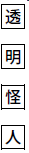
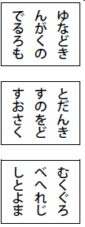
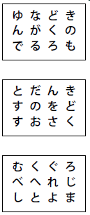
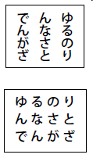

二十面相の改名
「透明怪人」の事件で、名探偵、
二十面相といえば、これまでに、なんどとなく、
なにしろ、「透明怪人」という、とほうもない大事件の犯人が、みごとにつかまり、しかも、その犯人が怪人二十面相と、わかったのですから、世間は、もう、このうわさで、もちきりです。新聞も、怪人がつかまったいきさつを、くわしく書きたてますし、人がふたりよれば、お天気のあいさつのかわりに、二十面相の話をするという、ありさまです。
名探偵、明智小五郎の名声は、この大とり物によって、いやがうえにも高くなり、「透明怪人」をとらえた、日本のシャーロック・ホームズとして、西洋の新聞にも、明智のてがらばなしが、大きくのせられたほどです。
この人気をあてこんで、二つの映画会社が、「透明怪人」事件の映画をつくることになりましたが、芝居のほうでも、
ところが、二十面相が拘置所に入れられてから、五日めのことです。東京でも、いちばん読者の多い「日本新聞」に、つぎのような記事がデカデカとのせられ、世間をアッとおどろかせました。
「四十面相」と改名
いよいよ大事業にのりだす
拘置所内の二十面相から本紙によせた不敵の宣言
いよいよ大事業にのりだす
拘置所内の二十面相から本紙によせた不敵の宣言
『わたしは明智小五郎にまけた。しかし、これで、かぶとをぬいでしまったわけではない。ちかく
しかし、そのまえに、世間に知らせておきたいことがある。それは、わたしの名まえについてだ。世間では、わたしを二十面相と呼んでいるが、わたしは大不平だ。わたしの顔は、たった二十ぐらいではない。その倍でも、まだ、たりないほどだ。もっとも少なく見ても、わたしは、四十以上の、まったくちがった顔を、もっているつもりだ。そこで、わたしは、これから、四十面相と、なのることにした。二十面相を卒業して四十面相になったのだ。こんどは、わたしを四十面相と呼んでもらいたい――。さて、改名のてはじめに、わたしは、いままでに、いちども手がけなかったような、大事業にとりかかるつもりだ。それが、どんな事業だかは、また、あらためて通信する。』
この記事を読んだ世間の人々が、アッとぎょうてんしたことはいうまでもありません。しかし、いちばんおどろいたのは、Ｉ拘置所長です。未決囚から、かってに、新聞社へ手紙なぞだされては、拘置所というものは、ないもどうぜんです。拘置所ばかりでなく、検察庁や警察の名誉にもかかわるわけです。
そこでＩ拘置所長は、部下をしかりつけて、もんだいの投書が、どうして、そとへもちだされたのか、そのすじみちを、手をつくしてしらべさせましたが、すこしもわかりません。じつにふしぎです。ほんとうに、魔法でもつかわなければ、そんなことができるはずはないのです。
拘置所では、ふたたび、そんなことがおこらないように、いよいよ、見はりを、げんじゅうにしました。
ところが、それから二日ののちには、またしても、おなじ「日本新聞」に、四十面相の第二の投書が発表されたのです。
四十面相の新事業
「黄金どくろ」の秘密
Ｉ拘置所からふたたび通信
「黄金どくろ」の秘密
Ｉ拘置所からふたたび通信
『前回のわたしの通信を、
わたしの新事業とは“黄金どくろ”の秘密を、あばくことである。それ以上くわしいことは、いまは言えないが、もし、わたしが、その秘密を発見することができたならば、日本じゅうを、いや、世界じゅうをおどろかすような、大事件となることを、確信をもって、予告する。
それには、まず、このＩ拘置所を脱出しなければならない。だが、その日も、目のまえにせまっている。わたしは、やすやすと、牢やぶりをしてみせる。そのかどでにあたって、本紙読者諸君の健康をいのるものである。』
ああ、なんという、ぼうじゃくぶじんの言いぐさでしょう。拘置所の囚人が、まもなく牢やぶりをするぞと、言いふらしているのです。
この記事を読んだ世間は、ふたたび、わきかえりました。拘置所でも、よういならぬじたいとみて、いよいよ警戒をげんじゅうに、四十面相の独房には、ピストルで武装した五人の看守が、すこしもゆだんなく、見はりをつづけることになりました。
それにしても、四十面相のやることは、とんと、がてんがいきません。牢やぶりをするぞと、新聞に書けば、ますます、見はりが、げんじゅうになるばかりではありませんか。自分で、自分を、しばっているようなものです。
ところが、あとになって考えてみますと、それが、じつは、大奇術師の秘密の「手」であったことがわかりました。四十面相が、新聞にあんな投書をしたのは、なにも名誉心のためではありません。あれは牢やぶりに、ぜひとも必要な、てだてにすぎませんでした。ああ、なんということでしょう。怪人四十面相の、わるぢえは、まったく、おくそこが、知れないほどです。
弁護士の帽子
「日本新聞」に四十面相の第二の通信がのったあくる日、Ｉ拘置所長のところへ、四十面相事件のかかりの
いま、そちらへ、明智探偵がゆくから、四十面相に面会させるように、ということでした。
所長はそれを聞くと、なんとなくホッとしました。四十面相が牢やぶりを宣言しているさいに、かれをとらえた名探偵が、来てくれるというのは、ねがってもないことでした。
まつほどもなく、明智探偵の自動車が、拘置所の玄関に、着いたので、所長は明智を、ていねいに、自分の部屋へあんないさせました。
「いや、じつは、わたしのほうから、おいでをねがいたいと、思っていたところです。四十面相のやつは、あの新聞社への手紙を、げんじゅうな独房のなかから、どうして送るのか、そのやりかたが、まったく、わからないのです。このうえは、もう、あなたにでもおしらべねがうほかはないと、考えていたのですよ。」
明智は、それに答えて、
「ぼくも、そのことで、おたずねしたのです。木下検事にたのまれてね。ねんのために、裁判所の面会許可証も、用意してきました。これをごらんください。一度、ぼくを、四十面相に、あわせてくださいませんか。ぼくが話をすれば、あるいは、あいつの秘密が、わかるかもしれません。」
この明智のことばを、所長は、まちかねていたように、
「どうか、おねがいします。わたしとしては、どんなことがあっても、あいつの脱獄をふせがねばなりません。ひとつ、よい知恵を、おかしください。」
そこで、所長は看守長をよんで、明智をひきあわせ、できるだけ、べんぎをはかるように言いつけ、看守長は、さっそく、明智を、四十面相の独房へ、あんないしました。
ふつうなれば、面会室へよびだして、話をするのですが、あいては魔術師のようなやつですから、独房から一歩でも、そとへ出すのは、あぶないので、明智のほうから独房へはいって、話すことにしたのです。
独房のまえには、腰にピストルをつけた五人の看守が、いかめしく、番をしていました。看守長はそのひとりに命じて、かぎで独房の扉を、ひらかせました。明智は看守長にむかって、
「では、しばらく、あいつと、さしむかいで話したいとおもいますから、看守のかたたちを、すこし、はなれたところへ、遠ざけてくれませんか。」
「しょうちしました。では、われわれは、廊下のむこうのほうで、おまちしていますから。」
看守長は、五人の看守といっしょに、独房のまえをはなれ、廊下のはじに、ひきさがります。明智はひとりで、独房にはいり、中から扉をしめました。いよいよ、四十面相と名探偵の、さしむかいです。
看守長は、もし、ふたりのあいだに、あらそいでもおこったら、かけつけるつもりで、耳をすましていましたが、独房の中からは、ひくい話しごえが、とだえがちに、もれてくるばかりでした。
そして、二十分ほども、たったでしょうか、ふたたび、扉がひらいて、明智探偵が、にこにこしながら、廊下に、すがたをあらわしました。
「すみました。どうか、かぎをかけてください。」
五人の看守は、独房のまえの、もとの位置につき、中に四十面相がいることを、たしかめたうえ、ひとりが、扉にかぎをかけました。
明智と看守長は、そのまま、所長室にもどり、明智は、まちかねていた所長のまえに腰をかけると、すぐに、話しはじめるのでした。
「四十面相が、通信をする秘密は、わかりました。弁護士が共犯者ですよ。」
所長はおどろいて、
「エッ、弁護士ですって？ あれの弁護士は鈴木君です。わたしは鈴木君とは長年の親友ですが、けっして、そんな、悪いことをする男じゃない。なにかの、まちがいではありませんか。」
「いや、弁護士が悪いのではありません。本人がすこしも知らないまに、四十面相の通信係を、つとめていたのです。四十面相は、フランスの紳士盗賊、アルセーヌ・ルパンのまねをしたのですよ。
弁護士だけは、いつでも、自由に、未決囚と面会することができるし、未決囚のほうから、すきなときに、弁護士をよぶこともできます。しかも、弁護士にかぎって、立会人がつきません。ふたりきりで話ができるのです。四十面相は、それを利用したのですよ。
鈴木弁護士は、いつもソフト帽をかぶってくるそうですね。そして、独房の中で話をするときには、それを、横の台の上に、のせておくのです。四十面相は、弁護士がわきみをしているすきに、そのソフトの下に手をいれ、うちがわのビン
部下のほうから四十面相に通信するときも、同じやりかたで、弁護士のソフト帽がつかわれます。
つまり、鈴木弁護士の帽子は、郵便配達のカバンのやくを、つとめていたわけですよ。」
これを聞いた所長と看守長は、あいた口が、ふさがりませんでした。
「フーン、弁護士の帽子とは、考えたな。よろしい、さっそく、このことを鈴木君に知らせます。そして、書生に化けている部下を、ひっくくってしまいます。しかし、明智さん、あなたは、よくそこまでおわかりになりましたね。あいつが、うちあけたのですか。」
「そうです。あいつの口から、きいたのです。四十面相とは、ながいあいだの、つきあいですからね。あいつのやりくちは、たいてい、わかっているのです。ぼくは、ルパンのまねじゃないか、と思ったので、『弁護士の帽子だね。』と、言ってやりました。すると、あいつはニヤリと笑って、うなずいてみせたものですよ。悪人も四十面相ほどのやつになると、みれんらしく、かくしだてなんか、しないものです。」
明智が話しおわると、所長は、ていねいに頭をさげて、
「ありがとう。おかげで、あいつの通信のみちをたつことができます。ですが、明智さん、脱獄のほうはだいじょうぶでしょうか。あいつには、われわれの思いもよらない、牢やぶりの手があるのじゃないでしょうか。」
「それは、わかりませんね。ルパンも脱獄したことがあります。あいつは、その手をもちいるかもしれませんよ。」
「それはどんな方法です。参考のために、きかせてください。なんとしても、脱獄だけはふせがなくてはなりません。」
「それでは、あとから、怪盗ルパンの伝記を、おとどけしましょう。その伝記のなかの『ルパンの脱獄』というのをお読みになれば、わかりますよ。」
明智はそういって、なぜか、ニヤリと、ふしぎな笑いをもらしました。
小林少年
それから、まもなく、明智探偵は、所長と看守長の見おくりをうけて、拘置所を出ると、またせてあった自動車にのりました。
その自動車には、運転手のとなりに、十四、五歳の少年助手が、チョコンと腰かけています。茶色のセーターをきて、小さな鳥打帽をかぶり、顔はあぶらで黒くよごれていますが、なんとなく、かわいらしい少年です。
自動車は矢のように走っています。しかし、ふしぎなことに、明智探偵事務所とは、まるでちがった方角です。日比谷から有楽町のほうにまがって、やがて、とまったところは、世界劇場の楽屋口でした。
明智探偵は、車をおりると、まるで、そこが、自分のうちででもあるように、世界劇場の楽屋口へ、はいっていきます。すると、運転助手の、まっ黒な顔をした少年も、明智のあとを追って、チョコチョコと楽屋口に走りより、その中へ、すがたをけしました。
楽屋口をはいって、階段を二つのぼったところに「
明智探偵が、劇場の楽屋へ来たのに、「おかえりなさい。」とは、なんだか、へんなあいさつではありませんか。ところが、そのつぎには、もっと、ふしぎなことが、おこりました。
明智は「村上時雄」の部屋にはいると、正面においてある鏡のまえに、ドッカと、あぐらをかいたのです。すると、さっきの青年が、うやうやしく、お茶をもってきます。明智はそのお茶をすすりながら、
「やっと、まにあったね。ぼくの出まで、何分ある？」
とたずねます。
「あと十分です。」
「よし、服装はこのままでいいね。ちょっと、明智役の書きぬきを見せてくれ。すこし、せりふを、かえたいところがあるんだ。」
といって、青年のさしだす脚本の書きぬきをうけとり、ねっしんに読みはじめました。
読者諸君、これはいったい、どうしたことでしょう。名探偵、明智小五郎が、楽屋の鏡のまえにすわって、まるで役者のように、せりふの書きぬきを読んでいるのです。明智は、気でもちがったのでしょうか。
いや、このなぞは、諸君が一度、世界劇場のおもてに、まわってみれば、すっかり、とけるのです。
劇場の正面に、大きな看板が出ています。それには一メートル四方ほどの字で、

と、書いてあります。つまり、世間をさわがせた「透明怪人」の事件を、芝居にしくんで、いま、この世界劇場で、上演しているのです。その看板の、横のほうには、
名探偵明智小五郎
透明怪人・二役主演
村上時雄
透明怪人・二役主演
村上時雄
すると、いま楽屋にはいった明智探偵は、じつは村上時雄なのでしょうか。かれを出むかえた青年は村上の弟子らしいのですが、その弟子が、すこしも、うたがっていないところをみると、これはもう、明智の役にふんした村上に、ちがいありません。
さあ、わからなくなってきました。拘置所をたずねて、四十面相に面会したのは、たしかに、この明智です。それが、じつは村上時雄という役者だったとすると、いったい、どういうことに、なるのでしょうか。
さて、もう一度、楽屋のほうにもどります。明智探偵にふんした村上時雄は、書きぬきを読みおわると、鏡にむかって、ちょっと顔をなおしてから、ひとりで部屋を出て、うすぐらい廊下を、舞台へおりる階段のほうへ、歩いていきます。
ところが、そのとき、みょうなことが、おこりました。見ると、村上の五メートルほどあとから、小さな人かげが、ソッと
村上は、それともしらず、せまい階段を、トントンとおりていきます。少年は、かげのように、そのあとをつけるのです。そして、階段を半分ほどおりたとき、少年のふんだ階段の板が、ギーッと大きな音をたてました。少年はハッとして、立ちどまりましたが、さきにたつ村上は、べつに気づいたようすもありません。
少年は、二度と音をたてないように、用心ぶかく階段をおりて、下の廊下に立ちました。そして、なおも尾行をつづけようとしていますと、そのとき、とつぜん、むこうをむいて歩いていた村上が、とつぜん、クルッと、こちらをむきました。
逃げだすひまも、なにもありません。村上はパッと少年にとびかかって、いきなり、そのからだを、だきすくめてしまいました。
「さわぐんじゃない。大きな音をたてると、しめころしてしまうぞ。さあ、白状しろ、きさま、なにものだ。なぜ、おれのあとをつけるんだ。おやッ、きさま、さっきの自動車の助手だな。ハハア、すると、おれがここを出たときから、つけてたんだな。」
明智のふんそうをした村上は、小声で、そんなことを言いながら、少年のからだをグイグイと、階段の下の暗やみの中へ、押していきます。少年は、されるままになって、ひとことも口をききません。
「フフン、わかったぞ。きさま、明智の助手の小林だな。顔に
村上は、いまにもくいつきそうな、おそろしい顔をして、少年をにらみつけました。
「知っているよ。」
少年は、しずかな声で、はじめて、口をききました。
「フーン、それじゃあ、おれの正体もか。」
「そうだよ。きみは村上時雄じゃない。いま、拘置所から、脱獄してきたばかりの、二十面相、いや、四十面相だッ。」
小林少年は、ズバリと、言ってのけました。
怪人対小林少年
それをきくと、あいては、ギョッとしたように、小林君をつかんでいた手をゆるめましたが、たちまち、気をとりなおして、うすきみ悪く、ニヤニヤと、笑いだすのでした。
「ウフフフ……、えらい、えらい、きみはりこうだねえ。探偵の助手にしておくのはおしいくらいだ。おれも、きみのような弟子がほしくなったよ……。ところで、おれが四十面相だったら、きみはどうしようと、言うんだね。」
そして、明智探偵のふんそうをした四十面相の顔が、グーッと小林の目のまえにせまり、両腕が小林君の肩を、おそろしい力で、しめつけてくるのでした。でも、小林君はへいきです。
「どうもしないよ。もう、この劇場は、警官隊に、とりかこまれているんだよ。きみは、いまに、つかまるばかりだよ。」
「ウヌッ、それじゃ、きさまは。」
さすがの四十面相も、サッと顔色がかわったようです。
「きみが楽屋にいるあいだに、ぼくが明智先生に電話をかけたんだよ。そして、先生からすぐに警察へれんらくしたので、いまごろは、世界劇場のまわりは、おまわりさんに、とりかこまれているはずだよ……。それで、きみ、どうするの？ もう、とても逃げられやしないよ。」
そのとき、四十面相は、すっかり、どきょうをきめたようにみえました。かれは、この
「警官隊が、この劇場をとりまいているというのかい。ハハハ……、ゆかいだねえ。おれは、こういう冒険が三度のめしよりも、すきなんだよ。小林君、見ててごらん。おれは、かならず、逃げてみせる。みごとに、やってのけるよ。まあ、ゆっくり見物したまえ。」
「で、どうするの？」
「これから舞台へ出て、芝居をやるのさ。」
明智のふんそうをした四十面相は、小林少年をつきはなすと、そのままあとも見ないで、舞台のほうへ立ちさるのでした。ちょうど、そのとき、「透明怪人」劇に明智のやくが、登場する時間がきていたからです。
ああ、なんという大胆不敵、警官隊が劇場をかこみ、ジリジリとその輪をせばめているというのに、かれは舞台に出て、満員の見物の前で、芝居を演じようというのです。かれは、はたして、この難局を、うまく切りぬける自信があるのでしょうか。
こうして、全日本をおどろかせた、あの世界劇場の大活劇がいよいよ、はじまろうとしているのです。
劇場のとり物
そのとき、世界劇場の見物席は、一階も二階も三階も、われかえるような満員でした。あれほど、世間をさわがせた「透明怪人」の芝居ですから、めずらしさにかられた人々が、われもわれもと、おしかけて、毎日、切符売場には長い行列がつづくのです。
舞台では「透明怪人」劇が、
芝居のすじは、じっさいの事件とは、すこしちがって、その部屋へ、明智探偵に化けた二十面相があらわれ、この事件の捜査主任の中村係長が、その正体を見やぶるということになっています。
小林少年を、うす暗い廊下にのこして、舞台にいそいだ四十面相は、いましも、実験室の入り口から、ヌーッとすがたをあらわしました。いうまでもなく、明智小五郎のふんそうです。しかし、見物はそれが、あのおそろしい四十面相だなどとは、すこしも知りません。俳優の村上時雄だと思いこんでいます。有名なモジャモジャ頭のカツラに、あかるい空色の背広を着た明智があらわれると、見物席ぜんたいにわれるような、はくしゅがおこりました。
しばらくすると、舞台の実験室の、べつの入り口から、背広すがたの中村捜査係長が、はいってきました。むろん、これも俳優がふんした中村係長です。にせ明智は、それを見ると、ふいをつかれて、ハッとしたように身がまえをします。中村係長は、ツカツカと、そのまえに近づき、右手をあげて、あいての顔を、まっこうから指さしながら、いきなり、どなりつけるのでした。
「きさま、よくも、
「なに、化けたとは？」
にせ明智は、わざと、いぶかしそうに、聞きかえします。
「きさまは、明智探偵ではない、透明怪人の首領だろう。警察では、もうすっかりわかっているのだ。こんどこそ、逃がさないぞ。」
中村係長は、さけびながら、部屋の入り口にむかって、あいずをします。すると、そこから、五人の制服警官が、とびだしてきて、サッと、にせ明智のまわりをとりかこみました。それを見ると、にせ明智は、さもおかしそうに、大きな声で笑いだしました。
「ワハハハ……、きみたちの人数はそれっきりか。たった五人では、ちっとものたりないね。おれは、けっして、つかまらないよ。魔術師には、きみたちの夢にもしらない、おくの手があるのだ。」
舞台のやりとりが、そこまですすんだとき、とつぜん、見物席のうしろのほうに、ふしぎな、ざわめきが、おこりました。満場の見物の顔が、なにごとかと、いっせいに、そのほうをふりむきました。
うしろには、そとの廊下から見物席への入り口が、六ヵ所にひらいています。そのぜんぶの入り口から、ピストルで武装した警官が、三、四人ずつ、はいってくるのがみえました。いかめしい顔つきで、見物席のイスのあいだを、グングンと舞台のほうへ、すすんできます。じつに、ものものしい光景です。
この思いもよらぬできごとに、見物席は、シーンと、しずまりかえってしまいましたが、見物のうちには、これも、芝居のすじではないかと思った人もあるようです。なにしろ、きばつな「透明怪人」劇のことですから、見物をアッと言わせるために、こんな芝居を、しくまないとも、かぎらぬからです。
しかし、よく見ると、いま、はいってきた二十数人の警官は、どうも俳優らしくありません。舞台の、芝居の警官とくらべると、まるで、感じがちがうのです。
すると、そのとき、またしても、アッというようなことが、おこりました。こんどは舞台のほうです。舞台の両がわにある俳優の出入り口から、それぞれ五、六人の武装警官があらわれ、実験室のまんなかに立っている、にせ明智のほうへ、ジリジリと、せまっていくのです。
ぜんたいで三十数人にすぎませんが、よくめだつ警官服ですから、まるで、舞台も見物席も、武装警官で、いっぱいになったように感じられました。
さっき、舞台のにせ明智が言ったように、芝居のほうの警官は、中村係長と五人の
いったい、まあ、これはどうしたというのでしょう。見物席は、にわかに、さわがしくなりました。われさきにと立ちあがって、ことのしだいを見きわめようとします。気のよわい女の人などは、席を立って、逃げだすという、さわぎです。
だれよりも早く、この警官隊に気づいたのは、舞台のまんなかにいる四十面相のにせ明智でした。かれは、見物席のうしろからと、舞台の両がわから、あらわれた三十余人の、ほんものの警官をにらみまわしながら、またしても、人もなげに、カラカラと笑いだすのでした。
「ワハハハ……五人ぐらいでは、ものたりないと言ったら、たちまち数倍の警官隊があらわれたね。これなら、敵にとって、ふそくはないぞ。いよいよ魔術師のうでまえを、お目にかけるときがきたようだな。諸君、どうか、お見おとしのないように。」
四十面相のにせ明智は、そんな、おどけを言いながら、見物席にむかって、ものものしくおじぎをしてみせるのでした。
消える怪人
ひとりの背広の紳士が、見物席のうしろからあらわれた警官隊の、まっさきに立っていましたが、このとき、その紳士はヒラリと舞台にとびあがり、ツカツカと俳優たちのそばへ近づいていました。この紳士こそ、ほかならぬ、ほんものの中村係長だったのです。
俳優のふんした中村係長と、ほんものの中村係長とが、こうして舞台のまんなかで、顔をあわせました。じつに、ふしぎな光景です。
「あなたはだれです。これは、いったい、どうしたことです。」
俳優の中村係長が、めんくらって、どもりながら、たずねます。
「われわれは、あいつを、つかまえにきたのです。ぼくは警視庁捜査一課の中村です。」
「アッ、あなたが中村さん……。」
俳優の中村係長は、おどろきのあまり、タジタジとあとじさりをしました。
「しかし、なぜですか？ あの男は、わたしどもの座長の村上時雄という俳優です。村上が、なにか悪いことでもしたのでしょうか。」
「いや、あの男は村上じゃない。拘置所からぬけだしてきたばかりの四十面相だ。われわれは確証をにぎっている。説明はあとでします。そこを、どいてください。」
「エッ、この男が、あの、四十面相……。」
俳優の中村係長は、まっさおになって立ちすくんでしまいました。
この、舞台での問答が、前のほうの見物に聞こえたから、たまりません。たちまち、それが、口から口へとつたわり、「四十面相だッ。」「あれが魔術師の四十面相だッ。」という、おそれにみちた、つぶやきが、場内ぜんたいにひろがって、見物席はわきたつような、さわぎになりました。
気の強い連中は、舞台のほうへおしかける。老人や、女、子どもは、こわさがさきにたって、われがちにと、出口のほうへ、なだれをうつ。おしたおされて、うめく声、子どもの泣きごえ、女の悲鳴、まるで、
このとき、舞台の四十面相は、三方から、せまる警官隊に、おいつめられて、大きな化学実験台のうしろに、しりぞいていました。背景の黒ビロードの幕のまえに、にせ明智の空色の背広が、クッキリとうきだしてみえています。
「ワハハハ……、じつにゆかいだ。この冒険はたまらないよ。諸君、四十面相のさいごを見とどけてくれたまえ。諸君は、あとにもさきにも、こんな大芝居を、二度と見ることは、できないだろう……。それでは、諸君、おさらば……。」
かれの声が、だんだん、かすかになっていったかと思うと、ふしぎ、ふしぎ、四十面相のにせ明智の顔が、フッと、かきけすように、見えなくなってしまったではありませんか。あとには、首のない空色の背広だけが、立っているのです。
つぎには、その背広の上着が、ヒラヒラと空中にまいあがり、ひとりでにネクタイがとけ、ワイシャツがぬげたかと思うと、その下には、からだがなくて、まったくの、からっぽなのです。アッと、おどろくまに、こんどは、ズボンがズルズルと下へさがっていって、腰から下にも、なかみのないことがわかりました。つまり、洋服やシャツをぬいだ四十面相のからだは、かんぜんに、消えてなくなったのです。透明怪人になってしまったのです。
警官たちは、このふしぎを見せられて、思わず、立ちすくんでいましたが、そこへ、舞台の横から、いきなり、小林少年が、とびだしてきました。そして、大声に、わめくのでした。
「中村さん、いつもの手です。あいつのとくいなブラック・マジックです。四十面相は洋服とシャツの下に、もう一枚、黒いシャツとズボンを着ていたのです。そして、黒いきれで、顔をつつんだのです。すると、黒幕のまえでは、なにも見えなくなってしまうのです。あいつは、黒幕のあわせめから、舞台のうしろへ、逃げました。はやく追っかけてください。全身まっ黒な怪物が、四十面相です。」
ソレッというので、警官隊は、黒ビロードの幕におしかけました。二枚の幕が、まんなかで、かさなっていて、そこから舞台のうらへ、出られるのです。中村係長がさきになって、その黒幕をくぐりぬけました。
ガランとした、ひろい舞台うらには、小さなはだか電灯が、ところどころにぶらさがっているばかりで、しばらくは、なにも見えません。
やがて、目がなれるにつれて、うす暗いすみずみが、ハッキリ見えてきましたが、すると、見あげるような高い天井から、まるで大きなクモのように、まっ黒な人間のかたちをしたものが、ほそいひもで、ぶらさがっていることが、わかりました。
塔上の怪獣
その下へ、近よって、よく見ると、三十センチおきぐらいに大きなむすび玉のある、ほそい黒いひもが、天井からさがっているのです。全身まっ黒な怪物は、そのひもをつたって、足の指をむすび玉にかけて、スルスルと、のぼっていくのです。
「とまれッ。とまらぬと、ピストルをうつぞッ。」
中村係長が、天井にむかって、どなりました。しかし、黒い怪物は、すこしも、ひるまないで、ますます、［＃「ますます、」は底本では「ますます。」］速度をはやめて、のぼっていきます。のぼりながら、からだを左右にふるものですから、黒いひもが、ふりこのようにゆれはじめました。むろん、ピストルのねらいを、はずすためです。
「ぶっぱなせッ。」
中村係長のするどい、さけび声におうじて、一発、二発、三発、ピストルが火をふきました。しかし、警官のピストルは、あいてを殺すためではなく、ただ、動けなくするのが、目的ですから、ひじょうに、ねらいがむずかしいうえに、まとは、ブランブランと、はげしくゆれているのです。なかなかあたるものではありません。
黒い怪物は、ついに、天井の近くにひらいている、小さな窓にたどりつきました。そして、窓わくにまたがると、黒いひもを、スルスルと、てばやく、たぐりあげて、そのまま窓のそとへ、すがたを消してしまいました。
むすび玉のある黒いひもは、四十面相の七つ道具の一つで、じょうぶな絹糸をよりあわせて、つくったものです。のばせば、何十メートルの長さになり、まるめてしまえば、ポケットに、はいるという、べんりな、なわばしごです。
その絹糸のなわばしごは、世界劇場の屋根のいっぽうにそびえる、円形の塔の頂上に、むすびつけてありました。そこから、窓をくぐって、舞台うらにさがっていたのです。四十面相が、いざというときのために、まえもって、用意したのです。
「屋根へ逃げたぞ。みんな、そとに、まわれッ。」
中村係長のさしずで、数人の警官を、舞台うらにのこして、みんな劇場のそとにかけだしました。
そとは、もう夕がたでした。世界劇場の建物にも、そのへんのビルディングにも、もう電灯がつき、となりの大新聞社の電光ニュースは、夕やみのなかに、うつくしく動いていました。
劇場のまわりは、おそろしい人だかりです。怪人四十面相が、屋根へ逃げたということは、またたくまに知れわたり、人々の顔はいっせいに、空をむいています。
ふつうのビルディングでいえば、六階ほどの高さの、劇場の屋根のいっぽうに、西洋のむかしのお城のような、まるい塔がそびえているのです。その塔の上は、たいらになって、そのまわりに、パリのノートルダム寺院の屋上の、あの有名な彫刻をまねた、コンクリートの怪獣が、はるかに地上を見おろしてならんでいます。うすぐらくなった空に、それらの怪獣の、異様なすがたが、黒くクッキリと、うきあがっているのです。
そのとき、地上の群集の中から「ワーッ。」「ワーッ。」というかんせいがあがりました。怪獣と怪獣とのあいだを、なにか黒いものが、チョロチョロと動くのが見えたからです。あまり高いのと、夕やみのために、ハッキリ見さだめることはできませんが、たしかに怪獣とはべつのかたちのものが、動いたようです。まさか、コンクリートの怪獣に、たましいがはいって、動きだしたのではありますまい。
中村係長のさしずで、数人の警官が、塔の中をかけのぼり、いちばん上の部屋までたどりつきました。しかし、塔の屋上へ出る口は、四十面相が、上からふさいでしまったので、どうすることもできません。警官たちは、窓から身をのりだして、屋上の怪人にむかって、なにか、さけんでいるばかりです。その窓から半身をのりだした警官のすがたが、地上からも、かすかに見えています。地上の群集は、こく一こくと、その数をまし、劇場の前を通っている電車も自動車も、いまは立ちおうじょうのありさまです。
しばらくすると、遠くのほうから、サイレンの音が、聞こえはじめ、ひじょうな早さで、それが、近づいてきました。警官隊が、塔の下の群集を、せいりしはじめました。群集は車の下じきになることをおそれて逃げまどい、波がひくように、たちまち、ひろい道がひらけました。けたたましいサイレンの音をたてて、そこへ、のりこんできたのは、二台の消防自動車でした。中村係長がきてんをきかせて、近くの消防署に、おうえんをもとめたのです。
赤い自動車の上から、はげしいエンジンのひびきとともに一本のはしごが、グーッと空にのびています。同時に、いま一台の自動車から、まぶしいほどのまっ白なものが、塔の上をめがけて、矢のように、とびついていきました。
ごらんなさい。探照灯にてらしだされた塔上には、けだもののからだに、鳥のはねがはえ、人間の顔をもつ、ノートルダムの怪獣が、おそろしい
それにしても、四十面相は、これから、どうするつもりなのでしょう。ぜったいに、逃げみちがないではありませんか。脱獄したと思ったら、もう、つかまってしまう運命なのでしょうか。
空にうく怪人
塔の屋根のしたの部屋には、数人の警官がつめかけて、窓から身をのりだし、上のほうをにらみつけて、くちぐちに、なにかさけんでいますが、屋根のでっぱりが、じゃまになって、四十面相のすがたを見ることができません。
その部屋の天井には、屋根への出入り口があり、そこへ鉄のはしごが、かかっていたのですが、四十面相は、まえもって、そのはしごをとりはずし、どこかへかくしてしまい、屋根への出入り口は、上からふたをして、ひらかぬようにしておいたのです。ですから、警官たちは、すぐ頭のうえに四十面相がいることを知りながら、どうすることもできないのでした。
「はしごだ。だれか、はしごを持ってこい。それから、長い
ひとりのおもだった警官がさけぶと、若いふたりの警官が階段をかけおりていきましたが、しばらくすると、木のはしごと、長い金てこを持って、もどってきました。
すぐさま、はしごがかけられ、強そうな、若い警官が、金てこをもって、その頂上に、のぼりつきました。
ドシン、ドシンと、天井に金てこがあたるたびに、くぎでうちつけた出入り口のふたが、ギイギイと音をたてて、すこしずつ、ひらいていきます。
ああ、さすがの四十面相も、いよいよ運のつきです。もうどこにも逃げる場所がありません。出入り口がひらいて、そこから警官隊が屋根の上にのぼってくれば、いくら四十面相が強くても、あいては、おおぜいです。とても、かなうものではありません。
といって、塔の上から、とびおりたら、骨がくだけてしまいます。絹糸のなわばしごはありますが、それをつたっておりるにしても、下には、たくさんの警官がまちかまえているのですから、たちまち、つかまってしまいます。
もう、ぜったいぜつめいです。逃げても、逃げなくても、つかまるにきまっているのです。
ところが、そのとき、じつにふしぎなことが、おこりました。どうしても、逃げられっこない四十面相が、まんまと逃げたのです。思いもよらないやりかたで、みごと逃げてしまったのです。いったい、それは、どんなやりかただったのでしょうか。
まだ、塔の屋根の出入り口が、すっかりひらききらないまえでした。劇場のまえに、むらがっている、地上の群集から、「ワーッ、ワーッ。」という声が、わきおこりました。
それまで、地上の群集は、探照灯にてらしだされた塔の上を、息をころしてみつめていました。「いまに、警官たちが屋根へのぼっていくだろう。そうすれば、塔の上の大とり物が、はじまるのだ。それを見のがしてなるものか。」と、目をさらのようにしてみつめていました。
すると、塔の上の空中に、なにかユラユラとゆれているのが見えました。夜といっても、空はうす明かるく、そこに黒い小さなものが、ブランコのように、ユラユラしているのが、ぼんやりと、見えたのです。
消防車の探照灯係も、それに気づいたとみえ、強いひかりが、そのゆれているものに、パッと、むけられました。
おお、ごらんなさい。まっ黒なすがたの四十面相が、塔の屋根をはなれて、空へのぼっていくではありませんか。なにかにひかれるように、夜の空高く、ズンズンのぼっていくのです。
「やあ、アドバルーン（広告気球）だ。アドバルーンにぶらさがっているのだ。」
だれかが、さけびました。夜空を、まるいふうせんが、ユラユラとのぼっていたのです。探照灯がそれをてらしだしました。大きなふうせんから、つながさがり、そのつなに、赤い布でつくった透、明、怪、人という大文字がむすびつけてあります。「透明怪人」劇のアドバルーンなのです。
アドバルーンは、塔の屋根から、つなで空にういていたのですが、四十面相はそのつなを切って、赤い布の大文字にすがりつき、大ふうせんのとびさるままに、身をまかせたのです。
ちょうどガスをつめたばかりで、大ふうせんは、はちきれんばかりに、ふくらんでいます。そして、グングン空へのぼっていくのです。
探照灯の白いひかりが、それを追っかけ、まるいふうせんは銀色に光っています。その下にさがっている赤い布の大文字、その大文字にとりすがっている、まっ黒な怪人四十面相のすがた。
探照灯のひかりのなかの、銀色のたまは、だんだん小さくなっていきます。夜空を高くたかく、どこまでものぼっていくのです。
もう四十面相のすがたは、見えなくなりました。大文字さえも見えなくなりました。
そして、あの大ふうせんが、野球のボールのように、小さくなってしまいました。
じつに、いのちがけの冒険です。アドバルーンのガスは、すこしずつ、もれていきます。いつかはふうせんがしなびてくるのです。そして浮く力がなくなり、やがて落下するにきまっています。それがもし、ひろい海の上だったら、どうするのでしょうか。
そうでなくて、陸におちても、やっぱり同じことです。もう、四十面相のことは、日本じゅうの警察に知れわたっているのですから、どこに落ちても、たちまち、つかまってしまいます。
四十面相は、いったい、どうするつもりなのでしょうか。
校庭の異変
ここは
世界劇場の塔から、四十面相が、アドバルーンでとびさった、あくる日のお昼すぎのことです。ちょうど、やすみ時間で、生徒たちは、Ｓ小学校のひろい校庭に、みちあふれていました。
野球をするもの、かけっこをするもの、すみのほうにかたまって、女の子らしいあそびをしている女生徒たち、ほうぼうから、ワーッ、ワーッ、という声があがって、たいへんな、さわがしさでした。
そのとき、まっさおに晴れわたった空の、はるかかなたにポッツリと、黒い点があらわれ、それが、すこしずつ大きくなっていきました。
その黒い点が、だんだん、ふくれて、野球のボールほどになったとき、校庭であそんでいた生徒のひとりが、やっと、それに気づきました。
「みてごらん、ホラ、あすこから、へんなものが、とんでくるよ。」
すると、まわりにいた、ほかの生徒たちも、空のかなたをみつめました。
「へんだなあ。あれ、空とぶ円盤かもしれないよ。」
「まさか。でも、だんだん大きくなるね。こっちへ、とんでくるんだよ。」
そのまるいものが、フットボールぐらいの大きさになったときには、校庭にいた生徒のぜんぶが、空をみつめていました。何百人の男の子と女の子が、もう身うごきもしないで、一つところを、みつめているのです。いままで、さわがしかったのが、シーンと、しずまりかえって、なんだか、おそろしいような感じでした。
「やあ、なんだか、さがっているよ。赤い字だよ。」
「ふうせんだ。やあ、銀色に光ってらあ、あれ、広告ふうせんだよ。」
はじめは黒く見えていたのが、大きくなるにしたがって、銀色に光ってきたのです。
「アドバルーンだ。あれ、アドバルーンっていうんだよ。」
みんながガヤガヤ言っているあいだに、その銀色の大ふうせんは、風におくられて、グングンちかづいてきました。
「やあ、へんだなあ。つなに人間がぶらさがってらあ。まっ黒な人間が、ぶらさがってらあ。」
少年たちは、怪人四十面相が、アドバルーンにつかまって逃げたことを、まだ知りません。ですから、まっ黒な人間のさがったふうせんが、とんできたのが、ふしぎでしかたがありませんでした。
あまり、さわがしいので、先生たちも、校庭へ出てこられましたが、先生にもわけがわかりません。みんなといっしょに、空をながめて、ふしぎがるばかりです。
大ふうせんは、もう、みんなの頭の上に、せまっていました。浮く力をうしなって、おそろしい、いきおいで、落ちてくるのです。ガスがぬけてしまったのか、銀色の大ふうせんは、いっぱい、しわがよっています。
「わあ、でっかいなあ。」
ほんとうに、でっかいふうせんです。
「あの黒い人、死んでるのかしら。ちっともうごかないわ。」
女の子が、目ざとく、それに気づいて、かんだかい声で、さけびました。
「ほんとだ。死んでるのかもしれないね。」
「わあ、たいへんだ。ふうせんは、ここへ落ちてくるよ。」
いかにも、大ふうせんはＳ小学校の校庭をめがけて、グングン落ちてくるのです。
「みんな、あぶないから、教室のほうへ、よるんだ。」
先生のさけび声に、生徒たちは、なだれをうって逃げまどいます。
「ワーッ、落ちた、落ちた。」
ワーッ、ワーッという、さわぎのなかに大ふうせんは校庭に落ちてきました。そして地面とすれすれに、フワフワと風にふきおくられています。そのうしろのつなには、かたちのくずれた赤い布の大文字がくっつき、あのまっ黒な人間も、いっしょに、ズルズルと地面をひきずられていくのです。
上級生のゆうかんな少年たちが、十人ほど、大ふうせんにむかって、かけよりました。そして、みんなで、つなにすがりついて、ふうせんが風にふかれるのを、ひきとめてしまいました。
すると、先生がたも、そこへ、かけつけて、まっ黒な人間を、だきおこそうとしました。
「アッ、これは人間じゃない。」
「エッ、人間じゃないって？」
「さわってみたまえ、ゴツゴツしている。こんなかたい人間って、あるもんか。」
ふたりの男の先生は、ふしぎそうに、顔を見あわせていましたが、ひとりの先生が、いきなり、その黒い人間のかぶっていた、ふくめんをはぎとりました。
「なあんだ。こりゃあ人形じゃないか。よくショウウインドウにかざってある、マネキン人形だよ。」
「どうりで、なんだか、かたいとおもった。やっぱり人間じゃなかったのだね。」
先生は安心したように、つぶやくのでした。それを聞くと、生徒たちも、ワーッと、そこへかけよりました。そして、
それから、まもなく、学校の小使いさんの知らせによって、駐在所の警官が、かけつけてきました。警官は怪人四十面相がアドバルーンで逃げたことを、ちゃんと知っていたのです。しらべてみると、たしかに、世界劇場のアドバルーンでした。透、明、怪、人という大文字が、なによりのしょうこです。
それなのに、そのふうせんに、ぶらさがっていたのが、四十面相ではなくて、人形だったとは、いったいどうしたわけなのでしょう。警官は首をかしげて、考えこんでしまいました。
読者諸君、このわけが、おわかりですか。
あの悪がしこい四十面相が、海のまんなかへ落ちるかもしれないアドバルーンなどで逃げるはずがありません。かれは、いざというときの身がわりに、まえもって、人形を用意しておいたのです。黒いシャツを着せ、黒ふくめんをさせた人形を、塔の屋上の、コンクリートの怪獣のかげに、かくしておいたのです。
そして、その人形をアドバルーンのつなに、しばりつけ、さも、自分が空中へ逃げたように見せかけたのです。警官隊も、消防官も、この思いもよらぬ、ごまかしに、まんまとひっかかってしまったのです。
しかし、それなら、ほんとうの四十面相は、いったい、どこへ、かくれてしまったのでしょう。警官隊にとりかこまれた、あの塔の上から、逃げるみちは、空へでものぼるほかには、まったくなかったはずではありませんか。
そこが奇術師の怪人四十面相です。かれは、みんなの目を、アドバルーンに、ひきつけておいて、そのすきに、ふしぎな手品を、つかったのです。あのおおぜいの警官隊の目を、みごとに、くらましてしまったのです。
警官と乞食少年
お話はもとにもどって、黒衣の人形をしばりつけたアドバルーンが、世界劇場の塔から、とびさった、すぐあとのことです。怪獣のならんでいる塔の屋根から、ほそい黒いひもが、スーッとさがり、そのひもをつたって、ひとりの制服の警官が、劇場の屋上へ、おりてきました。
そこは塔のうしろがわなので、だれも見ているものはありません。それに、みんなアドバルーンに気をとられていたので、このふしぎな警官に注意するものは、ひとりもありませんでした。
警官は、いま、つたいおりた、ほそいひもを、手もとにたぐりよせると、それをまるめて、ポケットにおしこみ、屋上の出入り口から、劇場のなかへはいっていきました。
それから五分ほどのち、世界劇場の正面玄関から、さっきの制服警官が、大きなふろしきづつみをかかえて、出てきました。ふろしきのなかみは、なんだかわかりませんが、直径五十センチほどのまるくて、うすべったいものです。大きなおぼんのようなかたちです。
劇場の前のひろばには、まだおおぜいの人々が、むらがっていました。そのなかには警官の一隊も、まじっているのです。その警官のひとりが、いま、玄関から出てきた、ふしぎな警官に、声をかけました。
「きみはどこの署の人ですか。その大きな荷物は、なんです？」
すると、ふしぎな警官が、にこにこしながら、こたえました。
「ぼくは警視庁のものですよ。中村係長さんの命令で、しょうこ品を、持ってかえるのです。」
「みょうなかたちのものですね。それは、いったい、なんですか。」
「ぼくにもわかりませんよ。ふろしきに、つつんだまま、渡されたのです。係長さんは、なにか、お考えがあるのでしょう……。じゃあ、しっけいします。」
ふしぎな警官は、そう言いすてて、人ごみを、かきわけながら、どこかへ、立ちさってしまいました。
それから、また十分ほどのちのことです。
街灯もまばらな暗い町です。両がわには大きな邸宅のコンクリート
ふしぎな警官は、そのさびしい暗い町を、コツコツと、歩きながら、おもしろくてたまらない、というように、ニヤニヤ笑っていました。
「ウフフフ……、うまくいったぞ。われながら感心するほどだ。さっきのおまわりさん、中村係長にあったら、おれのことを報告するだろうな。係長のおったまげる顔が見えるようだ。係長はこんな荷物を、渡したおぼえはないんだからな。
しかし、四十面相が制服警官に
ふしぎな警官は、ブツブツと、口のなかで、そんなことをつぶやいていました。
では、この警官は、じつは、怪人四十面相だったのでしょうか。そうです。これが、かれの大奇術なのです。みんながアドバルーンに気をとられているすきに、かれは絹糸のなわばしごで、塔の屋根からおり、劇場のなかを通って、玄関に出たのです。
警官の制服は、脱獄を用意しているあいだに、部下に命じて黒衣の人形といっしょに、塔上の怪獣のかげに、かくさせておいたものです。なんという用心ぶかさでしょう。脱獄して俳優に化けたあとで、まんいち、正体を見やぶられたときのことを、まえもって、ちゃんと考えておいたのです。そのときはアドバルーンを利用して、警官に化けてと、なにからなにまで、いちぶのすきもなく、用意してあったのです。
かれは、アドバルーンに人形をくくりつけ、つなをきりはなすと、てばやく、その警官服を身につけて、なにくわぬ顔で、むらがる群集と、警官隊の前にすがたをあらわしたのです。
どろぼうが警官に化けるとは、なんという、きばつな思いつきでしょう。しかし、考えてみれば、これがいちばん安全なのです。警視庁と所轄警察署の警官が、いりまじっていて、おたがいに顔を知らないのですから、そこへ、まったく見おぼえのない警官があらわれても、だれも、うたがうものはないのです。
それにしても、警官に化けた四十面相が、こわきにかかえている、まるい荷物は、いったい、なんでしょうか。これは、世界劇場のなかから、持ってきたのにちがいありませんが、あのふろしきのなかには、なにが、つつんであるのでしょう。おそろしく用心ぶかい四十面相のことですから、これも、なにか危急のばあいの、奇術の種かもしれません。
ふしぎな警官は、まだニヤニヤ笑いながら、暗い町を、コツコツと、歩きつづけています。
ところが、よく見ると、その町を歩いているのは、四十面相だけでないことが、わかってきました。四十面相の二十メートルほどあとから、小さな人間が、すこしも足音をたてないで、こっそりと尾行しているではありませんか。
それはゾッとするほど、きたならしい、乞食の少年でした。かみの毛は、モジャモジャにのびて、目の上までたれさがっています。ジャンパーのようなものを着ているのですが、それがボロボロにやぶれ、ズボンも、すそがちぎれて、ひざっこぞうが見え、顔も手も足も、まっ黒によごれて、まるで黒んぼうのような少年です。クツもはかず、すあしに、わらぞうりをはいているのです。そうです。読者諸君が、お気づきになったとおり、これは少年名探偵、小林君の変装すがたでした。
世界劇場のまわりの大群集のなかで、たったひとり、アドバルーンのごまかしを、もしやと、うたがった人間がありました。それが小林少年だったのです。
ずっとまえに、明智探偵が手がけた事件で、犯人がアドバルーンにぶらさがって、逃げたことがあります。それをヘリコプターで追っかけると、犯人だとばかり思っていたのが、じつは人形であったことがわかりました。小林君は、明智探偵から、その話をきいていたものですから、アドバルーンが、とぶのを見ると、すぐそれを思いだしたのです。
そこで、小林君は、おおいそぎで楽屋にとびこむと、顔や手足に、うす黒いえのぐをぬり、衣装部屋にあった、いちばんきたない服を、はさみでズタズタにきりさいて、身につけ、モジャモジャ頭のカツラをかぶって、劇場の屋上にのぼり、塔からおりてくるやつを、見はっていたのです。
また、小林君は、悪がしこい犯人が、警官に化けた事件に、たびたび、であっていましたので、ふしぎな警官のすがたを見ると、すぐに、それとさとりました。そして、尾行をはじめたのです。中村係長に知らせようとしたのですが、きゅうには見つからなかったので、ただひとりで尾行したのです。
暗い町は、どこまでも、つづいています。そのさびしい町を、コツコツと歩く四十面相のにせ警官、あとからコッソリつけていく、きたない乞食少年。じつに奇妙な光景です。
とつぜん、にせ警官が、立ちどまったかと思うと、すばやく、うしろをふりむきました。尾行に気づいたようです。
乞食少年はハッとして、おおいそぎで、そばのいけがきの下へ身をふせましたが、もう、まにあいません。さとられてしまったのです。
にせ警官は、いきなり、かけだしました。そして、むこうの四つかどを、まがるのが見えました。あいてにさとられたからには、もう、やぶれかぶれです。乞食少年も足音たかく、それを追いました。ところが、そのとき、またしても、じつにふしぎなことが、おこったのです。
小林君の乞食少年が、四つかどまでかけつけて、にせ警官のまがったほうを見ますと、そこには、まったく人かげがありませんでした。両がわには高いコンクリート塀がつづいて、まっすぐに、見とおせる町なのですが、にせ警官は、どこへ消えたのか、かげもかたちもありません。
両がわのコンクリート塀は、よじのぼるには高すぎます。地面には四十面相のとくいのかくれ場、マンホールもありません。むこうのまがりかどまでは百メートルもあり、いくら足がはやくても、そこをまがるような時間はなかったはずです。
赤いポスト
小林君は、やにわにかけだして、むこうの町かどまで行ってみました。しかし、どちらを見ても、人かげはありません。しかたがないので、また、もとのところまで、もどってきました。そして、そこに、つっ立ったまま、ながいあいだ、じっとしていました。ちょうど、ネコがネズミを見うしなったときのように、あたりを見まわしながら、息をころして、じっと考えていたのです。しかし、夜の屋敷町には、なんのかわったことも、おこりません。まるで、この世から、人間がいなくなってしまったように、シーンと、しずまりかえっているばかりです。
さすがの小林君も、とうとう、あきらめたようです。チェッと舌うちをして、肩をすぼめると、そのまま、もと来たほうへ、立ちさってしまいました。
小林君がいなくなって、しばらくのあいだは、なにごともおこりませんでした。町は、水の底のように、しずまりかえっていました。ところが、十分ほどたったかと思われるころ、じつに、なんともいえない、きみの悪いことが、はじまったのです。
その町かどのコンクリートの塀の前に、赤い郵便ポストが立っていました。遠くの街灯のひかりが、ボンヤリと、それをてらしています。その赤いポストが、しずかに、しずかに、ジリッ、ジリッと、まわっているのです。コンクリートでできたポストが、まるで生きもののように、からだをまわしていたのです。
ポストの上のほうに、手紙をいれる横に長い穴があります。そのまっ黒な穴のなかから、なにかキラッと、光るものが見えました。目です。人間のだか、動物のだかわかりませんが、二つの大きな目が、そこから、そとをのぞいているのです。ポストを、ジリッ、ジリッとまわしながら、その二つの目が、あたりを、くまなく見まわしているのです。
つぎには、もっと、きみの悪いことが、おこりました。
赤いポストが、まわるだけでなくて、横にうごきだしたのです。ゆっくり、ゆっくり、まるで虫がはうように、コンクリートの塀にそって動いているのです。そして、いつのまにか、もとの場所から十メートルもへだたったところへ、行っていました。ポストは生きているのです。生きて、歩きだしたのです。
ところが、そのつぎには、もっと、もっと、おそろしいことが、おこりました。
ポストの下の石の台が、ユラユラと動いて、その下から、黒い手ぶくろをはめた、人間の手が二本、ニュッと出たのです。そして、その手が、石の台を、かるがると持ちあげたかと思うと、石の台も、赤いポストも、クルクルと、まきあがるように、上のほうへちぢんでゆくのです。みるみる、ポストの三分の一ほどが、地面から上のほうへもちあがり、その下から、ニューッと二本の足が、あらわれました。黒い警官のズボンとクツです。
ポストは、まだまだちぢんでゆきます。警官服の胸があらわれ、肩があらわれ、ついに顔まであらわれました。ああ、やっぱりそうでした。ポストの中にかくれていたのは、四十面相だったのです。四十面相の顔が、遠くの街灯のひかりをうけて、ニヤリと笑いました。
ポストは、四十面相の頭の上で、大きな赤いおぼんのように、ひらべったく、ちぢんでいました。コンクリートのポストが、そんなにちぢんでしまうなんて、いったい、どうしたしかけなのでしょう。
これは、四十面相の発明したかくれみのでした。そのポストは、たくさんのうすい
それにポストと同じ赤いペンキがぬってあって、金属の輪のつぎめも、ひじょうに、うまくできているので、うすぐらい場所では、ほんもののポストとそっくりに見えたのです。
四十面相は、さっき、小林君に尾行されていると気づいたとき、町かどをまがると、かかえていたふろしきづつみを、おおいそぎでほどき、赤い、大きなおぼんのようなものを、頭の上にのせて、カチッと、とめがねをはずしたのです。すると、かさなりあっていた、うすい金属の輪が、サーッと下におりて、ポストのかたちになってしまいました。金の輪でできた石の台まで、ちゃんとついています。ふろしきをといてから、ポストのかたちができるまで、三十秒もかからなかったでしょう。
こうして、四十面相は、みごとに忍術を使いました。ポストというかくれみのの中にはいって、この世から、すがたを消してしまったのです。なんとまあ、きばつなかくれみのではありませんか。
その町かどには、もともと、ポストはなかったのです。しかし、小林君は、そんなことは知りません。いちども来たことのない町ですから、ほんとうのポストだと、思いこんでしまったのです。まさか、四十面相が、こんな、のびちぢみ自在のポストを、用意していようとは、いくら名探偵の小林君でも気がつくはずがありません。小林君は、このお化けポストに、まんまとだまされてしまったのです。
四十面相は、かくれみののポストを、五センチほどにちぢめてしまうと、ポケットに入れておいたふろしきで、もとのようにつつみました。大きなおぼんのかたちになったのです。
かれは、そのふろしきづつみを、ひとふり振って、ヒョイと、コンクリートの塀の中へ、投げこみました。そして、そのそばに立っていた電柱に、両手をかけたかとおもうと、まるでサルのように、スルスルとそれをのぼり、そこから塀の上にとびついて、そのまま、その大きな屋敷の中へ、すがたをかくしてしまいました。
四十面相は、そのあいだも、たえずニヤニヤ笑っていました。小林少年というチンピラ探偵に、まんまといっぱいくわせたのが、ゆかいでたまらなかったのです。
しかし、チンピラ探偵は、はたして、いっぱいくわされたのでしょうか。子どもながらも、明智探偵のだいじな弟子です。しかも、あいては、うらみかさなる怪人四十面相です。むざむざ、まけてしまうはずはありません。
それにしても、四十面相は、このコンクリート塀の大邸宅に、しのびこんで、なにをするつもりでしょう。ただ、そこから、べつの町へぬけだして、逃げるだけのためだったのでしょうか。もっとほかに、大きなもくろみが、あったのではないでしょうか。
やみの中の少女
四十面相がコンクリート塀の中へ、消えたあと、町はまたシーンと、しずまりかえって、なんの動くものもありません。映画の回転が、とつぜん、ピッタリと、とまってしまったような感じです。
まちどおしい時間が、ノロノロとすぎて、やがて五分もたったころです。さっき四十面相の、にせポストが立っていた町かどの、こちらから、小さな人間のすがたが、ヒョイと、街灯のひかりの中にあらわれました。ボロボロの服を着た乞食少年です。
小林君は、立ちさったと見せかけて、町かどのこちらがわの、まっ暗なところに、かくれていたのです。そして、四十面相が塀の中へ、はいってしまっても、用心ぶかく、しばらく、ようすをうかがってから、あらわれたのです。
小林君はチョコチョコと、れいの電柱のところまで、走っていって、そこでまた、じっと耳をすましていましたが、やっと決心したように、電柱にとびつくと、スルスルと、それをのぼって、四十面相と同じように、コンクリート塀の上にまたがり、ヒラリと、中へとびおりました。
そこは、ひろい庭で、大きな木が林のように、ならんでいます。小林君は、もの音をたてぬように、気をつけながら、そのまっ黒な木の幹のあいだを、用心ぶかく、すすんでいきました。
どこからか、赤いひかりが、さしています。それを目あてに、あるいていきますと、やがて、林のようなところをぬけて、ひろい場所に出ました。
むこうに、洋館がヌーッと黒い巨人のように、そびえています。その一階の右のすみの窓が一つだけ、明かるく光っているのです。
小林君は、その窓のほうへ、歩きかけたのですが、とつぜん、ハッとして、立ちどまりました。すぐ横の、大きな木の下に、なにか動いているものがあったからです。
四十面相が、まちぶせしていたのでしょうか。いや、そうではありません。そこに立っていたのは、もっと小さな人間だったのです。小学校一年生ぐらいの、かわいい女の子だったのです。オカッパ頭の赤い色の洋服をきた女の子が、両手を目にあてて、シクシクと泣いていたのです。
そんな小さな女の子が、たったひとりで、まっ暗な庭に立っているなんて、ただごとではありません。どこか、近くにおとながいるのではないかと、しばらく、ようすを見ていましたが、どこにも、それらしいすがたは見えないのです。
小林君は、思いきって、女の子のそばにより、ソッと、その肩に手をのせました。すると、女の子はビクッとして、小林君を見あげましたが、乞食の少年のすがたを、こわがって、逃げだすかと思うと、逃げだすどころか、いきなり、おそろしいいきおいで、小林君にすがりついてきました。そして、小林君のからだを、だきしめるようにして、ブルブルふるえているではありませんか。
「どうしたの？ きみ、ここのうちの子なの？」
小林君がささやき声でたずねますと、少女は、コックリとうなずいてみせました。
「どうして、こんなところに、いるの？」
「あたしこわいの。」
少女も、あたりをはばかるように、ささやき声で答えました。
「こわいって、なにがさ。」
「地下室にいるの。お化けがいるの。」
小林君は、いくらお化けがいるにしても、こんなまっ暗な庭のほうが、もっとこわいはずではないかと思いました。こわければ、おとうさんかおかあさんのところへ、行けばいいのにと思いました。
「きみのおとうさんは、おうちにいないの？」
「いないの。さがしても、いないの。」
「おかあさんは？」
「死んだの。もうせん、死んじゃったの。」
「女中さんは？」
「ばあやでしょう。ばあやは、おつかいに行ったの。」
「じゃあ、きみのうちは、おとうさんと、きみと、ばあやと、三人きりなの？」
「ウン。」
「すると、きみは、ひとりぼっちなんだね。」
「ウン。」
どうもへんです。こんな大きな洋館に、たった三人で住んでいるのでしょうか。しかも、おとなはふたりとも、どこかへ行ってしまって、小さな女の子を、ひとりぼっちにしておくなんて、なんというじゃけんな人たちでしょう。いったい、ここの主人というのは、なにをしている人でしょうか。
「きみのおとうさんは、どんな人なの？ おつとめがあるの？」
「
「エ、博士だって？ じゃあ、学者なんだね。」
「そうよ、えらい博士なのよ。」
「なんの博士なの？」
「ご本の博士なの。ご本がどっさりあるの。」
少女には、それ以上のことは、わからないようです。
「きみ、いつから、この庭にいるの。」
「いまよ。いま逃げてきたのよ。」
「どこから？」
「地下室から。」
「きみのお部屋は、地下室にあるの？」
「ううん、あたしのお部屋は、あすこよ。」
少女は、たった一つ電灯のついている窓を、ゆびさしました。
「じゃあ、どうして地下室へ、いったの？」
「音がしたからよ。」
「で、地下室に、何がいたの？」
「お化けよ。お化けが三びきいるの。」
少女は、ふるえ声で答えて、もっとつよく、しがみついてきました。
金色の骸骨
小林君は、少女にだきつかれながら、すばやく頭をはたらかせて考えました。
そのときまでは、少女のお化けというのは、四十面相のことかもしれないと、思っていたのですが、「三びき」だとすると、四十面相ではありません。では、さっき、ここへ、しのびこんだ四十面相は、いったい、どこにいるのでしょう。
もしかすると、このかわいらしい少女が、やっぱり四十面相のなかまで、小林君を、だまそうとしているのかもしれません。すると、四十面相も、庭の林のなかのどこかに、すがたをかくして、ふたりのようすを、うかがっているのではないでしょうか。
そう考えると、少女がかわいい、あどけない顔をしているだけに、いっそう、きみが悪くなってきました。
「あぶない、あぶない。うっかり、ゆだんはできないぞ。四十面相のやつは、じつに思いもよらないことを考えだす、魔術師だからな。」
小林君は、じゅうぶん心をひきしめて、あらためて、少女の顔を、しげしげとながめました。むこうの窓のひかりで、ボンヤリとしか見えませんが、見れば見るほど、むじゃきなかわいい顔です。こんな七つかそこいらの、小さな女の子が、悪人のまわしものだなんて、どうしても考えられないことです。
「その地下室って、どこなの？ ふたりで、いっしょに、行ってみよう。」
小林君は、少女をためすように、言いました。
「こわくないの？」
少女は小林君の顔を、びっくりしたように、見あげるのです。
「こわいもんか。ぼくは、強いんだよ。お化けなんか、ひどいめに、あわせてやる。」
「ほんとう？ 大きなお化けが、三びきもいるのよ。」
「三びきだろうが、五ひきだろうが、へいきだよ。さあ、行ってみよう。」
小林君は、むろん、お化けなんか信じません。きっと、その地下室には、なにかあやしいやつが、しのびこんでいるのに、ちがいないと考えたのです。
小林君の墨をぬった、まっ黒な顔や、ボロボロの服が、かえって、いかにも強そうに見えたのでしょう。少女は小林君といっしょになら、地下室へ行ってもよいと、考えたようです。ふたりは、手をひきあって、洋館にちかづいていきました。
少女のゆびさすドアをひらいて、中にはいり、少女のみちびくままに、暗い廊下をグルグルまわって、地下室の階段をおりました。
階段の上に、小さな電灯がついているだけで、地下室のせまい廊下は、まっ暗でしたが、少女は自分の家ですから、手さぐりでも、わかるのです。
階段をおりるころから、少女はまたブルブルふるえだしました。地下室にいる化けものが、よっぽどこわいのにちがいありません。しかし、あいてにさとられては、たいへんですから、小林君は少女の手をしっかりにぎり、息をころして、ネコのように音をたてないで、歩いていくのです。
すこし行くと、少女はピッタリ立ちどまりました。すぐ目の前に、たてにスーッと、ほそい、光ったすじが見えます。それはドアの板のすきまから、部屋の中のひかりがもれているのでした。
少女は小林君の手をひっぱって、そのすきまから、のぞいてみよという、身ぶりをしました。小林君は用心ぶかく腰をひくめて、そのすきまの、いちばんひろいところへ目をあてましたが、ちょっと、のぞいたかと思うと、ギョッとしたように、目をはなしました。
あまりへんなものが見えたので、じぶんの頭がどうかしたのではないかと、うたがったのです。
気をしずめて、もう一度、のぞいてみました。やっぱりそうです。そこには、まったく思いもよらない、へんてこなものがいたのです。少女が言ったとおり、それは三びきのお化けでした。
部屋のまんなかに、まるいテーブルがあって、その上に、ふるめかしい西洋のしょくだいに、三本のローソクが立って、赤いほのおが、ゆれていました。テーブルをとりまいて三つのイスがおかれ、そこに三人の怪物が腰かけているのです。それは、三つの
いったい、骸骨が生きた人間のように、動いたり、ものを言ったり、するなんて、そんなばかなことが、あるものでしょうか。小林君はいよいよ、自分の頭を、うたがわないではいられませんでした。おそろしい夢を見ているのか、それとも気でもちがったのかと、自分が、こわくなってきました。
こわいのを、がまんして、じっと見ていますと、もっとふしぎなことが、わかりました。その三つの骸骨は、金色をしていたのです。骸骨というものは、白いのがあたりまえですが、ここにいるのは金色の骸骨なのです。身うごきをするたびに、それがローソクの火にてらされて、純金のように、キラキラと光るのです。
ああ、地下室に、ひたいをあつめて、なにごとかささやきあう、三つの黄金の骸骨。これは、いったい、なにを意味するのでしょう。そこには、どんなおそろしい秘密が、かくされていたのでしょう。
骸骨の呪文
骸骨たちのうしろのかべは、三方とも、本だなになっていて、りっぱな本がギッシリつまっていました。それらの本のせなかの金文字が、ローソクの光にてらされて、チカチカと光っています。
小林君は、この、なんともいえぬ、ふしぎな光景を見て、自分の頭が、どうかしたのではないかと、あやしみました。いったい黄金の骸骨なんて、この世にあるものでしょうか。しかも、その金色の三つの骸骨が、まるで生きた人間のように、話をしているのです。身うごきしたり、口をきいたりしているのです。そんなばかなことがあってもいいものでしょうか。
一つの骸骨の、耳までさけた大きな口が、ガクガクと動きました。そして、みょうなしわがれた声が聞こえてくるのです。
「ゆなどき、んがくの、でるろも。」
すると、その右がわの骸骨が、それにこたえるように、歯ばかりの口を、ガクガクやりました。
「むくぐろ、べへれじ、しとよま。」
つづいて、三人めの骸骨が、口を動かしました。
「とだんき、すのをど、すおさく。」
それから、また三人めの骸骨は、その同じことばを、いくども、くりかえしました。日本語でも、英語でも、フランス語でもないのです。ひょっとしたら、それは骸骨たちの住んでいる地獄のことばかもしれません。それとも、なにかの呪文なのでしょうか。金色の骸骨どもは、おそろしい呪文をとなえて、だれかを、のろっているのでしょうか。
「わからん。」
とつぜん、ひとりの骸骨が、日本語をしゃべりました。すると、それにつづいて、あとのふたりの骸骨も日本語で言うのです。
「ウン、いくら考えても、わからん。」
「いくら、となえても、わからん。」
「よし、それじゃあ、今夜は、これだけにしておこう。おたがいに、もっとよく考えるんだね……。では、つぎの金曜日、夜の八時、また、ここであうことにしよう。」
ひとりの骸骨が、そう言って、立ちあがりました。そのひょうしに、ローソクのほのおがゆれて、金色のどくろや、あばら骨が、キラキラと光りました。
「ウン、それがいい。毎日、毎日、考えるんだ。そして、また、金曜日に相談するんだ。どんなことがあっても、この秘密は、とかねばならぬ。」
「そうだ。どんなことがあっても。」
あとのふたりも立ちあがりました。そして、三つの骸骨は、ゆっくりと、こちらへ、歩いてくるのです。
小林少年は、それを見ると、そばにいた少女の手をとって、すばやく、ドアの前をはなれ、まっ暗な廊下のおくへ、身をかくしました。そこの、つきあたりのかべに、少女といっしょに、ピッタリからだをくっつけて、骸骨たちが出てきても、気づかれないようにしたのです。
そうして、息をころしていますと、スーッとドアがひらいて、ローソクのひかりが、その出入り口のへんを、ボンヤリと、明かるくしました。そこへひとりの骸骨が出てきましたが、すると、パッと、黒い大きな布のようなものがひらめいて、金色の骸骨を、スッポリとつつんでしまいました。つまり、骸骨が黒いマントのようなものを、頭からかぶったのです。
つぎに出てきた骸骨も、おなじように、黒いマントをかぶりました。三人めの骸骨も、マントをかぶりました。すると、金色の骨ぐみは、まったくかくれてしまって、そこには、まっ黒な三つの
その三つの黒い影法師は、小林少年たちのかくれている廊下の、はんたいのほうへ歩いていき、やがて、階段をのぼるすがたが、その上にある電灯のひかりをうけて、ハッキリと見えました。
小林少年は、三人の黒法師が、階段をのぼりきってしまったとき、そのあとをつけてやろうと、決心しました。少女が足手まといですが、こわがって、ふるえているのを、おきざりにするわけにはいきません。しかたがないので、少女の手をひいたまま、尾行をすることにしたのです。
少女の手をかたくにぎって、だまって、ついてくるように、あいずをして、足音をしのばせて、階段をのぼりました。
階段の上に頭だけだして、のぞいて見ますと、三つの黒法師は、うす暗い廊下を、むこうのほうへ歩いていくのが見えます。
ひとりの黒法師は、とちゅうでわかれて、二階への階段をあがっていきました。あとの二つの黒法師は、そのまま、廊下をまっすぐにすすみ、つきあたりを右へまがりました。そこは、この建物の玄関の方角らしいのです。
小林君は少女の手をひいて、階段から、廊下に出ました。そして、ささやき声で、少女にたずねます。
「きみのおとうさんのお部屋は、二階にあるんだろう？」
「ええ、そうよ。」
少女が、ふるえ声で、かすかに、答えます。
「よし、それじゃ、こっちへ、おいで。あすこに玄関があるんだろう。ふたりのやつは、玄関のほうへ出ていったんだ。どこへゆくか、見とどけてやろう。こわいことはないよ。ぼくがついているから、だいじょうぶだよ。」
小林少年は、そうささやいて、グングン少女の手をひっぱるのでした。
少女の父
玄関にたどりついて、ソッとドアをあけてのぞきますと、ふたりの黒法師は、むこうに見える石の門の、スカシもようの鉄の扉をひらいて、そとへ出ていくところでした。
玄関はまっ暗ですし、そとには、門の上に電灯がひとつ、ついているだけですから、ものかげにかくれてゆけば、あいてに、さとられる心配はありません。小林君は、少女の手をひっぱって、門のところまでしのんでいきました。
門の石の柱に身をかくして、そとを見ますと、すぐ目の前に、ヘッド・ライトを消した一台の自動車が、とまっていました。黒マントをかぶった、ふたつの骸骨は、いま、その自動車にのりこんでいるところです。自動車のドアがひらいて、ふたりのまっ黒な海ぼうずのような怪物が、そのなかへ、すいこまれるように消えていきました。
そして、エンジンの音が、かすかにしたかと思うと、自動車は、スーッと動きだし、見るまに、やみのなかへ、とけこんでいきました。あとは、いちめんの暗やみです。なにも見えません。なにも聞こえません。死んでしまったような、しずけさです。
骸骨が自動車にのって、どこかへ行ったのです。いったい、これはほんとうのできごとなのでしょうか。小林君は、おそろしい夢を見たのではないでしょうか。いや、夢ではありません。夢でないことが、やがてわかってきます。そして、夢よりも、もっとおそろしいことが、おこるのです。
小林君と少女とは、しばらく、門の柱のところへ立ちつくしていました。少女はブルブルふるえながら、しっかりと小林君に、だきついていました。
「さあ、もうおうちへはいろう。そして、きみはおとうさんの部屋へ、いくんだな。」
小林君は少女の手をとって、玄関のほうへ歩きながら、言うのでした。
「だって、おとうさまは、まだおかえりにならないわ。」
「いや、きっと、もうおかえりになっているよ。二階のお部屋へ、いってごらん。ぼくも部屋のそとまで、ついていってあげるよ。でもね、おとうさんに、ぼくのこと言うんじゃないよ。骸骨を見たことも、言うんじゃないよ。いいかい。」
「どうして？ どうして言っちゃいけないの？」
「もし、きみがおとうさんに話すと、骸骨が、きみをひどいめに、あわせに来るからさ。」
「ほんと？ ほんとに来るの？ じゃあ、あたし、話さないわ。」
少女は、またブルブルふるえだすのでした。
ふたりは玄関をはいって、廊下を、おくのほうへすすんでいきました。そして、さいぜん、ひとりの骸骨がのぼっていった階段の下まできたとき、少女がギョッとしたように、立ちどまりました。
「いけない。二階へいっちゃいけない。二階に、さっきのお化けがいるわ。まだ、きっと、いるわ。」
「だいじょうぶだよ。もういやしないよ。二階には、お化けでなくて、きみのおとうさんがいるばかりだよ。」
少女は、階段の下の柱につかまって、動こうともしませんでしたが、小林君はささやき声で、いろいろと、ときつけて、やっと二階へあがることを、しょうちさせました。
「いいかい、ぼくはおとうさんの部屋のそとまで、いくだけだよ。きみはひとりで、部屋へはいるんだよ。そして、ぼくのことは、おとうさんに、なにも言わないんだよ。わかった？」
少女がうなずくのを見ると、小林君はその手をとって、音をたてないように気をつけながら、階段をのぼりました。そして、廊下をすこしゆくと、少女がひとつのドアをゆびさしました。それがおとうさんの部屋だったのです。
少女はまだこわがっていましたけれど、小林君にせきたてられて、そのドアを、ソッとほそめにひらいて、部屋のなかをのぞきました。小林君も、少女の頭の上から、そのドアのすきまに目をあてました。
部屋のなかには、さっきの骸骨がいたのでしょうか。いや、そうではありません。そこの安楽イスには、ひとりの、りっぱな紳士が、ゆったりと腰かけていました。言うまでもなく、少女の父の博士なのです。
黒い背広をきた五十歳ぐらいの紳士で、はんぶん白くなったかみをオールバックにし、黒いふちのロイドめがねをかけ、口ひげと、三角がたのあごひげを、はやしています。いかにも、学者らしい顔つきです。
それにしても、いったい、この博士は、いつのまに、かえってきたのでしょう。小林君も少女も、さっきから門のところにいたのですから、博士がかえってくれば、であったはずです。どうも、おかしいではありませんか。
つい、さいぜん、ひとりの骸骨が、二階へあがっていきました。そして、いま来てみると、骸骨のすがたは、どこにもなくて、そのかわりに、少女のおとうさんの博士が、いつのまにか、あらわれていたのです。これは、いったい、どうしたわけなのでしょうか。
小林君は、もう、ちゃんと、そのわけを知っていました。しかし、少女に話してきかせるには、およびません。そこにいたのは、少女のおとうさんに、ちがいないのです。小林君は、だまって、少女のせなかを押して、部屋の中へはいれという、あいずをしました。
少女はドアをひらいて、「おとうさま。」とさけびながら、かけこんでいきました。博士はそれを見ると、にこにこ笑って、両手をひろげます。少女はその両手のなかへ、たおれこむようにして、博士のひざにすがりつきました。
「おとうさま、どこへいらしったの？ あたし、こわかったわ。ひとりぼっちなんですもの。」
「おお、ごめん、ごめん。おとうさまはね、だいじなご用があったんだよ。それに、ばあやが、もっとはやく、かえると思ったんだよ。さびしかったかい。ごめんね。だが、こわいことなんか、ありゃしないよ。なにも、こわいものなんか、いやしないよ。」
「いたわ、お化けが……。」
「エッ、お化けが？ どこにさ。」
「地下室よ。」
「なんだって？ おまえ、地下室へ行ったのか。地下室で、なんか見たのか。」
大きなメガネのなかで、博士の目がギラギラと光りました。そして、おそろしい顔で、少女をにらみつけているのです。
少女は、ハッとしたように、口をつぐみました。さっき小林君に言われたことを、思いだしたからです。あのことをおとうさまに言えば、おそろしい骸骨が、またやってくるにちがいないと、思ったからです。
「地下室で、なんだか音がしたの。」
「それだけかい。おまえ、地下室へ行ったんじゃないのかい。」
「行ったんじゃないわ。こわいんですもの。」
それを聞くと、博士は、やっと安心したように、目をほそくして、にこにこ笑いだしました。
「いい子だ、いい子だ。もう、けっして、ひとりぼっちにしないからね。ごめんよ。さあ、おとうさまが、おもしろいお話をしてあげよう。ひざの上におのり。」
「ええ、おもしろいのよ。こわいお話はいやよ。」
少女は、父のひざに腰かけて、あまえるように言うのでした。
第四の骸骨
小林少年は、父と子が、なかよく話しだしたのを、見とどけると、ソッと二階をおりて、まっ暗な裏庭へ出ました。まだそのへんに、四十面相が、かくれているような気がするので、庭の林のなかを、ひとまわりして、かえるつもりだったのです。
「三びきの骸骨は、つぎの金曜日の夜の八時に、また地下室であうという、やくそくをした。こんどは、もっとはやくから、あの地下室にしのびこんで、骸骨どもの秘密をさぐってやろう。そうすれば、きっと、おもしろいことが、わかってくるにちがいない。」
小林君は、そんなことを考えながら、庭の林のなかへ、はいってゆきました。
林のなかは、まっ暗です。手さぐりをしなければ、歩けません。そのやみのなかを、小林君は、すこしも足音をたてないで、ネコのように、しずかに歩きました。ときどき立ちどまっては、じっと、耳をすますのです。そして、また歩きだし、また立ちどまり、大きな木の
小林君はハッとして、立ちどまりました。そして木の幹にからだをかくすようにして、じっと、そのほうをみつめました。
そこには、なにか生きものがいるのです。ガサガサと
それは、やみのなかでも、ピカピカ光るものでした。金色のかたまりが、宙にういています。それには、ふたつのまっ黒な穴があります。金色の、長い歯ならびが見えます。その下に、金色のあばら骨、腰の骨、長い手、長い足……、黄金の骸骨です。ここにもまた、ひとつの骸骨が、かくれていたのです。
さっきの地下室にいた骸骨のひとりでしょうか。いや、小林君は、そうでないことを知っていました。ふたつの骸骨は、自動車にのって、立ちさったのです。もうひとつの骸骨は、二階へあがったまま、おりてこなかったのです。おりてこなかったわけがあるのです。すると、ここにいるのは、第四の骸骨です。骸骨がまたひとつ、ふえたのです。
しかし、小林少年は、それを見ても、いっこう、おそれるようすはありません。逃げだそうともしません。大胆にも、いままでかくれていた木の幹をはなれて、その金色の骸骨の前へ、ツカツカと、すすんでゆくではありませんか。
やみのなかへ、ガサガサ音をたてて、小さな人かげが、あらわれたのを見ると、かえって骸骨のほうが、ビックリしたようです。金色の骸骨は、ハッとして、その場に、立ちすくんでしまいました。
そうして、骸骨と少年とは、長いあいだ、じっと、にらみあっていました。
「ウフフフ……、わかったぞ、きさま、チンピラ探偵の小林だな。」
骸骨が、金色の歯をガクガクさせて、ぶきみな、しわがれた声で、ものを言うのです。
「そうだよ。そして、きみは四十面相だろう。」
小林君も、ズバリと言ってのけました。
「フフン、えらいぞ。さすがはチンピラ名探偵だ。感心だねえ。おれは、つくづく、きみが、かわいくなったよ。」
骸骨は、金色の腕を、あばら骨の前に、くみあわせて、さも、たのしそうに笑うのでした。小林君もまけてはいません。
「ぼくも、きみのはやわざには、ほんとうに、感心したよ。巡査に化けたかと思うと、郵便ポストになり、こんどは、骸骨にまで、化けるんだからねえ。ぼくなんか、はじめから、乞食の子のままで、はずかしいくらいだよ。」
「ウフフフ……、それじゃあ、ひとつ、おたがいに、なかよくしようじゃないか。おれは、ほんとうに、きみがすきなんだからね。ところで、きみは、おれのはやわざの秘密が、わかるかね。」
「わかっているよ。きみは、今夜、この家の地下室に、三人の骸骨があつまって、相談することを、知っていたんだ。それで、劇場を逃げだすときから、おまわりさんの服の下に、ちゃんと、骸骨のシャツを着ていた。だから、おまわりさんの服をぬぎさえすれば、すぐに骸骨に化けられたんだよ。」
それは、ピッタリと身についた、まっ黒なシャツとズボンでした。その前とうしろに、金色のえのぐで、骸骨の絵がかいてあったのです。頭にも黒い布をかぶり、それも金色のどくろが、かいてあったのです。暗いところでは、まっ暗なシャツやズボンが見えないで、金色の絵だけが、うきあがるものですから、ほんとうの骸骨のように感じられたのです。
地下室にいた三つの骸骨も、やっぱり、生きた人間が、そういう変装をしていたのです。小林君は、それを、ちゃんと見ぬいていました。ですから、骸骨が自動車にのっても、また、二階へあがった骸骨が、消えてしまって、そのかわりに、少女のおとうさんがあらわれても、すこしも、おどろかなかったのです。
四十面相の骸骨は、小林君のことばを聞いて、またしても、さも、たのしそうに笑いました。
「えらい、ますます感心だねえ。すると、きみは、さっきの地下室のようすを、のぞいていたんだね。そして、あの三人の変装を、見やぶってしまったんだね。」
「そうだよ。そして、あの三人のうちのひとりが、ここの主人の博士だったことも、知っているよ。そして、きみは、あの三人の秘密を、ぬすみだすために、同じような変装をして、ここへ、しのんできたということもね。」
「ホホウ、そこまで、気がついたかい。ところで、その秘密というのは、なんだろうね。三人の男が、金色の骸骨の変装をして、地下室にあつまるのは、いったい、なんのためだろうね。え、きみには、それがわかるかね。」
「それはね、黄金どくろの秘密。ね。そうだろう。その秘密を、ぬすみだすのが、きみの大事業なんだろう。いつか『日本新聞』に、きみ自身で公表したじゃないか。」
ずぼしをつかれて、さすがの四十面相も、ちょっと、だまりこんでしまいました。しかし、やがて、気をとりなおすと、一歩まえに出て、ぶきみな声でたずねるのです。
「で、きさま、その黄金どくろの秘密が、なんだか、知っているのか。」
「それは知らない。だが、いまに発見してみせるよ。」
「フフン、えらいねえ。きみは、おれと知恵くらべをする気なんだね。ひとつ、お手なみをはいけんしようかねえ……。で、きみ、こわくないのかい。」
金色の骸骨は、わざと声をひくめて、そう言うと、また一歩、小林君のほうへ、ちかづいてきました。いまにも、つかみかかりそうな、ようすです。
まっ暗な、ひろい庭のなかです。声をたてても、たすけにきてくれる人はありません。洋館の二階には、少女と博士とがいますけれど、二階からおりて、ここまで来るのには、そうとうな時間がかかります。そのまに、あいては、小林君に、さるぐつわをかませて、こわきにかかえて、すがたをくらましてしまうでしょう。
小林君は、それを考えると、さすがにゾッとして、思わず逃げごしになりました。
「ワハハハハ……。」
四十面相はなにを思ったのか、いきなり笑いだしました。まるで気でもちがったように、おそろしいしわがれ声で、腹のそこから笑っているのです。
通り魔
その笑い声をきくと、小林君は、ハッとして、思わず逃げだしそうになりました。骸骨が、いまにもとびかかってきて、小林君をこわきにかかえ、どこかへ、つれさるのではないかと、思ったからです。
「ワハハハハ……、こわいか。ふるえているじゃないか。」
四十面相の骸骨が、ユラリと一歩、小林君のほうに近づいて、しわがれ声で言いました。
「こわいもんか。ただ、きみにつかまらないように、用心しているだけさ。」
小林少年もまけてはいません。
「ハハハ……、やっぱりこわいんじゃないか。だが、安心したまえ。なにもしやしないよ。きみはかわいいからね。きみがおれを尾行したり、ふいにおれの前に、あらわれたりするのが、じつにたのしいのだよ。きみはおれの秘密を、なんでも見やぶってしまうからね。あいてにとって、じつにゆかいなんだよ。」
「フフン、それで、きみは、これからどうするつもりなの。ぼくは、どこまでも、しゅうねんぶかく、きみにつきまとってやるよ」
「おもしろい。そこがすきなんだよ。だが、今夜は、これでおわかれだ。きみは、もう、おれを尾行することは、できないのだよ。」
「じゃあ、逃げるのかい。」
「フフフフ……、まあ、逃げるのだろうね。しかし、また、じきにあえるよ。きみはきっと、おれの前にあらわれるからね。」
「で、どうして、逃げるの？」
「きいてごらん。なんだか音がしているねえ。エンジンの音のようだね。遠くのほうから、だんだん近づいてくる。ホラね。」
しずまりかえった夜の空気をふるわせて、かすかに自動車の近づいてくる音が、聞こえています。小林君は、とっさに、その意味をさとりました。しかし、どうすることもできません。金色の骸骨は、サッと身をひるがえして、もう走りだしていました。小林君も、思わず、そのあとを追いましたが、遠くのひかりをうけて、ときどき、キラッキラッと光る金色の骸骨は、林の中をくぐりぬけて、うらのコンクリート塀に近づき、いきなり、パッと、とびあがったとみるまに、たちまち、塀の頂上に、よじのぼっていました。
からだの小さい小林君には、とても、そのまねはできません。やっと塀にとびついて、ひじょうな苦心をして、塀の上に顔をだしたときには、四十面相は、もう、そとがわへとびおりていたのです。
それは、じつに、みごとな曲芸でした。小林君は、そのはなれわざを見て、敵ながら、すっかり感心してしまったほどです。
一台のオープン・カー（屋根のない自動車）が、むこうの町かどから、矢のように走ってきました。そして、それが四十面相ののぼりついた塀の下を、通りすぎたとき、金色の骸骨のからだが、サーッと空中におどり、アッと思うまに、自動車の座席の中へおちていきました。つまり、四十面相は塀の上から、走っている自動車に、とびのったのです。じつに、あざやかな演技でした。
自動車は、すこしも速度をゆるめず、そのまま、べつの町かどをまがって、消えていきました。むろん、まえもって、うちあわせてあったのでしょう。その自動車の運転手は、四十面相の部下にきまっています。
まるで通り魔のようなできごとでした。アッというまに、今までそこにいた骸骨も、自動車も、見えなくなり、あとには、死にたえたような、夜のしずけさがあるばかりでした。
小林君は、ゆっくりと、塀のそとへおりて、自動車の消えさったほうをながめながら立っていました。敵のためにみごとに、だしぬかれたのです。では、小林君はまけたのでしょうか。いや、どうも、そうではなさそうです。そのしょうこに、小林君は、ニヤニヤ笑っていたのです。笑いながら、こんなひとりごとを言っていたのです。
「四十面相君、気のどくだが、きみは、逃げられないんだよ。このつぎの金曜日には、きみはどうしても、ここへ来ないわけにはいかないんだ。勝負はそのときだよ。こんどこそ、ぼくのおくの手をだして、アッと言わせてやるからね。ああ、金曜日がまちどおしいなあ。」
小林君は、そう言って、またニヤリと、ふしぎな笑いをもらすのでした。
巨大な昆虫
お話は、つぎの金曜日の夜にとびます。場所は博士邸、時間は午後八時すこしまえです。
博士邸の一階の、うす暗い、ひろい廊下を、いっぴきの巨大な虫のようなものが、スーッとはっていくのが見えました。
その虫は、カブトムシのように、黒くて、つやつやした、せなかをしているのですが、そのせなかには、エビのように、たくさんのふしがあるのです。まっ黒な、サソリといったほうが、よいかもしれません。
しかし、そのものは、かたちは虫のようですが、大きさは、カブトムシの何万倍もあるのです。大きなイヌほどもある虫の化けものです。それが六本ではなくて、四本のあしで、ゴソゴソと、廊下のおくの、やみの中へ消えていったのです。そこには、地下室への階段があるはずです。
うす暗い廊下は、そのまま、シーンとしずまりかえっていましたが、やがて、二階からの階段に人の足音がして、このまえの夜と同じような、黒マントで身をつつんだ人物が、廊下にあらわれ、地下室の階段のほうへ、ゆっくり、歩いていきました。主人の博士にちがいありません。黒マントの下にはれいの黄金骸骨のシャツを着ているのでしょう。
まもなく、こんどは、玄関の扉のひらく音がして、同じ黒マントの人物が、そとからはいってきました。そして、かげのように、スーッと廊下を通り、地下室へと、おりていきました。まだ、もうひとり来るはずです。でないと、人数がそろいません。
やがてほどなく、また玄関に音がして、第三の黒マントが、廊下にあらわれました。そして、地下室の階段のほうへ歩いていったのですが、とつぜん、廊下にならんでいる、ひとつのドアが、パッとひらき、そのまっ黒な部屋の中から、もうひとりの黒マントが、とびだしてきました。さきに地下室へおりたふたりとは、べつの人物です。つまり、第四の黒マントなのです。
それを見ると、玄関からはいってきた黒マントは、びっくりして立ちどまり、
「やあ、おそくなって……。」
と、言いかけましたが、あいては、ものをも言わず、いきなり、こちらへ、くみついてきました。
「だ、だれだ、きみは……。」
さけぼうとしたときには、もう、あいてのてのひらが、口をふさいでいました。おそろしい無言の格闘です。ふたりのマントが、コウモリのはねのように、ひるがえり、その下から金色の骸骨の変装があらわれ、二ひきの骸骨が、くんずほぐれつの、あらそいをつづけたのです。
しかし、それも、ちょっとのまでした。ドアからとびだしてきた第四の人物のほうが、たちまち、あいてをたおして、その上に馬のりになってしまったのです。そして、てばやく、大きなハンカチをまるめて、あいての口におしこみ、よういしていたなわをとりだして、身うごきもできないように、手あしをしばってしまいました。
それから、勝ちほこった黒マントは、しばられたままにたおれている人物の足を、両手で持って、さっき出てきた、まっ暗な部屋の中へ、ズルズルとひきずりこみました。そして、ふたたび、廊下に出ると、ドアをピッタリしめて、なにくわぬ顔で、ゆっくりと地下室の階段へと歩いていくのでした。
この第四の黒マントが、なにものであるか、読者諸君は、とっくにおわかりでしょうね。そうです、この男は怪人四十面相だったのです。かれは、骸骨のすがたをした人物のひとりに化けて、地下室の会合の、なかまいりをしようというのです。そして、なかの秘密を、さぐろうとしているのです。
それにしても、いちばんさいしょ、地下室のほうへ消えていった、あの巨大な虫のような怪物は、いったい、なにものだったのでしょう。これも読者諸君には、だいたい、想像がついているかもしれませんね。
いよいよ、奇々怪々の知恵くらべが、はじまろうとしているのです。「黄金どくろの秘密」をめぐって、
三つの黄金どくろ
それから三十分ほどのち、地下室では、三人の骸骨が、テーブルをかこんで、秘密の話をつづけていました。
「わしはどうも、読みかたが、ちがっていたんじゃないかと思いますがね、ひとつみんなが、どくろをテーブルの上にだして、べつの読みかたをしてみようじゃありませんか。」
金色の骸骨のひとりが、そう言って、そばにまるめてある黒マントの中から、キラキラ光る黄金のかたまりをとりだして、テーブルにのせました。
それは、実物の半分ぐらいの大きさの、金製のどくろでした。どくろのかざりものというのは、なんだかへんですが、やっぱりかざりものとして、つくったとしか考えられません。ものずきな美術家が、きまぐれにこしらえたものでしょう。ほんものそっくりに、じつによくできているのです。
あとのふたりの骸骨もそれにならって、同じような黄金どくろをテーブルの上にだしました。ものずきな美術家は、ひとつだけではたりないで、まったく同じ黄金どくろを、三つもつくったのでしょうか。それとも、これには、もっと、ふかいわけがあるのでしょうか。
骸骨のひとりが、その黄金どくろを、さかさまにして、後頭部の首にちかい部分を上にし、グッと目を近づけて、そこをみつめました。
その後頭部のすみに、ちょっと見たのではわからないような、小さな小さな字で、三行のひらがなが、ほりつけてあるのです。
「ゆなどき、んがくの、でるろも。これじゃあ、いくら考えてもわからない。それで、わしは、横に読んでみたのですよ。すると、ゆんで、ながる、どくろ、きのも、となる。これでも、やっぱりわからないが、どくろという三字には、意味がある。なんだか見こみがあるように思うのです。あんたがたのふたつのどくろの字も、そういうふうに横に読んで、そして、三つのどくろの字をつなぎあわせたら、なにか意味ができてくるのじゃないかと、気がついたのですよ。ひとつならべてみてください。」

三つの黄金どくろが、テーブルのまんなかに、後頭部を上にして、あつめられました。三人は上半身をまげて、その上におおいかぶさるようにして、黄金の表面のかすかなひらがなを読むのでした。
三人はしばらくのあいだ、三つのどくろを、いろいろにくみあわせて、読みくらべていましたが、けっきょく、つぎのように、ならべるのが、いちばん意味がありそうだということになりました。

「ね、これで、いくらか、意味のわかるところがある。まず、いちばん右がわから、読んでみると、きのもきどくろじま、となるが、きのもきというのは、わからないけれども、どくろじまはひとりが言いますと、べつの骸骨が、うなずきながら、
「ウンそうだ、そうだ。右から二行めは、どくろんをさぐれよ、となる。どくろにも意味があるし、さぐれよは、さがしてみよというわけでしょうね。だが、そのあいだのんをというのがわからない。」
すると、いまひとりの骸骨が、三行めを読みました。
「ながるだのおくへと、これはむずかしい。ながるは流るという意味でしょうね。そのつぎのだのはわからないが、おくへとは、奥へと、奥のほうへと、という意味じゃないでしょうかね。」
「さいごの第四行めにも、意味がありますよ。ゆんでとすすむべし。このゆんでとはわからないが、すすむべしは進むべしで、進みなさいというわけでしょう。」
「ウン、だんだん、わかってくるようですね。ひとつ、いま読んだとおり、紙に書いてみましょう。」
ひとりの骸骨が、それはたぶん、主人の博士なのですが、テーブルの上に紙をひろげて、鉛筆で、つぎのように書きしるしました。
きのもきどくろじま
どくろんをさぐれよ
ながるだのおくへと
ゆんでとすすむべし
どくろんをさぐれよ
ながるだのおくへと
ゆんでとすすむべし
「わかった、三つでなくて、四つなんですよ。われわれは、いままで、この黄金どくろを、三つしかないものと、思いこんでいた。しかし、この文句がうまくつづかないのは、黄金どくろがもう一つあるしょうこです。ごらんなさい。きのもき、どくろん、ながるだ、つづきぐあいがわるいのは、このもき、ろん、るだのところですよ。だから、もとき、ろとん、るとだのあいだに、三字ずつひらがながぬけているとしか考えられない。つまり、われわれの知らない黄金どくろが、もうひとつ、どこかにあるのですよ。」
「ウン、そうだ。そのほかに、考えようがありませんね。」
「だが、その、もうひとつの黄金どくろが、どこにかくれているか、こいつをさがすのは、たいへんなしごとですよ。われわれ三人が、どくろクラブをつくって、こんな骸骨の着物をきて、ここに、あつまるようになるまででも、なみたいていの苦心ではなかったのですからね。わしはもう、ウンザリしましたよ。」
「いや、われわれの大目的を、たっするまでには、まだまだ、いろいろな、苦労をしなければなりません。いまから、よわねを、はいちゃいけませんね……。では、これからは、三人が力をあわせて、そのもうひとつの黄金どくろを、さがすのです。どんなことがあっても、さがしださなければなりません。なにしろ、何百億、何千億ともしれない、大宝庫を発見するためですからね。」
それから、三人は、しばらくのあいだ、相談をつづけましたが、夜もふけたので、またつぎの金曜日に、あつまることとして、そとから来たふたりの客は、黒マントで身をつつみ、博士邸を立ちさることになりました。
博士はふたりを、玄関まで見おくっておいて、ふたたび地下室にひきかえし、テーブルのまえに腰かけて、そこにおいたままになっていた、ふしぎな、かな文字をしるした紙を、じっとみつめながら、しきりと考えにふけるのでした。
歩く百科事典
博士が、鉛筆で、その紙に、なにか書きこみながら、むちゅうになって、考えごとをしているとき、地下室の一方に、じつにふしぎなことが、おこっていました。
この地下室は、博士の秘密研究室で、三方のかべは、天井まで本だなになっていて、そこに日本と西洋のむずかしい本が、ビッシリつまっているのですが、その一方の本だなのいちばん下の段にならんでいる、二十冊もある大きな西洋の百科事典が、まるで、生きもののように、モゾモゾと動きはじめたのです。金文字のはいった、皮表紙のせなかが、ヘビがのたうつように、クネクネと動きだしたのです。やっぱり、この洋館は、化けもの屋敷なのでしょうか。
その百科事典は、博士のうしろのほうにあったので、博士は部屋のなかに、そんな怪事がおこっていることを、すこしも知りません。
百科事典の動きかたは、ますますはげしくなってきました。二十冊の大きな本のせなかが、波のようにゆれるのです。そして、ついには、二十冊の本が、ゴロッと、本だなのそとへ、ころがりだしてしまいました。
ところが、ゆかの上にころがったのを見ると、それは、本ではなくて、なんだか巨大な虫のようなものでした。なるほど、本のせなかは、二十冊ぶん、ちゃんとそろっています。そして、それが、波うっています。しかし、せなかだけで、本そのものは、なにもなく、大きな生きものがくっついているのです。つまり、いっぴきの生きもののうしろに、二十冊の本のせなかだけが、まるで、亀のこうのようにかぶさっていたわけです。
見ていると、百科事典の背表紙をしょった生きものは、四本の足で、ソロソロとはいはじめました。これです、これです。いちばんさいしょ、うす暗い廊下をはっていた、カブトムシかサソリの化けもののようなやつは、この百科事典の背表紙をせなかにつけた怪物だったのです。背表紙の金文字が、あんなにチカチカ光ってみえたのです。
それから、つぎには、もっとふしぎなことがおこりました。その怪物が、ヌーッと、うしろのあしで立ちあがったのです。すると、怪物の顔が、よく見えるようになりましたが、おどろいたことには、それは人間の子どもの顔でした。つまり、小林少年の顔だったのです。
小林君が、このまえの晩、四十面相が逃げさったあとで、ニヤリと笑ったのは、このおくの手を考えついたからでした。あいてが郵便ポストに化けるなら、こちらは百科事典に化けてやるぞと、ふてきな考えを、心の中にもっていたからです。
小林君は、どうかして、三人の骸骨の話を聞きたいと思いました。ドアのすきまからのぞくのでは、じゅうぶん聞きとれませんし、人にみつかるきけんがあります。そうかといって、地下室の中には、かくれる場所もありません。そこで、本だなのうちの、いちばん大きな本に化けることを、考えついたのです。
小林君は、明智探偵事務所から製本屋に注文して、地下室の西洋百科事典とそっくりの背表紙の二十冊分、つながっているものをつくらせて、それを亀のこうのように、せなかにつけたのです。そして、だれも来ないうちに、地下室にしのびこみ、ほんものの百科事典をぬきだして、廊下のすみの、物置きのようなところにかくし、そのあとの本だなへ、自分が手足をちぢめて横になり、せなかの百科事典の表紙をそとにむけて、ジッと、息をころしていたのです。二十冊分の背表紙で、すっかり、からだがかくれてしまいますから、そとから見れば、そこには、百科事典が、ならんでいるとしか思えないのです。
忍術には
四十面相は、金色の骸骨に化けて、博士邸にしのびこみ、小林少年は、百科事典に化けて、地下室に身をかくしました。この変装くらべは、どちらが勝ちでしょうか。骸骨などよりも「書遁の術」という新発明のほうが、はるかにすぐれていたのではないでしょうか。それがしょうこに、四十面相のほうでは、小林君が地下室にしのびこんでいたことを、すこしも知らないのに、小林君は、四十面相が、三人の骸骨のひとりになりすまして、いまの密談にくわわっていたことを、ちゃんと知っているのです。
百科事典の背表紙をしょって立ちあがった、小林君は、テーブルに向かって考えごとをしていた博士のうしろへ、ソッとしのびより、博士の肩ごしに、前の、かな文字の紙をのぞきこみました。
金色の骸骨のすがたをした博士は、むちゅうになって考えていたので、うしろから、そんな怪物がのぞいていることは、すこしも気づきません。やっぱり、鉛筆で、しきりとなにか書いています。
どくろの秘密
しばらくすると、骸骨すがたの博士が、ヒョイと、うしろをふりむきました。小林君の息が、博士の耳のうしろを、くすぐったからです。
骸骨のふたつの大きな目と、百科事典の化けものの少年の目とが、火ばなをちらすように、にらみあいました。
「きみはだれだ。どこから、はいってきた。」
金色の骸骨の口が、パクパクうごいて、ぶきみな、ひくい声がもれてきました。
「ぼくは四十面相を追っかけているのです。明智探偵の助手の小林っていうのです。」
「フーン、そうか。明智探偵の名はよく知っている。小林という、すばしっこい少年助手がいることも、話にきいている。しかし、その小林君が、どうして、わしのうちへ、はいってきたのかね。ここには四十面相なんて、いやしないじゃないか。」
「いたのですよ。いましがた、ここを出ていったばかりです。」
「ばかなことを言いなさい。ここには、わしのほかに、ふたりの骸骨がいたばかりだ。ふたりとも、わしの親戚のものだ……。わしたちは、ある秘密の相談をするために、こんな骸骨のシャツを着て、会議をひらいているが、けっして、
「ところが、あの骸骨のひとりに、四十面相が化けていたのですよ。あいつは、そうして、あなたがたの秘密を、さぐりだしにきたのです。」
「いや、そんなことはない。にせものなれば、黄金どくろを持っているはずがない。わたしたちは、みんな一つずつ、黄金どくろを持っている。それがなによりのしょうこなのだ。」
「じゃあ、ぼくもしょうこを見せてあげましょう。それはたぶん、一階のどこかの部屋に、ころがっているはずですよ。」
小林君は、博士を手まねきしながら、ドアのそとへ出ていきます。博士は、そうまで言われて、もしやという、うたがいがおこったのでしょう。そのまま、小林君といっしょに、地下室の階段をのぼって、一階の廊下に出ました。
小林君はさきに立って、廊下にならんでいるドアを、つぎつぎとひらいて、なかをのぞいてゆきましたが、ある部屋のドアをひらくと、ハッとしたように立ちどまって、博士のほうをふりむき、目で「ここだ。」という、あいずをしました。
博士もいそいで、その部屋にはいってみますと、ガランとしたあき部屋のゆかに、金色の骸骨が、ながながと、横たわっていました。口には、さるぐつわをはめられ、手と足を、グルグルまきに、しばられているのです。
ふたりはおどろいて、そのそばにかけよりさるぐつわをとり、なわをといて、ようすをたずねますと、その人は、まさしく、博士の親戚の人のひとりで、廊下を歩いていると、とつぜん、自分とおなじ骸骨のシャツを着た男が、とびだしてきて、アッと思うまに、こんなめにあわされてしまった。そのとき黄金どくろも、とられてしまった、と言うのでした。
博士は、この骸骨男と、小林君を、書斎にあんないして、イスをすすめ、骸骨のふくめんをとって、顔をあらわしました。
小林君が、このまえすきみした、主人の博士にちがいありません。半分白くなったオールバックの頭と三角がたのあごひげに見おぼえがあります。博士はデスクの上からロイドめがねをとって、かけました。すると、いよいよ、あのときの博士の顔と、そっくりになるのでした。
あき部屋にたおれた骸骨男も、ふくめんをとりさりました。これも五十歳をこした中老の、りっぱな紳士です。頭の毛はうすく、でっぷりふとった、あから顔で、ひげはありません。
博士はその紳士に、いままでのことを、ひととおり説明したあとで、小林君のほうに、向きなおりました。
「小林君、きみは、わしたちの味方だろうね。つまり、四十面相の怪人は、おたがいの敵というわけだね。」
「もちろんです。ぼくは四十面相のやつには、ふかいうらみがあるのです。ですから、四十面相が、あなたがたの秘密を、ぬすんだとすれば、ぼくは、あなたがたの味方になって、四十面相のじゃまをしてやりますよ。それにしても、黄金どくろの秘密というのが、なんのことだか、ぼくには、すこしもわかりません。それを話してください。」
小林君が、ハキハキした口調で、たずねました。
「ウン、黄金どくろの暗号の文句は、きみも、すっかり聞いてしまったのだから、かくしてもしかたがない。じつは、わたしたちは、何百億、何千億という、ばくだいな宝のありかを、さがしている。さっき、地下室で、きみが聞いた暗号をとけば、その宝のありかが、わかるのだ。
くわしいことは、あとで話すが、いまから百年ばかりまえに、ある人が、ばくだいな金のかたまりを、どこかへかくして、そのかくし場所を、三つの黄金どくろに、暗号でほりつけておいたのだ。
わしは、ながいあいだ苦心をして、そのことを発見した。黄金どくろの秘密は、わしが持っているが、あとのふたつをさがすのに、ずいぶんほねをおった。そして、やっと、ふたつのどくろの持主をみつけて、暗号のけんきゅうをはじめたところなのだ。
だが、わしたちは、けっしてどろぼうをやるのじゃない。百年まえに金のかたまりをかくしたのは、大阪の大金持の、
「わかりました。ところが、黄金どくろをもっている、惣右衛門さんの子孫は、三人だと思っていたのが、そうではなくて、四人だったことがわかったのですね。」
小林少年は、さっき地下室で聞いたことをすばやく思いだして、たずねました。
「そうなんだ。そのほかに、考えようが、ないのだ。」
「ああ、きっとそうです。四十面相のやつが、そのもうひとつの黄金どくろの、ありかを知っているのですよ。でなければ、あんな苦労をして、あなたがたの会議の席へしのびこむわけがありません。」
それを聞くと、黒井博士は顔色をかえて、思わずイスから立ちあがりました。
「ウーン、そうか。しまった。すると、あいつは、もう、すっかり暗号をといてしまったかもしれない。小林君、なぜ、もっとはやく、わしにおしえてくれないのだ。あいつを逃がしては、とりかえしがつかないじゃないか。」
「いいえ、逃がしゃあしません。ちゃんと、つかまえています。」
「エッ、つかまえているって？ どこに……。」
「ぼくには、チンピラ別働隊という、たくさんの部下があります。今夜、ぼくが、ここへしのびこむまえに、そのうちの、二十人のすばしっこい少年たちを、おたくのまわりへ、配置しておきました。けっして、四十面相を逃がすようなことはありません。いまに、なにか知らせがあります。ぼくは、チンピラどもの腕まえを、信じています。」
小林君は、リンゴのようなほおを、いっそう赤くして、さも、自信ありげに、言いきるのでした。
チンピラ隊
お話は、すこしまえにもどります。
地下室の秘密会議がすんで、ふたりの骸骨すがたの客が、立ちさって、まもなくのことです。
博士邸のうらのコンクリート塀のそとに、一台のオープン・カーがとまっていました。運転手は、人まち顔に、塀の上をみつめています。
すると、チラッと、コンクリート塀の上に光るものが見えました。金色の骸骨の頭です。それが、スーッと、まっ暗な空のほうへ、のびあがっていくように見えました。あたまの下に胴体は見えません。大きなマントでつつまれているのです。
自動車がしずかに動きはじめました。そして、骸骨の頭の、ま下にちかづいたとき、パッと、大きなコウモリが、ネズミ色のはねをひろげて、宙をとんだように見えました。マントをひるがえして、骸骨男が、自動車の座席へ、とびおりたのです。いつかの晩と同じでした。いうまでもなく、これは怪人四十面相なのです。
四十面相が席につくと、自動車はそのまま、おそろしい早さで走りだしました。町かどをまがりまがって、まるで黒い風のように走るのです。
二十分も走ったころ、自動車は、
とまった自動車から、ひとりのじいさんがおりて、その暗い町を歩いていきました。茶色のダブダブの服をきて、モジャモジャのしらが頭を、みぎひだりにふって、ねこぜになって、ヨボヨボと歩いてゆくのです。
おや、こんなおじいさんが、自動車にのっていたのでしょうか。骸骨すがたの四十面相が、とびおりたときには、ほかに、だれも、のっていなかったはずです。では、四十面相はどうしたのでしょう。見ると、自動車の上には、運転手がいるばかりです。四十面相と、このじいさんと、いつのまに、いれかわったのでしょう。
いや、いれかわったのではありません。四十面相が化けたのです。骸骨のシャツをぬいで、自動車の中に用意してあったカツラをかぶり、茶色の洋服をきて、てばやく老人に化けてしまったのです。なにしろ、四十の顔をもっているやつですから、老人に化けるなど、わけもないことなのでしょう。
老人は、その町を三十メートルほど歩くと、いっけんの、きたならしい古道具屋の中に、はいってゆきました。店の前には、首のもげた石地蔵だとか、かけた石どうろうだとか、いろいろなガラクタものが、ところせまく、ならんでいます。
老人はその店の中へはいると、古いよろいや、大きな仏像などが立ちならんでいる部屋の、小さな机の前に腰かけました。すると、奥のほうから、十四、五歳の、きたない小僧がかけだしてきて、老人の前で、ピョコンとおじぎをしました。
「おかえりなさい。」
「ウン、おそくなった。かわったことはなかったかな。」
四十面相は、声まで、すっかり老人になりきっています。
「ハイ、だんなが出ていってから、ひとりも客はきません。」
「そうか。よしよし、おまえはもう、奥へいって寝なさい。戸じまりはわしがするから。」
小僧は、またピョコンとおじぎをして、くらい奥の間のほうへ、きえていきました。これでみると、四十面相は、この古道具屋のおやじになりすましているのです。
ところが、ふしぎは、そればかりではありません。老人がおりたあとの自動車に、もっと奇妙なことがおこっていました。
それは新型の自動車で、後部がズッと出っぱっていて、そこがトランクになっているのですが、老人がおりたすぐあとで、そのトランクのふたが、音もなく、スーッとひらいたのです。そして、中から、まっ黒な顔をした、ルンペンのような子どもが、ヌッとあらわれました。頭の毛がひどくのびて、ボロボロの服をきた、十三、四の少年。
少年は、キョロキョロと、あたりを見まわしていましたが、いきなり、ウサギのようにピョイと、そとへとびだすと、トランクのふたを、ソッとしめました。運転手は、むこうを向いているので、すこしも気がつきません。やがて自動車は、少年をそこにのこしたまま、どこかへ走りさってしまいました。
少年は、ネズミのように、チョロチョロと走って、老人のはいった古道具屋のまえに近づき、石地蔵のかげに、身をかくして、店の中をジッとのぞきこむのでした。
なかでは、老人が卓上電話の受話器を、耳にあてて、しわがれ声でしゃべっていました。
「ハイ、さようで、今夜はおかえりがございませんので？ ハイ、では、また、あすの朝、お電話いたします。どうか、よろしくおつたえを。ハイ、ハイ、さようなら。」
老人は、受話器をおくと、「チェッ。」と、舌うちをしました。
「しかたがない。それじゃあ、わしもねるとしようか。」
そして、老人は、戸じまりをするために、入り口のほうへ、やってくるようすです。それを見ると、少年は、ソッと石地蔵のそばをはなれて、またネズミのようなすばやさで、その場を走りさりました。
町かどを二つほどまがると、そこに公衆電話があります。
少年はいきなり、そのなかへとびこんで、受話器をはずし、番号をまわしました。そして、あいてが出ると、
「朝日薬局さんですね。お店にチンピラ隊の三吉がいるでしょう。ちょっと電話に出してください。オオ、三吉か。おれチンピラ
そして、いま見たことを、早口にしゃべるのでした。
朝日薬局というのは、れいの博士邸から、さほど遠くない町にあるのです。小林少年は、あらかじめその薬局の主人にたのみこんで、チンピラ隊の三吉という少年を、そこにまたせておき、電話があったら、すぐ博士邸へかけつけるように命じておいたのです。
千太の電話を聞きおわった三吉が、博士邸へとんでいって、ことのしだいを、小林少年に知らせたことは、いうまでもありません。
小林少年の危難
さて、そのあくる日の午前八時ごろのことです。
四十面相が化けた古道具屋のおやじは、大きな仏像や、古いよろいや、人形や、
「モシ、モシ、宮永さんですか。エ、ちがいますか、モシ、モシ、九段の三八五〇番ではありませんか。ヤッ、しつれいしました。」
老人は、舌うちしながら、受話器をかけて、もう一度、ダイヤルをまわしました。
「モシ、モシ、九段の三八五〇番ですか。宮永さんですね。てまえは、美術商の福井でございますが、ご主人さまは、おめざめでございましょうか。ハイ、ハイ、では、ちょっと、お話もうしあげたいんですが……。」
老人が、むちゅうになって、話しているとき、そのうしろのほうで、なにかユラユラと動いたものがあります。ゴタゴタといろいろなものがならべてあるので、昼でもうす暗い部屋です。その中に、もののけのように、ゆらぐものがあったのです。
老人のうしろのほうに、古いよろいがかざってありました。鉄はさび、糸はボロボロになった、きたないよろいですが、すねあても、ちゃんとそろっていて、人間が着て立っているように、かざってあるのです。頭にはかぶとがのせられ、その下から、
そのよろいが、まるで
老人は、それにはすこしも気がつかず、電話で話しつづけています。
「アア、宮永さんでいらっしゃいますか。どうも、お呼びたていたしまして。てまえ、福井のおやじでございます。おはようございます。ハイ、ハイ、れいの品でございますが、じつは、ぜひおゆずりねがいたいとぞんじまして。ハイ、すっかり、ほれこんでしまいました。あれほどの細工は、めったにあるものではございません。エッ、代金でございますか。それは、もう、おおせのとおり、いかほどでも。エヘヘヘ、ハイ、ハイ、ともかく、一度お目にかかりまして……。これから、すぐに、おうかがいいたしても、よろしゅうございましょうか。ハイ、九時ごろには、そちらさまへ、つくようにいたします。では、ごめんくださいまし。」
受話器をおくと、老人はニヤリと、ぶきみな笑いをうかべました。それにしても、じつにうまく化けたものです。しわだらけの顔、まっ白なふといまゆ、モジャモジャのしらが頭、老眼鏡のなかで光っている目の色まで、すっかり老人になりきっています。
老人は、イスから立って、帽子かけのほうへゆこうとしましたが、なにを思ったのか、びっくりしたように、その場に立ちどまってしまいました。そして、立っているうちに、老人のしわだらけの口の両はじが、キューとつりあがって、なんともいえぬ、いやな笑い顔になり、目はじっと、ひとつところを、にらみつけています。そこには、あのあやしいよろいが立っているのでした。
「ああ、よかった。うっかり見のがすところだった。このよろいはどうかしている。たしかにへんだ。」
じっとみつめていると、まるで息でもしているように、よろいが、かすかに、かすかに、動いているではありませんか。
「ウフフフ、こわいのかね。なんだかふるえているじゃないか。よろいがふるえるわけはなかろう。むろん、なかに人間がかくれているのだ。あさはかなさるぢえだよ。
おまえ、だれだね。あててみようか。チンピラ探偵さんじゃろう。エッ、ちがうかね。ドレ、ドレ、ひとつお顔を、はいけんしよう。」
老人は、いきなり手をのばしてかぶとをはねのけ、ほおあてをめくりとってしまいました。すると、その下から、あんのじょう、小林少年の、かわいい顔があらわれたではありませんか。
「ホーラね、わしの思ったとおりじゃ。いつもながら、きみはすばしっこいねえ。どうしてここがわかったんだね。このしらがのおやじが、四十面相だと、どうして感づいたんだね。わしはこわくなってきたよ。だが、わしの目は、なんでも見とおしだ。とても、ごまかすことはできやしない。オイ、小林君、いままでは、あまい顔をみせていたが、もう、こんどはゆるせないぞ。しばらく苦しい思いをさせてやる。」
そう言ったかと思うと、老人はポケットから、大きなハンカチをとりだして、いきなり小林君の口の中へおしこんで、まず、声をたてられないようにしてしまいました。そして、よろいをはぎとり、小林君の小さいからだを、こわきにかかえて、部屋のすみの階段を、二階へとのぼってゆきました。
二階には、がんじょうな
老人は板戸をあけて、中にはいりました。そして、すみの押しいれから長いほそびきをとりだすと、たたみの上に、小林君をころがしておいて、手も足も、グルグルまきに、しばりあげてしまいました。
「サァ、これでいい。しばらく、がまんしているんだ。まさか、うえ死には、させやしないからね。」
老人は、そう言いすてて、部屋のそとに出ると、板戸をしめて錠まえにガチンとかぎをかけました。そして、階段をおりてゆく足音がきえたあとは、あたりはひっそりと、しずまりかえってしまいました。
小林君は、ころがったまま、部屋の中を見まわしました。右と左はかべ、いっぽうは板戸、のこるいっぽうは窓になっていますが、そこには、がんじょうな鉄のこうしがとりつけてあるのです。これでは、逃げだす見こみは、まったくありません。
小林君は、とうとう、まけてしまったのでしょうか。四十面相が、さっき、かけていた電話は、なにを意味するのでしょう。「れいの品」というのは、第四の黄金のどくろのことではないのでしょうか。もしそうだとすると、小林君が、ここにかんきんされているあいだに、四十面相は、やすやすと、第四の黄金どくろを手に入れ、暗号をといてしまうかもしれません。そして、ほんとうの持主である博士たちを、だしぬいて、財宝のありかを、発見してしまうかもしれません。
小林君はほんとうに、まけたのでしょうか。いや、いや、まだ、まけたとはきまりません。少年ながらも、おそろしい知恵をもっている小林君のことです。どんな
それにしても、四十面相が宮永という人と、やくそくした九時までには、もう四十分ほどしかありません。どこにも出口のない密室にかんきんされ、しかも、グルグルまきにしばられて身うごきもできない小林君が、そのわずかの時間に、どうして、四十面相のじゃまをすることができるのでしょう。まったく、見こみがないように、みえるではありませんか。では、小林君は、やっぱり、まけてしまったのでしょうか。
魔法の種
しかし、読者諸君、手足をグルグルまきにしばられて、たたみの上にころがっている小林君の顔を、ちょっと、ごらんなさい。もうだめだと、あきらめてしまって、グッタリしていたでしょうか。どうして、どうして。かれは、にこにこ笑っているのです。リンゴのようなほおは、すこし青ざめていましたが、けっして、あきらめた顔ではありません。
小林君は、自信ありげでした。なにか、思いもおよばないような、てだてを、ちゃんと、用意していたのかもしれません。なわをとき、密室をぬけだすてだてです。そして、四十面相をひきとめるてだてです。百科事典に化けたほどの小林君ですから、なにか、とほうもない魔術を思いついたのかもしれません。
よく見ると、うしろ手にしばられて、ころがっている、小林君の右手の指が、機械のように、小さく動いていました。人さし指と中指が、しばられたなわの中で、ゴシゴシ、ゴシゴシと、まるで、のこぎりのように、たえまなく動いているのです。
一分もたたないうちに、なわの一本が、プツンと切れ、たちまちなわがゆるんで、両手が自由になってしまいました。
むろん、小林君の指がなわを切ったのではありません。指のあいだに、はさんでいた安全カミソリのような、はものがなわを切ったのです。小林君は、さっき、よろいの中からひきだされ、二階へはこばれるあいだに、ポケットにかくしていた、カミソリのようなはものを、指のあいだにはさんで、しばられたときの用意をしていたのです。
両手が自由になれば、あとは、なんでもありません。さるぐつわをとり、足のなわをほどき、見るまに、からだぜんぶが、自由になってしまいました。
それから、小林君は立っていって、入り口のドアを押したり、引いたりしてみましたが、ビクともうごきません。たしかに、そとからかぎがかかっています。つぎに、小林君は、押しいれの戸をあけて、中をのぞいてみました。
「ウン、いいものがあるぞ。これをつかってやろう。」
ひとりごとを言いながら、押しいれの中から、三枚の座ぶとんをだして、たたみの上におくと、こんどは、きていたセーターをまくりあげて、腹のところに、かくしていた、一つのふろしきづつみを、ひきだしたかと思うと、いきなり、そこにあぐらをかいて、ふろしきをひろげました。
ふろしきの中には、二十センチほどの長さの竹のつつが三本と、しぼんだゴムふうせんのようなものが三つ四つと、針金の輪になったたばが一つ、はいっていました。
小林君は、それらの品を見て、さもおかしそうに、ニヤニヤと笑いました。どうやら、これらの奇妙な品々が、小林君の魔法の種らしいのです。
小林君は、ふろしきの上を見まわしていましたが、まず、しぼんだゴムふうせんの一つをとって、口にあてると、プーッと、息をいれはじめました。
ふうせんは、みるみる、ふくれてきます。へんな色です。半分ほどは、まっ黒で、半分ほどは、すこし黄色がかった白っぽい色がぬってあるのです。それが、またたくまに、小林君の顔と同じぐらいの大きさに、ふくらみました。小林君の顔がふたつになったような感じです。
そうです。ほんとうに顔がふたつになったのです。ゴムふうせんは、人間の首のような、かっこうにできていました。
頭は黒く、耳と鼻がすこし出っぱり、まゆも、目も、口もちゃんとかいてあります。しかも、それが小林君と、そっくりの顔なのです。
小林君は、ゴムふうせんのはじを糸でしばり、それを自分の顔のまえにもってきて、にらめっこをしました。
「ウフフフ……、よくできたねえ、おまえ。ぼくとそっくりだよ。まるで、鏡を見ているようだ。」
小林君は、そんなことを言って、ゴムふうせんのほうを、指でポンとはじいてみました。すると、少年の顔をしたふうせんは、「いや、いや。」というように、首を左右にふるのでした。
小林君は、このゴムふうせんで、いったい、なにをしようというのでしょう。三枚の座ぶとん、三本の竹のつつ、針金のたば、これが、どんな魔法の種になるのでしょうか。竹のつつは、なんだか花火のつつに、似ています。ふうせんと花火、それから、座ぶとんと針金、読者諸君、この秘密が、おわかりですか。つぎの章を読むまえに、ひとつ、小林君の魔法をあててみてください。
老人に化けた四十面相は、小林君を二階にとじこめ、安心して、出かける用意をしていました。机の上をせいりし、金庫にかぎをかけ、小僧をよんで、留守ちゅうのことを言いつけ、さていよいよ、出かけようとしたときに、とつぜん、
「火事だあ、火事だあ。」
という、さけび声が、二階のほうから、ひびいてきました。
おどろいて、階段の下にかけより、上を見ますと、かすかに白い煙が、はいおりてきます。どうしたわけか、二階で火事がおこったのです。さけんでいるのは、なんだか、小林君の声らしいのです。少年は、密閉された部屋の中で、煙にむせているのかもしれません。
「いけないッ、小林をたすけなければ……。」
四十面相は、とっさに、そう考えました。かれは、いくら悪いことをしても、けっして、人を殺さないというのを、じまんにしていました。もし、小林君がやけ死にでもしたら、日ごろのじまんが、むだになってしまうのです。
四十面相は、いきなり、階段を、かけあがりました。見ると小林君をとじこめた部屋の板戸のすきまから、黄色い煙がもうもうと、ふきだしています。うたがいもなく、中に火事がおこっているのです。
小林君のさけび声は、バッタリととだえてしまいました。火にかこまれて、もう気をうしなっているのかもしれません。
四十面相は、いそいで、ポケットからかぎたばを、とりだしました。かれは、うちじゅうのかぎを、金の輪にはめて、いつもポケットに、いれているのです。そのかぎたばから、一つのかぎをよりだし、板戸の錠まえをひらきました。
ドアをあけると、パッと顔にふきつけてくる、おそろしい煙のうず。四十面相は、思わず、目をふさいで、タジタジと、あとじさりをしましたが、気をとりなおして、目をひらき、煙の中をすかして見ますと、部屋のむこうのすみに、小林少年がしばられたまま、たおれているのが、かすかに見えました。
四十面相は、ハンカチで、口と鼻をおおい、勇気をふるって部屋の中へ、とびこんでいきました。そのとき、かれと、いれちがいに、ひとりの小さな人間が、スーッと部屋から出て、入り口の板戸をしめ、そとから、錠をおろしてしまったのを、すこしも知りません（その錠は、かぎがなくてもしまる
部屋の中へはいってみると、思ったほどの煙もなく、どこにも火はもえていませんでしたが、四十面相は、そこまで考えるひまもなく、いきなり小林君のところへ、ちかづいて、たすけおこそうとしました。
ところが、小林少年の首のところに、手をかけて、グッとひっぱると、ギョッとするような、へんなことがおこりました。少年の首が、とつぜん、胴体からはなれて、フワフワと、宙にういたのです。そして、まるで、お化けのように、たたみとすれすれに、むこうのほうへ、ころがっていくのです。
さすがの四十面相も、この怪異を見て、びっくりしましたが、たちまち、ことのしだいをさとって、そこにころがっている小林少年の胴体を、つかみあげました。すると、あんのじょう、それは座ぶとんをまるめて、その上から、ネズミ色の大ぶろしきをかぶせ、なわをグルグルまきつけて、人間の胴体らしく見せかけたものに、すぎませんでした。
あたりを見まわしても、どこにも火のもえているようすはなく、三本の竹のつつが、あちこちにころがって、それが煙をふきだしているばかりでした。その竹のつつは、花火ではなくて、火をつけると、もうもうと煙をふきだす発煙筒だったのです。
これが小林君の魔法でした。忍術の火遁の術に似ていますが、火はもえなかったのですから、
小林君は、古道具屋の店にしのびこむときに、まんいち発見されたら、どうなるかということを考え、四十面相にしばられ、部屋にとじこめられたばあいのために、ちゃんと、こういう用意をしておいたのです。
それにしても、ふろしきの中にあった針金のたばは、どこにも、つかわれなかったようですが、いったい、なんのために、用意したのでしょうか。それはこういうわけです。もし、その部屋に、座ぶとんもなにもなかったとすれば、身がわり人形の胴体をつくることができません。針金はそのときの用意なのです。針金をのばして、人間のからだのようにおりまげ、その上からふろしきをかけておけば、座ぶとんなどよりも、いっそう、ほんものらしく見えるのです。ふろしきが、ばかに大きかったのも、その色が、小林君のきているセーターやズボンと同じだったのも、みな、ちゃんと考えて、用意したことなのです。
四十面相が、それらの、いっさいのことを、さとったときには、小林少年は、もう遠くへ逃げてしまっていて、いまさら、追っかけても、むだなことがわかっていました。さすがの四十面相も、こんどは、まんまと、いっぱいくわされたのです。
もうグズグズしてはいられません。小林少年は、この四十面相のかくれがを、警察にしらせたかもしれないからです。いまにも、警官の一隊が、この古道具屋へ、おしよせてくるかもしれないからです。
そうかといって、電話でやくそくした宮永家へも、うっかり行くわけにはいきません。小林君がよろいの中にかくれて、あの電話をきいていたとすれば、宮永氏のうちを電話帳でしらべて、先まわりをしているかもしれないからです。そして、そこにも警官がまちぶせていないとはかぎらないからです。
四十面相は、もうどうすることも、できなくなってしまいました。では、かれは、いよいよ、小林君にまけて、かぶとをぬいだのでしょうか。そして、宮永氏の黄金どくろも、古道具屋の店もすてて、身ひとつで、逃げだしたのでしょうか。いや、いや、怪人四十面相は、そんな気のよわい男ではありません。こんな冒険が、なによりも、すきなのです。身があやうくなればなるほど、たのしくなり、わる知恵が、わきあがってくるのです。
四十面相は、三本の発煙筒を、窓から庭へなげすて、部屋を出ようとしました。しかし、入り口の板戸には、そとから、錠がおりていて、おせども、ひけども、ビクともするものではありません。こんどはぎゃくに、四十面相のほうが、密室にとじこめられてしまったのです。
四十面相は、ニヤリと笑いました。かれにとって、板戸の一枚ぐらい、やぶるのは、あさめしまえのしごとです。
かれは、いきなり、肩で、板戸にぶっつかりました。二度、三度、ぶっつかっていると、板戸はメリメリと音をたてて、そのまんなかに、大きな穴があきました。四十面相は、両手でその穴をひろげ、そこをくぐって、いきなり、そとへ、とびだしました。そして、やっぱり、ニヤリニヤリと笑いながら、いそいで、階段をかけおりるのでした。
しかし、かれは、これから、なにをしようというのでしょう。どうして、このあぶない立ちばを、のがれようというのでしょう。
「なにくそッ、四十面相の知恵を、はたらかせるのは、こんなときだぞ。いまにみろチンピラ探偵め、アッと言わせてやるから。」
かれは、そんな、のろいのことばをはきながら、なにかいそがしそうに、用意をはじめるのでした。
明智探偵の登場
小林少年は、四十面相を、まんまと、二階の部屋にとじこめて、古道具屋の店をかけだすと、見おぼえておいた、近くの公衆電話まで、ひといきに走って、そこにある電話帳をしらべました。
小林君は、さっき四十面相が電話でしゃべっていた、宮永という姓と、九段の三八五〇という電話番号を、ちゃんとおぼえていました。一度聞いたことは、けっしてわすれないという、地獄耳です。探偵にとっては、これが、ひじょうにだいじなことです。
小林君は、電話帳をひろげ、まず見だしで宮という字のページをみつけ、宮永という姓のならんでいるところをひらいて、その中から、九段の三八五〇番をさがしました。指でたどってゆくと、その番号が、ありました。宮永庄太郎という人で、住所は
それをたしかめると、小林君は送話器をはずして、明智探偵事務所をよびだし、明智先生に電話口に出てくださるように、たのみました。
「先生ですか、ぼく小林です。いま、あいつを、古道具屋の二階にとじこめて、公衆電話までかけつけたところです。ええ、ふうせんと発煙筒で、うまくやったのです……。あいつは、九段の宮永という人の所へ、九時に行くことになっています。その宮永という人が、第四の黄金どくろを持っているらしいのです。あいつは古道具屋のじいさんに化けて、それを買いとろうとしているのです。宮永という人の住所は……。」小林君はその所の名と番地を言いました。「ぼくはすぐ、そこへかけつけます。先生も来てください。ぼくのような子どもでは、あいてが信用しません。なるべく先生にごめいわくかけないつもりでしたが、こんどは、たすけてください。でないと、失敗するかもしれません。それから、警察のほうへも、先生から電話してください……。エッ、あいつですか、だめです。いまごろは、もう二階のドアをやぶって逃げだしたかもしれません。ですから、宮永という人に、先生から電話で、だれが来ても、あわないように、言ってください。番号は九段の三八五〇です……。じゃあ、ぼくは、タクシーをひろって、宮永さんのところへ、かけつけます。先生もできるだけ早く、来てください。」
てきぱきと、必要なだけのことを話し、「しょうちした。」という明智先生の返事をきくと、電話を切って、公衆電話のそとへ、とびだしました。
タクシーをひろうのに、ちょっと、てまどったので、小林少年が、九段の宮永家についたときには、九時十分になっていました。
宮永氏のうちは、靖国神社の近くの、しずかな屋敷町にあるりっぱな邸宅です。その大きな門をはいって、玄関のベルをおすと、わかい女中が出てきました。
「明智探偵事務所の小林というものです。明智探偵からお電話したはずですが……。」というと、女中はニッコリ笑ってみせて、
「ええ、わかっております。明智先生はもう来ていらっしゃいますよ。あなたが、おいでになることも、うかがっていました。どうかこちらへ……。」
と、先に立って、応接間へあんないするのでした。
「やっぱり先生だなあ。なんて、すばやいのだろう。」
小林君は感心しながら、女中のあとについて、りっぱな洋ふうの応接間にはいりました。見ると、まるいテーブルをかこんで、明智先生と、主人の宮永さんらしい人とが、話をしていました。そして、テーブルの上には、黒い博士邸の地下室で見たのと、そっくりの黄金どくろが、さんぜんと、かがやいていたではありませんか。
「ああ、小林君、おそかったねえ……。宮永さん、これが助手の小林です。まだ子どもですが、こんどの事件は、すっかり、ひとりでやっているのですよ。」
明智探偵が、紹介しますと、主人の宮永氏も、にこにこして、
「やあ、小林くんですか。きみのことは、新聞でよく読んでいますよ。だが、こんなかわいらしい少年だとは思わなかった。さあ、ここへおかけなさい。いま、先生から、きみのてがら話をうかがったところですよ。」
と、テーブルのまえの、ソファをすすめるのでした。
宮永氏は、五十歳ぐらいの、りっぱな紳士です。頭は、もうほとんど白くなり、にゅうわな目に、ふちのほそいメガネをかけ、かりこんだ口ひげのある、つやつやした顔、和服のきながしに、へこおびをまきつけて、大きなソファに、ゆったりと、かけています。
「宮永さん、いまもお話したとおり、小林君は古道具屋に化けた四十面相を、一室にとじこめてきたのですが、相手が相手ですから、けっして、ゆだんはできません。いまごろは、その部屋からぬけだして、なにか、思いもよらぬ変装をして、おたくのまわりをうろついているかもしれません。」
明智が言いますと、宮永氏は、きみ悪そうに、あたりを見まわしながら、
「まさか、あの老人の道具屋が、有名な四十面相とは、思いもよりませんでした。じつにおどろくべき変装術ですね。あなたがたが、おいでくださらなかったら、わたしは、この黄金どくろを、あいつに、売りわたしてしまうところでした。これは十年もまえに、ある道具屋から手に入れたのですが、そんなふかいいわれがあろうとは、すこしも知らなかったのですよ。」
「そうでしょう。四十面相は、そこへ、つけこんだのです。これは、金のねうちとしても、たいへんなものですが、それよりも、どくろのあごのうしろに、小さな字できざんである文句に、おそろしいねうちがあるのです。何百億、何千億という、ねうちがあるのです。四十面相は、このかなの文句を、見たことは見たのでしょうな。」
明智がたずねますと、宮永氏はうなずいて、
「むろん、見ております。しかし、わざわざ買いとろうというのを見ると、まだ、この文句をおぼえていないのかもしれません。それとも、その三人のかたに買いとられては、たいへんだと、先手をうったのでしょうかね。」
「おそらく、その、両方でしょう。この文句は、すこしも意味がわからないのですから、紙にうつしでもしなければ、そらでは、ちょっとおぼえにくいでしょうね……。それにしても、これは、じつにふしぎな文句ですね。」
明智は、そう言いながら、前にある黄金どくろを、手にとって、うらがえして見るのでした。そこには、豆つぶほどの小さな字で、つぎのような三行の文句が、ほりつけてありました。
ゆるのり
んなさと
でんがざ
んなさと
でんがざ
「なにしろ、たいせつな美術品のことですから、いちおうは考えてみました。友だちにも見せました。しかし、だれにもわからないのです。なにかの暗号かもしれないとは思いましたが、お話のような、おそろしいねうちのある暗号だなんて、想像もしませんでした。」
「フーン、たくさんのお友だちに、見せられたのですね。すると、そのなかに、四十面相か、四十面相の手下のやつが、お友だちに化けて、まじっていたかもしれませんね。でなければ、とつぜん、古道具屋に変装して、買いにくるはずがありませんよ。」
明智はそう言って、じっと暗号文字に見入っていました。その、意味のない文句を、頭の中に、きざみこむように、おそろしい目で、にらみつけていました。
やがて、黄金どくろをテーブルにおくと、明智は「ちょっと、お手洗いを。」と言って、立ちあがり、宮永氏が呼んでくれた女中のあとについて、部屋を出てゆきました。
変装術
それから、じつにみょうなことが、はじまったのです。明智探偵ともあろうものが、とほうもないことを、やりだしたのです。
手洗い所にはいって、あんないの女中が立ちさると、探偵は、入り口のドアをしめて、ポケットから、針金のまがったものを、とりだし、それをかぎ穴にいれて、カチカチ音をさせていたかと思うと、ピチンとかぎがかかってしまいました。つまり、自分を、手洗い所の中へ、とじこめてしまったのです。そとから、だれかがあけようとしても、ひらかないようにしたのです。明智は、いったい、なにをはじめるつもりでしょう。
部屋の一方に洗面台があって、その上のかべに、大きな鏡が、はめこみになっています。明智はその前に立って、自分の顔を、鏡にうつしました。
「フフン、明智先生、きみとも、もうおさらばだよ。」
みょうなひとりごとを言って、ニヤリと笑ったかと思うと、かれは、自分の頭を両手でつかんで、モジャモジャのかみの毛を、いきなり、はがしはじめました。すると、頭の皮が、スルスルと、めくれてしまったではありませんか。いや、頭の皮ではありません。それは、ひじょうによくできたカツラだったのです。
カツラをはいでしまうと、その下から、ほんとうの頭があらわれました。すそのほうを、みじかくかって、七三に分けた黒いかみの毛です。
とくちょうのあるモジャモジャ頭がなくなると、明智の顔が、すっかり、かわってしまいました。それは、もう、明智探偵ではありません。えたいのしれぬ、ひとりの、あやしげな男です。
男は、カツラを洗面台におくと、こんどは、ポケットから、銀色の、まるいコンパクト（おしろい入れ）を出して、パチンとひらき、その中にはいっている赤黒いえのぐのようなものを、両手の指につけると、それを、顔いちめんにぬりつけるのでした。
鏡のなかの男の顔は、みるみる赤黒くかわっていきました。それから、黒いチョークのようなもので、まゆげをふとくぬり、目のまわりも、うす黒く、いろどりますと、いままでの、白い明智の顔が、日にやけた、わかい労働者の顔に、かわってしまいました。
男は鏡をのぞいて、さも、まんぞくらしく、ニヤリと笑いましたが、つぎには、着ていた黒い背広とズボンとワイシャツを、てばやく、ぬぎすてました。すると、ワイシャツの下に、きたないセーターを、着こんでいることがわかりました。
それから、上着とワイシャツは、小さくまるめて、洗面所のすみにあったくず箱の底におしこみ、ズボンは、うらがえしにして、はきました。すると、いままでの、黒の背広のりっぱな紳士が、たちまち、うすぎたない労働者の若者にかわってしまいました。ズボンのおもては、きれいな黒ラシャですが、それをうらがえすと、きたないカーキ色のもめんに、かわるのです。おもてと、うらと、両方つかえる、変装用のズボンなのです。
たった三分でした。三分のあいだに、明智探偵は、きたないセーターに、カーキ色のズボンをはいた若者に、はやがわりをしてしまったのです。
その男は、すっかり、みなりをかえると、もういちど、鏡のなかをのぞきこんで、ぶきみな笑いを、もらしましたが、セーターのすそをまくって、腹のへんにかくしていた、もみくちゃになった鳥打帽をとりだし、その中にまるめてあった、十センチ四方ほどの紙をたばにしてとじたものを、左手にもち、鳥打帽は頭にのせました。これですっかり、用意ができたのです。
男は、さっきの、まがった針金で、入り口のドアをひらくと、ソッと廊下に出ました。さいわい、あたりに、人かげもありません。男はまたニヤリとして、すこしも足音をたてない歩きかたで、かげのように、玄関までたどりつき、そのまま、門のほうへ、歩いていきました。
そのじぶんには、宮永家の門前には、私服や制服の警官が四、五人、見はりをしていました。明智探偵からの電話で、警視庁から、かけつけた人たちです。
変装した男は、左手に持った紙のたばを、ヒラヒラと、見せびらかすようにして、警官たちの前を、通りかかりましたが、すると、ひとりの警官が、
「オイ、きみはだれだね。」
と、よびかけました。
「電灯会社です。メーター調べですよ。」
若者は、手にした紙のたばを、警官の目のまえに、さしだしました。それは電灯のメーターの数字を書きいれる、印刷した紙をとじたものでした。
「アア、そうか。よろしい。」
警官がうなずいてみせると、若者はピョコンと、ひとつ、おじぎをして、そのまま、いそぎあしに、立ちさってしまいました。
警官たちは、古道具屋の老人に化けた四十面相を、まちぶせていたのです。それは、これから、やってくるはずでした。中から出てくる人を、うたがう必要は、すこしもなかったのです。電灯会社のメーター調べという答えに、アア、そうかと、見のがしてしまったのは、むりもないことでした。
ところが、それから五、六分たったかと思うころ、一台の自動車が、門前にとまり、中から、黒い背広を着た明智探偵があらわれ、警官たちのそばへ、近づいてきました。
「アッ、明智先生ですか。」
ひとりの私服の警官が、みょうな顔をして、明智の前に、立ちふさがりました。
「ヤア、ごくろうさん、ぼくのまえに、だれもこなかっただろうね。」
明智が、にこにこしてたずねますと、警官は目をパチパチさせて、ひどく、どもりながら、へんなことを、言いだしました。
「あなたは、ほんとうに、明智先生ですか。」
「ほんとうだとも。なにか、あやしいと思うわけがあるのですか。」
「それがあるのですよ。わたしたちは、十分ほどまえに、ここへついたのですが、ここのうちの女中にきいてみると、明智先生と小林君とが、いま客間で、ご主人と話しているところだということでした。ですから、明智先生は、このうちのなかに、おいでになるとばかり思っていたのですよ。そこへ、いまごろになって、また先生がこられるというのは……。」
「エッ、ぼくが、うちのなかにいるって？ まちたまえ。それじゃあ、きみたちがここへ来てから、だれか、この門を出ていったやつがあるね。あるだろう？」
「出ていったといえば、ついいましがた、電灯のメーター調べの男が、出ていったばかりですが……。」
「どのくらいまえだね。」
「五分ほどまえです。」
「それじゃ、もうおっかけても、しかたがないね。たぶん、もうひとりのぼくが、メーター調べに化けて、きみたちの目をくらましたのだよ。」
「エッ、もうひとりの明智先生ですって？」
警官は、びっくりしたように、明智の顔をみつめました。
「たぶん、それが四十面相だ。きわどいところで、ぼくに先手をうって、黄金どくろの文句を、ぬすみに来たんだ。あいつは、変装の名人だよ。これまでにも、たびたび、このぼくに化けたことがある。そして、もくてきをはたすと、こんどはメーター調べに変装して、きみたちをだしぬいたのさ。あいつのやりそうなことだ。たぶん、この、ぼくの想像は、まちがいないよ。宮永さんにあって、聞いてみればわかることだが……。」
「先生、もうしわけありません。つい、ゆだんしてしまいました。それじゃ、宮永さんに、たしかめてから、非常線をはります。
「だめだよ。いまごろは、もう、メーター調べの服装をぬいで、まったくちがったものに、化けてしまっているよ。あいつは魔法使いのような、変装の名人だからね。」
明智は、にが笑いをしながら、警官たちを、そこにのこして、門の中へはいっていきました。
そして、宮永さんと小林少年にあってみますと、明智の想像が、ピッタリとあっていたことが、わかりました。四十面相の変装術は、小林少年にさえ、見わけられなかったのです。小林君は、さっきまで客間にいた男を、ほんとうの明智先生と、信じていたのでした。
こうして、四十面相は、第四の黄金どくろの秘密を、まんまとぬすんでしまったのです。そこにほりつけてある、暗号のかな文字を、しっかりおぼえこんで、立ちさったのです。いまごろは、もう、四つのどくろの文句をくみあわせて、秘密をといてしまったかもしれません。
明智探偵は、おおいそぎで、宮永さんの黄金どくろの文句を調べ、小林君から聞いていた、三つの黄金どくろの文句と、ひきくらべました。しかし、この、奇妙な暗合が、そうやすやすと、とけるものではありません。そこで、明智は、事務所にかえってから、暗号をとくことにして、ひとまず、宮永さんにいとまをつげ、小林君をつれて、門前にまたせてあった自動車に、のりこむのでした。
暗号解読
その日のお昼すぎ、明智探偵事務所の客間に、三人の客がつめかけていました。黒井博士と、松野、八木の、三つの黄金どくろの持ちぬしです。
明智は宮永さんのうちから帰ると、一室にとじこもって、暗号をしらべましたが、三十分ほどで、すっかり、それをといてしまいました。そこで、三つの黄金どくろの持ちぬしに電話をかけ、事務所にあつまってもらって、こんごの計画について、相談をすることにしたのです。
客間のテーブルをかこんで、明智探偵、小林少年、黒井博士、ミシン会社の社長の松野さん、貿易会社の社長の八木さんの五人が、イスにかけていました。テーブルの上には、三人の客が持ってきた三つの黄金どくろが、ならべてあり、明智は白い紙を前において、それに鉛筆で、かな文字を書きながら、暗号の説明をしているところです。
「この三つのどくろに、ほりつけてある、かな文字を、ふつうに読むと、こんなふうになりますね。」
明智はそう言いながら、紙の上に、つぎのようにしるしました。
「小林君から聞きますと、いつかの晩の、あなたがたの会合で、このひとつひとつの文句を横にして、おわりのほうから、ぎゃくに、ならべてごらんになった。こんなふうにですね。」
そして、明智はまた、紙にそれを書いてみせるのです。
「これで、かなり意味が、ついてきました。しかし、この第一の文句と、第二の文句とが、どうもうまくつづかない。そこで、あなたがたは、このあいだに、もうひとつ、第四の黄金どくろの文句が、はいるのではないか、つまり、三つだと思っていたどくろが、じつは、四つあるのではないかと、気づかれたのですね。
ところが、その第四の黄金どくろを、四十面相が、さがしだしてくれた。われわれは、いまでは、その第四のどくろの呪文を、ハッキリ知っているのです。それを、ここへ書いてみましょう。」

「上のほうは、縦に読んだもの、下のほうは、それを横にして、おわりのほうから、ならべたものです。さっきの三つのどくろの文句と同じやり方です。さて、この下のほうの四行の文句を、さっきの三つの文句の第一と第二のあいだに入れてみましょう。
明智はえんぴつで、かなをたどりながら、つぎのように、読みくだしました。
きのもりとざきどくろじま、どくろのさがんをさぐれよ、ながるるなんだのおくへと、ゆんでゆんでとすすむべし
「口調はいいですね。もう、ぬけたところはないようです。しかし、この意味をとくのは、ちょっと、むずかしい。百年もまえに書かれたという、むかしの文章ですからね。でも、むかしの文章を、読みなれた人には、じきにわかるのです。いいですか、まず、『きのもりとざき』と読むのです。ここで切るのですよ。これは土地の名まえです。きのというのは、漢字で書くと、『紀の』となります。『
そこで、私は、和歌山県の地図をだしてみました。すると、
これで、『きのもりとざき』は、わかりました。つぎは『どくろじま』です。漢字で書けば
わたしは、友だちの名簿をくって、串本から東京に出てきている人を、さがしあてました。そして、その人に電話をかけて、森戸崎のそばに『どくろじま』という島がないかと、たずねてみました。すると、わたしの思ったとおりでした。森戸崎から四キロほど沖合いに、ぞくに『どくろじま』とよばれている、小さな、人の住んでいない島があることが、わかりました。
その島は、森戸崎のうしろの峠の上から、ながめると、骸骨の頭のような形をしているので、むかしから、『どくろ島』とよばれているのだそうです。さしわたし六百メートルほどの、岩でできた、小さな島で、そのまわりには、海面にあらわれていない岩がたくさんあって、海の水が、白いあわをたてて、うずをまいているという、あぶない場所だそうです。そのうえ、島のかたちがきみの悪いところなのですから、漁師たちも、めったに、この島へは、近よらないということでした。なんと、宝物を、かくすのには、くっきょうの場所ではありませんか。」
明智は、ここで、ちょっと、ことばをきって、三人の客を見ました。黒井博士たちは、黄金どくろのなぞが、いまにも、とけそうになってきたので、もう、いっしょうけんめいです。明智の顔をじっとみつめたまま、身うごきするものもありません。
「さて、第二行めは、『どくろのさがんを』で、きるのです。『さがん』というのは、漢字で書けば、『左眼』だろうと思います。つまり、左の目ですね。どくろ島には、二つの目のように見える、岩穴があるのではないでしょうか。左眼というのは、その左のほうの岩穴のことかもしれません。そこを『さぐれよ』です。その左の岩穴を、さがせという意味でしょう。
第三行めの『ながるるなんだ』は、『流るる涙』です。涙のことを、むかしは『なんだ』といいましたね。つまり、この行は、『ながれる涙の奥のほうへ』という意味です。
しかし、涙とは、いったいなんでしょう。岩でできた島が涙をながすはずがありません。この涙というのは、おそらく、滝のように水がながれだしているのです。左の目にあたる岩穴から、水が流れだしているので、それを、涙にたとえたのでしょう。その水のながれだす穴の奥のほうへという意味です。
第四行めの『ゆんでゆんで』は、これもむかしのことばで、
もう一度、ぜんたいの意味をつづけて言いますと、和歌山県、森戸崎の沖にある『どくろ島』の、水の流れだしている岩穴の中にはいって、左へ、左へとすすんで行け、というのです。きっと、そのおくに、大金塊が、かくしてあるのです。」
明智の説明がおわりますと、三人の客は、すっかり、感心してしまって、しばらくのあいだ、だまりこんでいましたが、やがて、黒井博士が、口をひらきました。
「いや、じつに明快です。さすがは、明智さんだ。これで、百年間の秘密が、すっかり、とけてしまったわけですが、それにつけても、ちょっと心配なことがあります。四十面相は、われわれの三つのどくろと、宮永さんのどくろの文句を、みんな知っているはずです。あいつのほうでも、暗号を、といてしまったというようなことは、ないでしょうか。」
そうです。それが、このさい、なによりも気がかりでした。松野さんも、八木さんも、心配らしく明智の顔をみつめます。
「たぶん、あいつも、いまごろは、暗号をといたでしょう。わたしと四十面相とは、ものを考える力が、ほとんど同じぐらいなのです。わたしに、とける暗号なら、あいつにも、とけるはずです。」
「すると、あいつは、もう和歌山県へ、出発したかもしれませんね。」
「そうです。わたしも、それを心配しているのです。しかし、わたしには、ひとつ、うまい考えがあります。それについては、あなたがたの、しょうだくをえなければなりませんが、この大金塊のことが、世間に知れわたることは、ごめいわくでしょうか。」
「いや、めいわくということはありません。なにも他人のものをとるわけではなく、先祖がかくしておいた金塊を、その子孫が、さがすのですから、だれにもはじることはありません。しかし、この秘密が、世間にひろがって、わるものに、先手をうたれるのが、こわいのです。そのために、いままでは、ごく秘密に、事をはこんできたのです。」
「わかりました。それならば、だいじょうぶです。わたしの考えというのは、あなたがたが、だれよりもはやく、どくろ島へ行ける方法なのですから。たとえ、四十面相が、もう東京を出発したとしても、あいつを追いこして、ずっとはやく、せんぽうにつけるという方法なのです。」
「ホウ、そんな、うまい方法があるのでしょうか。」
黒井博士は、びっくりしたように、聞きかえしました。
「新聞社の飛行機ですよ。わたしはＨ新聞の重役とこんいなので、じつは、さっき電話で、相談してみたのです。ひじょうにおもしろいニュースを、きみの社で、ひとりじめにすることができるのだから、数時間、飛行機を使わしてくれぬかと、たのんだのです。くわしいことは、なにも言わなかったのですが、あいては、ぼくを信用して、しょうちしてくれました。社でもいちばん、しっかりした操縦士をつけて、貸してやろうというのです。」
「フーン、そいつは、おもしろいですね。しかし、その飛行機には、おおぜいは乗れないでしょうね。」
「操縦士のほかに三人しか乗れません。それで、あなたがた三人のうち、ふたりと、ここにいるわたしの助手の小林とが、飛行機に乗って、先発されては、いかがですか。わたしが行けるといいのですが、人のいのちにかかわる大事件を引きうけていますので、どうしても、手がはなせません。小林はまだ子どもですが、いままでの働きでもわかるように、じゅうぶん、わたしの代理がつとまると思います。」
「ああ、なにからなにまで、明智さんの知恵には感じいりました。おっしゃるとおりにしましょう。」
黒井博士は、いさみたって言うのでした。
まっ黒な目
飛行機には小林少年と、三人の黄金どくろの持ちぬしのうちの、黒井博士と松野さんが乗って、さきに出発し、もうひとりの八木さんは、どくろ島探検の助手をやとって、あとから、汽車で行くことになりました。
黒井博士と松野さんと小林少年とは、双眼鏡、懐中電灯、長いロープ、登山用のピッケルなど、怪島探検の道具を、いろいろ用意し、みがるな服装で、飛行場にいそぎ、ぶじ新聞社の飛行機にのりこみました。
その小型飛行機は、一時間もかからないで、名古屋市の郊外の飛行場に着陸、そこには、電話でたのんでおいた自動車が、まちかまえていました。三人はやすむひまもなく、その自動車にのりこんで、急行電鉄の駅にかけつけ、電車で三重県の南の終点まで、それからまた自動車をやとって、森戸崎の近くのさびしい漁師町につきました。
明智が暗号文をといて、新聞社とうちあわせ、いそぎにいそいで、出発の用意をととのえたのが、午後三時でした。名古屋までは一時間でも、それからさきが四時間ほどかかったので、森戸崎についたのは、もう夜の八時半ごろでした。
その漁師町には、さいわい、小さな宿屋がありましたので、三人は、そこへとまることにし、東京の明智探偵のところへ電報をうち、また、急行電鉄の終点の駅に、とめおきの電報で、あとからくる八木さんにあてて、町の名と宿屋の名を知らせました。
もし、四十面相が、三人よりはやく、東京を出発したとしても、せいぜい二時間か三時間のちがいしかないはずです。旅客機でとぼうとしても、時間がうまくあいませんから、汽車で来るほかはないのです。それなら、いまごろは、まだ汽車に乗っているか、終点の駅についたばかりでしょう。その駅から、汽車も電車もない道が、ひじょうに長いのですから、とても今夜のまには、あいません。どこかで、ひとばんとまって、あすの朝、自動車をたのむことになるでしょう。ですから三人が、あすの夜あけに、船に乗れば、四十面相に、先手をうたれる心配は、すこしもないわけです。
三人は、二通の電報をうたせたあとで、宿屋の主人を呼んで、どくろ島のことをたずねてみました。
主人は六十歳にちかい、正直そうなじいさんでしたが、三人が、どくろ島を探検すると聞くと、「とんでもない。」といわぬばかりに目をまるくして、顔のまえで、手をふってみせるのでした。
「どんな事情が、おありか、ぞんじませんが、それは、およしなさいませ。あれは魔の島です。おそろしい
「いったい、どんな主がすんでいるのですか。」
と、たずねました。
「それは、だれも知りません。その主を見たものは、死んでしまったからです。もう五、六年まえのことですが、みんなが、とめるのもきかずに、このまちの、ひとりの若い漁師が、どくろ島のほらあなのなかへ、はいったのです。それは『底なしのほらあな』と言われているのですが、その漁師は、どこまで、穴がつづいているか、さぐってみるのだと言って、懐中電灯をもって、ひとりで、おくへ、おくへと、はいっていったのです。
友だちの漁師たちは、ほらあなのそとで、長いあいだ、まっておりました。いまに出てくるか、いまに出てくるかと、まっておったのです。すると……。」
宿屋の主人のじいさんは、そこで、ことばをきって、さも、おそろしそうに、あたりを見まわすのでした。
「すると、どうしたのですか。」
小林少年が、まちかねて、たずねます。
「すると、ほらあなの、ずうっと、おくのほうから、かすかに、キャーッという、悲鳴が聞こえてきたのです。みんなが、まっさおになって、顔みあわせていますと、しばらくして、ほらあなの中から、その若い漁師が、ころがるように、とびだしてきました。
見ると、魔ものにひきさかれたのか、岩かどでやぶれたのか、着物はズタズタにちぎれ、顔色は土のようで、『たすけてくれッ。』と、さけんで、そこにたおれたまま、気をうしなってしまいました。
友だちたちは、その若者をかいほうして、船に乗せ、うちまでとどけてやりましたが、若者は、それから熱病になって、
「それで、その若者は、どんなうわごとを、口ばしったのですか。」
黒井博士が、たずねますと、じいさんは、また、こわそうに、あたりを見まわして、
「いろんなことを、言ったそうです。しかし、そのわけは、だれにもわかりません。さようです。こんなことを言ったそうです。ええと……、『おそろしいッ。たすけてくれッ。でっかい、まっ黒な目が、にらんでいる。』とね。まっ黒な目というのは、どんな目だか、わかりませんが、それが、たえず、まぼろしのように、あの男に、つきまとっていたらしいのですよ。
それからもうひとつ、おぼえていますが、『金色の化けものだ。金色のまさかりのような歯で、おれをくい殺そうとした。』と、いうようなことを、口ばしったそうです。なんにしても、あのほらあなのおくには、えたいのしれない、化けものがすんでいるにちがいありません。
それからというもの、漁師たちは、けっして、あのどくろ島へ、ちかよらないのです。悪いことはもうしません。だんなさまがたも、すいきょうなまねは、およしなさるが、よろしゅうございます。だいいち、あの島へ、船を出せとおっしゃっても、みんな、こわがっておりますから、だれも、しょうちいたしますまい。」
じいさんの話をきいて、三人は顔を見あわせました。化けものなどを、信じもしなければ、こわがるわけでもありませんが、船をたのむことができないというのは、じつに、こまった話です。黒井博士はしばらく考えたあとで、ひざをのりだして、じいさんを、ときつけようとしました。
「いや、わたしたちの探検には、ふかいわけがあるので、けっして、やめることはできないのです。それに、その化けものは、ほらあなのおくにいるのでしょう。だから、ほらあなへ、はいらなければいいじゃありませんか。ただ、船を、あの島へつけてくれればいいのですよ。お礼はじゅうぶん出します。勇気のある人をさがしてください。」
そんなふうに、たのんでも、じいさんは、なかなか、しょうちしませんでしたが、黒井博士は、お礼の
「この三人が、十万円ずつくださるなら、船を出すともうしております。しかし、島にあがって、ごあんないはしますが、けっしてほらあなの中へは、はいらないから、それだけは、念をおしておいてくれ、と言うのです。」
見ますと、ひとりは船の持ちぬしという五十ぐらいの漁師で、あとのふたりは、二十四、五歳の、くっきょうな若者です。
そこで、黒井博士は、松野さんや小林少年とも、相談して、この三人をやとうことにきめ、あすの朝、夜があけしだい、船を出すようにたのみ、そのほかの、こまごましたことを、いろいろ、うちあわせたうえ、漁師たちをかえし、三人も、床につきました。
どくろ島
そのあくる朝、夜のしらじらあけに、ゆうべたのんでおいた漁師たちが、宿屋へ三人をむかえにきました。船の用意が、できたというのです。
黒井博士たちは、手ばやく身じたくをして、探検用の道具類と、宿屋につくらせておいた、みんなのおべんとうを、大きなリュックに入れて、若い漁師にかつがせ、浜に出ました。
見ると、ちょうど、いま太陽が水平線にのぼろうとしているところで、たなびくむらさきの雲のあいだに、おどろくほど、大きな、まっかな、まるいものが、ジリッ、ジリッと、目に見えて、大きく、すがたを、あらわしているのでした。
波うちぎわに、小さなさんばしがあって、そこに、いっそうの小船が、うかんでいました。ふつうの漁船にモーターをつけたものです。どこの海岸にもある、あの、ポンポンと音をたてて走る小船です。
みんなが、その船にのりこむと、年とった漁師が、とものほうのモーターのところに、腰かけて、機械を操縦します。見おくりにきていた宿屋の主人が、「ごきげんよく。」と、あいさつしたとき、黒井博士は、
「じゃあ、信号のこと、くれぐれもたのみますよ。」
と、声をかけました。主人はコックリと、うなずいてみせます。「信号」というのは、いったい、なんのことでしょう。その意味は、まもなく、わかるときがくるでしょう。やがて、小船はさんばしをはなれ、みるみる、岸からとおざかって、ポンポン、ポンポンと、いさましく、沖のほうへすすんでいきました。
もうそのころには、太陽が水平線の上のほうにのぼって、いままで、むらさき色にかすんでいた、遠くの海面が、まっかにそまった空の下に、あかあかとてりはえて、ハッキリ見わけられるようになっていました。
「アア、あれだ。あれが、どくろ島だ。」
小林少年が、船の中にたちあがって、沖のほうを、ゆびさしながら、さけびました。
あかい空の下に、クッキリと、うきあがっている、まっ黒な岩のかたまり。見るからに、ぶきみな島のすがたです。
「おじさん、あれを、どうして、どくろ島っていうの。ちっとも、似てないじゃないか。」
小林君が、じっと、そのほうをみつめて、たずねます。すると、年とった漁師が答えました。
「ここからじゃ、わかんねえだよ。だが、峠の上からながめるとね、あの島あ、しゃれこうべ、そっくりだあ。おっかねえ島だぞ。」
正面から見ては、どくろのようではありませんが、ゴツゴツした岩かどが、きみ悪く、そびえて、いかにも、魔ものでもすんでいそうな、おそろしい島です。
朝なぎで、波はたちませんが、ときどき、大きなうねりが、船をフワッとうかせます。すると、むこうの、まっ黒な島が、スーッとあがったり、また、さがったりするように見えるのです。
船がすすむにつれて、どくろ島は、だんだん、大きくなってきました。近づけば、近づくほど、ものおそろしい、すがたです。
やがて、岩ばかりの怪島が、目の前いっぱいに、たちふさがり、船はどくろ島の岸につきました。
「見なさるとおりの、おっかねえ島だ。船をつけるとこは、ここのほかには、ねえだよ。」
年とった漁師が、モーターをとめると、若い漁師が、さおをあやつって、小さな入江のようになったところへ、うまく船をつけました。もうひとりの若者が、すばやく、岩の上にとびあがり、船のへりをおさえます。そして、みんなは、つぎつぎと、岩の上にあがりました。
手旗 信号
そのとき、黒井博士は、岩の上に立って、三人の漁師を見まわしながら、むずかしい顔をして、みょうなことを言いだすのでした。
「きみたちに、ちょっと、言っておくことがある。きみたちは、四十面相という、どろぼうのうわさを、聞いているだろうね。」
すると、若者のひとりが、答えました。
「知っているとも。あの、四十もべつの顔をもっているという、大どろぼうでしょう。新聞やラジオでおれたちも、みんな知っている。その四十面相が、どうかしたのかね。」
「その四十面相が、ここへやってくるかもしれないのだ。」
「エッ、ここへ？」
「そうだよ。わたしたちの探検のじゃまをしに、やってくるはずなんだ、きみ、五郎さんとかいったね。」と、博士は、若者のひとりを指さしました。「きみは、手旗信号ができるんだってね。それをやってもらいたいのだよ。どこか高いところへあがって、町のほうを見ていてくれないか。リュックの中に双眼鏡があるから、それで、宿屋の屋根の上を見はっているんだ。
宿屋の主人にたのんで、もうひとり、手旗信号のできる人が、やとってある。もし、町へ、東京ものらしい人間が、やってきたら、その人が、宿屋の屋根にのぼって、手旗信号をおくる手はずになっているんだよ。それを読んで、わたしたちに、知らせてもらいたいのだ。
きょう、町へやってくるのは、四十面相だけじゃない。わたしたちの友だちも、やってくるはずだ。それは八木という人だよ。だから、手旗が、八木が来たと信号したら、この船で、むかえにいってもらいたい。
また、もし、手旗が、名のわからない人が来たと信号したら、けっして、この島へ、ちかよらせてはいけない。そいつが、べつの船でやってくるようだったら、みんなが力をあわせて、島へあがらせないように、じゃまをするのだ。
きみたちも、聞いているだろうが、四十面相というやつは、人をころしたり、きずつけたりすることが、だいきらいだから、けっして、あぶないことはない。ただ、じゃまをすればいいのだ。わかったかね。」
お礼がほしいためとはいえ、魔もののいる島へ、すすんで、やってくるほどの人たちですから、それを聞いても、さしてこわがるようすはありません。ふたりの若者などは、かえって、いさみたつようにみえました。
「じゃあ、おれ、このがけをのぼって、見はりをするから、おめえ、リュックをしょって、あんないしろよ。」
五郎という若者は、リュックの中から、双眼鏡と、赤と白の手旗をとりだし、そのまま、いっぽうのがけのほうへ、歩いてゆきました。
そこで、黒井博士は、年とった漁師にむかって、
「きみは船にのこって、やはり見はりをしてくれたまえ。」
と、さしずし、つぎに、のこった若者に、よびかけました。
「さあ、その、ほらあなのところへ、あんないしてくれたまえ。この島には、大きなほらあなが、ふたつあるんだってね。町のほうから見て、左にあたるほらあなへ、行くんだよ。」
すると、リュックを、肩にかけた若者が、
「わかってます。それが、魔もののすんでいるほらあなだよ。だんながたは、魔ものにあいにきたんだからね。」と言って、大声に、笑いました。大胆らしい男です。
そこで、若者を、
しばらく、すすむと、がけとがけに、はさまれた、谷底のようなところへ、さしかかりました。両がわの、びょうぶのような岩は、いよいよ高くなり、その底を歩くのですから、あたりは、夕がたのように、うす暗いのです。いまにも、そのへんの岩かどから、怪物がとびだしてくるのではないかと、さすがの小林少年も、すこし、うすきみが悪くなってきました。
「オヤッ、あの音は、なんだろう。」
とつぜん、黒井博士が立ちどまって、あたりをながめました。
耳をすますと、島のまわりには、うちよせている波の音とちがった、ドドドド……という、きみの悪いひびきが、どこからか、聞こえてきます。巨大な怪物が、ほらあなから、はいだして、こちらへ、近づいてくるのではないでしょうか。
「なあに、おどろくことはないよ。あれが、ほらあなさ。」
さきにたつ若者が、こともなげに、いうのです。
「あれが、ほらあなだって？ ほらあなから、あんな音がでるのかね。」
「そうじゃない。滝ですよ。滝が流れだしている音さ。」
ああ、なるほど、「ながるるなんだのおくへ」でした。ほらあなからは、涙が流れていなければなりません。つまり、水が流れていなければなりません。そうでなくては、あの暗号の文句と、合わないことになります。
それから、またしばらく、すすみますと、さきにたっていた若者が、とんきょうな声をたてました。
「ホーラ、あれが滝だよ。見えるだろう。ほらあなから、滝が流れているのが。」
岩かどを、ひとつまがると、はるかむこうに見あげるばかりの高いがけがそびえ、その下のほうに、大きなほらあなが、まっ黒な口をひらいているのが、見えました。その口から、おそろしい、いきおいで、水が流れだしているのです。
水のおちる高さは、二メートルぐらいで、滝というよりも、激流といったほうがよいかもしれません。その下には、谷川のように水が流れていますが、それは、海が、まがりくねって、いりこんで、入江のようになっているのです。
「ふしぎだねえ。こんな小さな島の、どこから、あんな水が、わきだすのだろう。」
黒井博士が、滝をみつめて、小首をかたむけました。すると、リュックをしょった若者が、
「あれは、わきだすんじゃない。やっぱり海の水だよ。このむこうがわの、岩のさけめに、うちよせた海の水が、こちらへ、流れだしてくるのさ。だから、ひきしおになれば、あの滝は、なくなってしまうんだ。」と、説明しました。
「フーン、すると、ひきしおまで、またなければ、ほらあなの中へ、はいれないわけだね。きょうはいつごろ、ひきしおになるんだろう。」
「まだ二時間はあるだろうね。これからだんだん、滝のいきおいが、よわくなるが、すっかり水がひくのは二時間あとだね。」
二時間というのは、このさい、ひどく、まちどおしいことでしたが、まさか、あの激流の中へ、とびこんでゆくわけにもいきません。しかたがないので、岩づたいに、滝のちかくまで行って、そのへんのようすを、見さだめたうえ、五郎という若者が、手旗信号をやるために、のぼっている岩山の下まで、ひきかえし、五郎のすがたを見まもりながら、ひとやすみすることにしました。
「あすこにいるのが、五郎君で、きみはなんとかいったね。」
黒井博士が、たいくつまぎれに、若者に、話しかけました。
「おれは、
「フーン、いさましいあだなだね。それじゃあ、きみは、こわいものなんか、ないんだろう。わたしたちと、いっしょに、ほらあなの中を、探検する気はないかね。」
「そりゃあ、はいってもいいが、まあ、よしとこう。人間ならこわくないが、化けものは、にがてだからね。」
と言って、大作はニヤニヤと笑うのでした。
「ゆうべ、宿の主人から、あのほらあなで、化けものを見て、死んだ男の話を聞いたが、そのとき、きみも、ほらあなのそとにいたんじゃないかね。」
「そうだよ。みんなで、あいつをまっていたんです。すると、あの熊吉のやろう、人を人とも思わねえやつだったが、それが、まるで、ゆうれいのように青ざめて、穴から、ころがりだしてきた。こっちのほうが、ゾーッとしたよ。だから、おれは、化けものだけは、にがてなんだ。だんながたは、化けものが、こわくないのかね。」
「そのまえから、ここに魔ものがすんでいるという、うわさがあったんだね。」
「そうとも。ずうっと、むかしから、おそろしい主が、すんでいるという、言いつたえがあるんだよ。だから、だれも、ここへ、ちかよらなかったが、熊吉のやろう、よこぐるまをおして、おれが見とどけてやるなんて言って、とうとう、あんなめにあったのさ。」
そのとき、岩に腰かけて、この話をきいていた小林少年が、スックと立ちあがって、岩山の上を、指さしながら、
「ア、手旗信号をやってる。きっと、だれか、町へきたんですよ。」
とさけびました。みんな立ちあがって、そのほうを見あげます。
「タ……レ……カ。タ……レ……カ。」
小林君が、手旗信号を、声を出してよみました。岩の上の五郎は、「だれか。」「だれか。」とたずねているのです。それを、なんども、くりかえしたあとで、五郎は、肩からさげていた皮サックから、双眼鏡をとりだして、目にあてました。宿屋の屋根の手旗信号を見ているのでしょう。さて、読者諸君、そのとき漁師町へやってきた人物は、だれなのでしょう。味方の八木さんの一行でしょうか。それとも、敵の四十面相でしょうか。
洞窟探検
岩の上の若者は手旗で、「タレカ。」とたずねておいて、またしばらく双眼鏡を目にあてていましたが、やがて、にこにこして、岩山をかけおりてきました。そして、息をはずませながら、
「八木さんです。八木さんが、ふたりの人をつれて、いま、着いたっていうんです。」
と、どなりました。
「よし、それじゃ、すぐに船で、むかえにいくんだ。じいさんに、そう言ってくれたまえ。」
黒井博士が、さしずしますと、若者は、どくろ島の岸にまっている船のところへ、走っていって、年とった漁師に、このことをつたえました。すると、その小船は、ポンポンと発動機の音をさせて、島をはなれていくのでした。
小船がむこうの岸について、八木さんたちを乗せてかえってくるのに、一時間あまり、かかりました。黒井博士たちは、まちどおしい思いをして、それをまっていましたが、やがて、かえってくる小船の形が、だんだん大きくなり、乗っている人の顔も見わけられるようになりました。
「オヤ、八木さんは、頭に、ほうたいを、まいている。左手にもまいている。どうしたんだろう。けがでもしたのかな。」
黒井博士が心配らしく、つぶやきました。いかにも、船の上に、こちらをむいて立っている八木さんの頭と、左手に、白いきれが、まきつけてあるのが見えます。
しばらくすると、発動機のポンポンいう音が、パッタリやんで、小船は、岩の入江の中へ、しずかにすべりこんできました。そして、八木さんたちの一行の三人が上陸します。
「どうしたんです。けがをしたのですか。」
まず、それをたずねますと、八木さんは、にが笑いをして、
「ころんだのですよ。とちゅうで、自動車をおりて、やすんでいるときに、ちょっとしたがけから、転がり落ちたのです。さいわい、消毒薬やほうたいを用意していたので、その場で手あてをしました。なあに、たいしたことはありません……。それから、ここにいる、ふたりは、東京からつれてきた、わたしの知りあいで、登山の大家です。気ごころもしれていますし、こんどの探検には、うってつけの人たちです。」
と、そばに立っている、ふたりの青年を、紹介しました。ふたりとも二十五、六歳で、漁師の若者にもまけない、りっぱな体格の、たのもしげな青年です。
おたがいに、東京でわかれてからのことを話しあっているうちに、ひきしおの時がきたとみえて、漁師の若者が、洞窟の滝がとまったと、知らせてきました。
それではというので、漁師に持たせてあったリュックの中から、べんとうをとりだして、まず、おなかをこしらえてから、岩のデコボコ道を、洞窟の入り口までたどりつき、いよいよ、その中へ、はいることになりました。
漁師の若者のふたりは、化けものをこわがって、どうしても、はいりませんので、探検隊は、黒井博士、松野さん、八木さん、小林少年、八木さんのつれてきたふたりの青年の、つごう六人です。
六人がめいめい、一つずつ懐中電灯を持ち、黒井博士たちはステッキを、小林君とふたりの青年は、登山用のピッケルを持っています。これが、いざというときの武器にもなるわけです。
洞窟の中には、たくさん枝道があって、迷路のようになっていると聞いていたので、道をまよわないために、リュックの中に用意してきた、長い麻ひもを、洞窟の入り口の岩かどに、しばりつけ、そのひもを持って、だんだん、のばしながら、すすんでいくことにしました。そうすれば、道にまよって、かえれなくなる心配がないからです。
登山になれた青年のひとりが、さきにたち、麻ひものたばをのばしながらすすむと、そのあとから、黒井博士、小林少年、松野さん、八木さん、いまひとりの青年というじゅんで、洞窟の中へ、はいりました。
みんなが、ふりてらす懐中電灯で、あたりはよく見えるのですが、頭の上からのしかかる、デコボコの黒い岩はだが、まるで巨大な怪獣の口の中のようで、なんともいえぬ、おそろしさです。それに、いつも水が流れているため、岩がヌメヌメと、すべりやすく、ころばないように歩くだけでも、たいへんです。
洞窟の入り口は、見あげるほど、大きいのですが、すすむにつれて、だんだん、せまくなり、やがて、道がふたつになっているところに、さしかかりました。怪獣の、のどのおくが、ふたつの穴にわかれているのです。右の穴は、いままでと同じヌメヌメした、ひろい道。左の穴はせまくて、いきなり、上のほうへのぼる坂道になっています。
「むろん、この小さいほうの穴へ、はいるんだよ。暗号に『ゆんでゆんでとすすむべし』と書いてあったんだからね。」
黒井博士が、さしずしました。『ゆんで』とは、左のほうという意味の、むかしのことばです。
その小さい穴にはいると、坂道は、かなりきゅうで、よつんばいにならなければ、歩けないほどです。
「アア、わかった……。ぼくはふしぎに思っていたのですよ。あんなに滝のように水が流れるんだから、もし、穴が下のほうにむいていたら、水がたまってしまって、とても、はいれないはずですからね。ところが、こっちの穴は、こんな、きゅうな坂になっているので、水がはいらないのですね。だから、安全な、宝ものの、かくし場所なんですね。」
小林君が言いますと、黒井博士も、うなずいて、
「そうだよ。わしも、いま、それを言おうと思っていたところだ。じつに、安全なかくし場所だね。ひきしおの時のほかは、水が流れだしていて、とても、はいれないし、たとえ、水がとまっても、まさか、こんなところに、宝ものが、かくしてあろうとは、だれも考えないからね。」
しばらく、その坂になった穴をのぼると、たいらな道になり、つぎには、くだり坂にかわりました。右に左に、まがりながら、穴は、どこまでも、下へ下へとおりていきます。二百メートルも用意した、大きな麻ひものたばが、もう四分の一も、のびていました。つまり、入り口から五十メートルほど、おくのほうへ、すすんでいたのです。
穴はもう、ひどくせまくなって、ところによっては、しゃがまなければ、すすめないほどです。そうかと思うと、とつぜん、ひろくなって、懐中電灯のひかりが、天井の岩にとどかないほどの場所もあり、それがまた、にわかに、せまくなるのです。
ずいぶん、ながいあいだ、下のほうへおりていきましたが、いまでは、ほとんど、たいらな道になりました。たいらといっても、岩穴のことですから、道はひどいデコボコで、うっかりしていると、つまずいて、ころぶのです。そのうえ、だんだん、枝道が多くなり、そのたびに左へ左へと、すすんでいくのですから、いま、どのへんにいるのか、まるで、けんとうもつきません。
のぼり坂よりはくだり坂のほうが、ずっと長かったので、もう、海面よりも下にいるのでしょうが、それが、入り口から、どの方角にあたるのか、すこしもわかりません。
いったい、このほらあなは、どこまでつづいているのでしょうか。二百メートルの麻ひもが、すっかりなくなっても、まだ、宝のかくし場所に、たっしなかったら、どうするのでしょう。いや、それよりも、黒井博士や小林君たちは、なにか、おそろしいことに、であうのではないでしょうか。漁師の若者が見たという、あの、えたいのしれない化けものは、どこにいるのでしょうか。それとも、化けものより、もっとおそろしい、なにごとかが、ゆくてのやみのなかに、まちかまえているのではないでしょうか。
動くかべ・走る小人
麻ひもが百メートルものびたところで、道は、またひろい場所に出ました。岩の天井は、懐中電灯のひかりも、とどかないほど高く、左右の岩かべも、遠くはなれて、人々は、はても知らぬ暗やみに、つつまれているような、なんともいえぬ心ぼそさでした。
その暗やみを、麻ひもにすがって、トボトボと歩いていますと、人間の世界から、何千キロもはなれた、遠い遠い地獄の底にいるようで、ふたたび、生きて人間界に、かえることができるのかと、うたがわれたほどです。
そのとき、ひろいやみの中に、おそろしいさけび声が聞こえました。
「アッ、岩が動いている。あれ、あんなに、あんなに……。」
それは人間の声とも思われぬ、ものすごいひびきでした。そして、同じことばが、
「あんなに、あんなに、あんなに……。」
と、暗やみのほうぼうから、かさなりあって、ひびいてくるのです。おおぜいの人が、どこかに、かくれてでもいるように。
みんなは、びっくりして、立ちどまりましたが、やがて、それは「こだま」にすぎないことが、わかりました。小林少年がとんきょうな声をたてたので、それが、ひろい洞窟に反響して、同じことばが、いくつも、いくつも、聞こえてきたのです。
「こだま」とわかったので、安心しましたが、しかし、「岩が動く」というのは、ゆだんがなりません。もしや地底に異変がおこって、洞窟そのものが、くずれるのではないでしょうか。人々は、やはり、立ちすくんだまま、小林君の懐中電灯がてらしている岩かべを、みつめました。
五メートルほど、はなれた、ひろい、デコボコの岩かべを、懐中電灯の、まるいひかりが、ゆっくりと移動しています。てらされた岩かべは、灰色に見えます。その灰色のかべぜんたいが、まるで波のように、ユラユラと、ゆれているのです。稲のほが風になびくような感じで、耳をすますと、サーッ、サーッと、異様な音さえ、聞こえてきます。
岩ぜんたいが動いているとすれば、みんなの立っている地面もゆれて、からだがフラフラするはずですが、そんなようすは、すこしもありません。じつに、ふしぎです。
「わかった。」
ずっと、かべに近づいて、そこを、にらみつけていた小林少年がさけびました。すると、暗やみの、むこうのほうから、「わかった、わかった、わかった……。」と、れいの「こだま」が、ものすごく、ひびいてきました。
「カニですよ、大きなカニが、岩かべを、おおいかくすほど、かさなりあって、ウヨウヨ動いているんです。」
またしても、小林君の声が、「こだま」をともなって、ひびきわたりました。
「ワッ、こちらにもいる。わしのズボンにも、のぼってきた。」
これは黒井博士の声です。そのへんは、カニの巣になっているとみえ、灰色の大きなやつが、ウジャウジャ、はいまわっているのです。みんな足のほうからはいのぼってくるカニを、はらいおとすのに、大さわぎをしました。
一行は、逃げるようにして、おくのほうへ、すすみました。それから、枝道を、いくつか通りすぎて、麻ひもが百二十メートルものびたころ、またしても、とつぜん、
「ワーッ。」
という、だれかの、さけびごえが、ひびきました。さっきのような「こだま」にはなりませんが、ワーン、ワーンという異様な反響をともなって、じつにものすごく、聞こえるのです。
「この洞窟には、動物がいる。」これは黒井博士の声でした。
「いま、わしのからだに、ぶっつかったやつがある。サルのように立って歩く動物だ。人間とすれば、小人のような、小さなやつだ。」
「気のせいじゃありませんか。ここには、立って歩く動物なんか、いるはずがないんだが。」
松野さんの声です。黒井博士のすぐつぎにいたはずの松野さんの声が、ずっとうしろのほうから、聞こえてきました。さっきのカニのさわぎで、麻ひもを持つじゅんじょが、メチャメチャになってしまったのです。
「いや、ほんとうですよ、ぼくもそいつを見ました。サルのようなやつでした。」
八木さんの声です。かれは出発のときとはぎゃくに、黒井博士のうしろに、いるのでした。
ふたりが見たとすると、気のせいとはいえません。なにか、あやしいやつがいるのです。それが、ひょっとしたら、漁師の若者が見たという、化けものかもしれません。しかし、黒井博士も八木さんも、そいつのすがたを、ハッキリ見たわけではありません。黒い影のようなものが、前のほうから、とびだしてきて、博士のからだにぶっつかり、アッというまに、うしろのほうへ、走りさってしまったのです。
この探検隊には、お化けなんか信じる人はひとりもいないのですが、しかし、げんに、黒い小人のようなやつが、あらわれたのですから、さすがの博士たちも、なんだか、ゾーッと、うすきみが悪くなってきました。それで、前にすすむことをためらって、そこに立ちすくんでいました。
と、うしろのやみの中から、
「キ、キ、キ、キ……。」
という、なんとも言えない、いやな笑いごえがひびいてきました。えたいのしれぬ動物が、探検隊の人たちを、あざわらっているのです。
そのときは、懐中電灯の電池をけんやくするために、六人のうち三人だけが電灯をつけていたのですが、怪物があらわれたとなると、そんなことに、かまってはいられません。みなが懐中電灯をつけて、笑いごえのしたほうへ、ふりてらしながら追っかけていきました。
しかし、怪物はすばやいやつで、いくらさがしても、もう、そのへんには影もないのでした。
ひどくきみが悪くなってきましたが、いまさら、あとへ、ひきかえすわけにはいきません。また、はてしもない、暗やみの旅を、つづけるほかはないのです。
「みんな、つかれただろうから、このへんで、ひとやすみして、元気をつけよう。わしは、こんなおりの用意に、コーヒーを水筒に入れて、もってきたから、みんな、これをひと口ずつやりたまえ。」
黒井博士は、そう言って、大きな水筒を肩からはずし、コップをそえて、あとにいる人にわたしました。
みんなは、つかれてもいたし、のどもかわいていたので、そこに、腰をおろしてつぎつぎと、その水筒のコーヒーをのむのでした。そのコーヒーは、ひどくにがくて、ふだんなら、すこしもおいしくないのでしょうが、そんなおりですから、ひとびとは、よろこんで、のんだのです。
「みんな、のんだかね。」
黒井博士は、かえってきた水筒を、うけとりながら、たしかめるように、言いました。
「みんな、のみましたよ。じつにおいしかった。」
うしろにいた八木さんが答えました。しかし、あとになってわかったのですが、そのにがいコーヒーをのんだのは、六人のうち三人だけでした。そして、ふしぎなことに、水筒の持ちぬしの、黒井博士も、のまなかったうちの、ひとりだったのです。
みんなは、ひとやすみすると、また立ちあがって、歩きだしました。ときがたつにつれて、やみは、ふかくなるばかりでした。それに、空気は氷のようにつめたく、ふるえだすほどの、寒さでした。
「なんだか、懐中電灯が暗いね。電池がよわくなってきたんだ。やっぱり、けんやくしたほうがいい。これからは、一つだけつけて、あとは、消しておくことにしよう。」
博士はそう言って、さきにたっている青年の懐中電灯だけをのこして、あとは、みんな消させました。すると、あたりは、いよいよ暗くなり、なんともいえぬ、心ぼそさですが、もし、電池をつかいつくして、まったく、ひかりがなくなったら、それこそたいへんですから、だれも、苦情を言うものは、ありませんでした。
すると、そのとき、ゆくてのやみの中から、またしても「キ、キ、キ、キ……。」という、怪物の笑いごえが聞こえてきました。みんながゾッとして、立ちどまると、その声が、矢のように、近づいてきたかと思うと、黒い、小人のようなものが、サーッと、人々のそばを通りぬけ、うしろの、やみに消えていきました。そして、その、うるしのようなやみの中から、また、「キ、キ、キ、キ……。」と笑うのです。
まるで、悪夢にうなされているような気持ちでした。夢であやめもわかぬやみの中をたったひとり、トボトボ歩いている、あのおそろしい気持ちです。この世ではなくて、あの世の旅です。人間界ではなくて、地獄の旅です。
麻ひもが百六十メートルまで、のびました。あと四十メートルで、いよいよ、つきてしまうのです。それが、つきるまでに、もくてきの場所に、つくことができるのでしょうか。心ぼそさは、こく一こくと、ますばかりでした。
それから、すこし行くと、足音の反響が、ゴーン、ゴーンと異様にひびく、ひろい場所に出ました。さきに立つ青年の懐中電灯が、ゆくてのやみを、白い矢となって、移動します。
すると、そのクルクルまわる、あわいひかりの中に、もうろうとして、じつに、おどろくべき光景が、あらわれてきました。世界が一変したような感じでした。いままで黒かった岩かべの色が、まったくかわったのです。そして、そこに、思いもおよばないような、巨大なおそろしいものが、まちかまえていたのです。人々は懐中電灯のひかりで、かすかに見える、その巨大なものを、ぼうぜんとながめていました。それがなんであるか、きゅうには、はんだんできなかったのです。
もう電池をおしんでいるばあいではありません。六つの懐中電灯が、つぎつぎと、ひかりをはなち、それが、ひろい洞窟の正面の巨大な、なにものかを、てらしました。そこで、やっとそのおそろしいものの、ぜんたいのすがたが、わかったのですが、すると、人々は「アッ。」と、声をのんだまま、もう身うごきもできなくなってしまいました。
漁師の若者を、きちがいにし、そのいのちをとった、化けものというのは、これだったのです。若者が気がちがうほど、それを、おそれたのも、けっして、むりでないことがハッキリわかりました。
大どくろ
そこは、岩の天井の高さが五メートル、ひろさも同じぐらいある、ガランとした、暗やみの、ほらあなでした。入り口から百五十メートル以上も、はいった、ふかいところなので、つめたい、まっ黒な空気が、まるでこおったように動かず、人間世界を遠く遠くはなれた地獄に落ちた気持ちでした。
六人は、てんでに、懐中電灯を、そのほらあなの、正面の岩かべに、ふりむけました。すると、岩かべぜんたいが、ギラギラと、目もくらむひかりを、はなったのです。黄金のかべです。さしわたし五メートルもある、ひろいかべが、すっかり黄金につつまれて、かがやいていたのです。
「アッ、金だ。これが、かくされた、宝ものだ。」だれかが、狂喜のさけびごえを、あげました。
しかし、ふしぎなことに、このよろこびのさけびは、そのまま、プッツリとぎれて、みんな、シーンと、しずまりかえってしまいました。なんともいえない
「アッ、まっ黒な目だ。まっ黒な目がにらんでいる。」
それは小林少年の、おびえた声でした。黄金のかべには、上のほうに、ふたつの大きな穴が、ならんでいました。まっ黒な穴です。あまり大きくて、わからなかったのですが、ハッと気がつくと、それは二つの目にちがいありません。
そういえば、鼻にあたる場所に、うすきみの悪い三角がたの大きな穴があり、その下に、巨人の金歯がズラッと、ならんでいるではありませんか。ああ、
「まっ黒な目でにらみつけた。」
「斧のような歯で、かみつこうとした。」
若者は、熱病にうかされて、そんなことを、口ばしったというではありませんか。それが、この黒い目と、金色の歯なのです。
黄金のかべに、目があり、鼻があり、口があるとすると、かべそのものが、一つの顔なのでしょうか。そうです。ジーッと見ていますと、かべぜんたいが、巨大な顔であることが、わかってきます。しかも、それは骸骨の顔なのです。黒井博士たちが、持っていた、あの黄金どくろを、何万倍にした、巨人のどくろだったのです。これを見たとき、学者の黒井博士でさえ、気が遠くなるほど、びっくりしました。まして、迷信ぶかい漁師が、この巨大な黄金どくろを、化けものと考えたのは、むりもありません。ふかいふかい洞窟のおくに、こんなものが、かくしてあろうなどとは、思いもよらぬことです。思いもよらぬ場所で、思いもよらぬものを見れば、たいていの人は、化けものに、であったと思うのです。
それにしても、博士たちの先祖は、こんな大きなものを、どうして、ここへ持ちこむことができたのでしょう。黒井博士は、いかにもふしぎだというように、首をかしげながら、その大どくろに近づいて、懐中電灯で、しらべてみました。松野さんや八木さんも、そばによって、どくろの黄金のはだに、さわってみるのでした。
「わかった、わかった。たくさんの黄金の板を、はこんできて、ここで、つぎあわせたものだよ。そうでなければ、ここまで、はこんでくる道で、みんなに見られてしまうわけだからね。」
いかにも博士の言うとおり、それは何百何千という金の板を、金の
しかし、それは、ただ、ものずきというだけではありません。ぶきみな洞窟のおくの、やみの中に、こんなおそろしいかたちにして、黄金をかくしておけば、たとえ、洞窟にはいるものがあっても、ひとめ見て、逃げだしてしまうにちがいないからです。げんに、漁師の若者は、化けものと信じきって、熱病にかかって、死んでしまったではありませんか。ここに、黄金をかくした人の、ふかい考えがあったのです。
悪魔の知恵
黒井博士は、大どくろの黄金板を、指でコツコツたたいて、鋲でとめたぐあいを、しらべていましたが、そばにいる松野さんと八木さんにむかって、言うのでした。
「この何千枚という、金の板をはがすのは、大しごとですね。道具も、持ってこなかったし、われわれ六人の力では、ちょっと、むりかもしれませんね。」
「そうですよ。われわれは、いったん陸にかえって、てきとうな技師をたのんで、おおぜいの人をつれて、もう一度、出なおしてくるほかはないでしょうね。それに、土地の警察にも、とどけでて、保護をねがう必要があります。なにしろ、この宝ものは、怪人四十面相が、ねらっているのですからね。」
松野さんが考えぶかく言いました。
「わたしも、それがいいと思う。しかし、手ぶらで、かえったのでは、なかなか、土地の人が、信用しないだろうから、この金の板を二、三枚はがして、しょうこに持ってかえることにしよう。道具がなくても、二枚や三枚、はがすのは、なんでもありませんよ。」
博士は、そういって、大どくろのあごのへんを、コツコツたたいていましたが、
「なんにしても、めでたい。われわれは、とうとう、もくてきをたっしたのです。これだけの黄金は、じつに、ばくだいなねうちですよ。われわれは、これを国庫におさめて、そのかわりに、紙幣をもらえばいいのだから、国のためにも、たいへんな、利益になるわけです。ながいあいだ、暗号を研究した、かいがありましたね。おたがいに、こんなうれしいことはない……。しかし、しごとにかかるまえに、いっぷくしましょう。みなさんも、ずいぶん、つかれたでしょう。」
博士は、洞窟の一方のすみに、腰をおろし、ポケットから、タバコを出して、火をつけました。人々も、それにならって、思い思いの場所に、腰をおろして、水筒の水をのんだり、タバコをすったりするのでした。
そうして、しばらくやすんでいるうちに、ふしぎなことがおこりました。まず松野さんが、コックリ、コックリと、いねむりをはじめ、それから、八木さんも、小林少年も、ふたりの青年も、つぎつぎと、おなじように、コックリ、コックリ、やりだしました。しばらくすると、腰をおろしていたのが、グッタリと、横になり、つめたい岩の上に、ながながと、ねそべるものもあり、グーグーと、いびきの音さえ聞こえ、みんな、前後も知らず、ねこんでしまったようすです。
六人のうちで、たったひとり、おきていたのは黒井博士です。博士はみんなの肩を、つぎつぎとゆりうごかして、ほんとうに寝てしまったことをたしかめると、なぜか、ニヤリと笑いました。
「オヤオヤ、みなさん、たわいもなく、寝こんでしまいましたね。これはどうしたことです。わたしひとり、のこされては、さびしいじゃありませんか。だが、みなさん、これから、どんなことが、おこると思いますね。いいですか。一そうの快速艇が、どこからともなく、この島へやってくるのです。それには、十人の、わしの友だちが乗っている。うでっぷしの強いやつばかりです。
快速艇は、もういまごろは、島の岸についている。十人の友だちが上陸して、小船の番をしている、じいさんの漁師を、ひっとらえ、それから、洞窟の入り口にまっている、ふたりの若者を、ひっとらえ、三人とも、しばりあげてしまう。
そうしておいて、十人の友だちは、この穴へはいってくる。麻ひもの道しるべがあるから、まよう気づかいはない。いま、じきに、ここへやって来ますよ。そして、ねむっているみなさんを、しばってしまう。あとには、わしと、十人の友だちだけだ。なにをしようと、だれも、じゃまをするものはない。そこで、わしたちは、なにをはじめると思いますね。ウフフフ……。」
黒井博士は、そう言って、さもうれしそうに、ぶきみな笑いをもらすのでした。
そのとき、ねむっていた五人の中から、人の声が聞こえてきました。
「むろんきみたちは、金の板を、すっかり、はがしてしまうのさ。そして、それを穴のそとへ、はこびだし、快速艇につみこんで、どこともしれず、ゆくえをくらます。フフン、じつに、うまく考えたねえ。悪魔の知恵は、おくそこが知れないねえ。ワハハハ……。」
ひともなげな、たかわらいが、洞窟に反響して、ワーン、ワーンと、おそろしい、ひびきをたてました。
黒井博士は、ギョッとして、思わず身がまえました。
「だれだッ、いま、笑ったのは、だれだッ。」
「ぼくだよ。きみのひとりごとが、あんまりおもしろかったので、つい目がさめてしまったのだよ。」
そう言って、ノコノコおきあがってきたのは、顔にほうたいをした八木さんでした。
「さては、きみは、さっきのコーヒーを、のまなかったな。」
「のまなかったよ。なんだか、すこし、にがすぎたのでね。」
さっき、とちゅうで、黒井博士が、みんなにのませたコーヒーには、ねむりグスリが、はいっていたのです。みんなは、そうとも知らず、コーヒーをのんだので、こんなに、ねむりこんでしまったのです。しかし、六人のうち、ほんとうに、コーヒーをのんだのは三人だけでした。あとの三人は、のむまねをして、のまなかったのです。それは黒井博士と八木さんと、それからもうひとり……。そのひとりが、だれであったか、読者諸君は、もうおわかりでしょうね。
「フーン、すると、八木さんは、いまの、わしのひとりごとを、すっかり、聞いたのですか。」
黒井博士が、いちじのおどろきから立ちなおって、おちつきはらった声で、たずねました。
「聞きましたよ。そして、悪魔の知恵に、すっかり、感心してしまったのです。」
八木さんは、博士のほうへ、近づきながら、これも、おちついた声で答えました。ふたりとも、左手に懐中電灯をもって、おたがいの顔をてらしあいながら、話しているのです。
「で、きみはどうするつもりです。わしの味方になりますか、それとも、敵にまわりますか。」
「味方になれば、この黄金を、ふたりで山わけにしよう、と言うのですか。」
「マア、そんなことですね。山わけでは、これだけの計画をたてた、わしのほうが、ちと、ひきあわないがね。」
「しかし、山わけでは、ぼくは、ふしょうちですよ。」
「エッ、ふしょうちだって？ それじゃ、どうすればいいのだ。」
「みんなもらいたい。きみはこの黄金について、なんの権利も、持っていないのだ。」
八木さんの声は、だんだん、強くなってきました。博士はそれを聞くと、またギョッとしたように、ひと足、うしろにさがりました。三角ひげが、異様にふるえ、ロイドめがねの中の、両眼がグッとほそくなって、みるみる、
「ナニッ、この黒井博士が、なんの権利も、持っていないというのかッ。」
「黒井博士は権利を持っている。だが、きみは黒井博士じゃない。まっかな、にせものだッ。」
八木さんのはげしい声が、洞窟内にひびきわたりました。
どくろの歯
黒井博士と八木さんとは、あんこくの洞窟の中に、あいたいして立っていました。おたがいの懐中電灯にてらされた、ふたりの顔には、はげしい敵意がもえています。
「きみはなにも知らないだろうが、きみたち三人が飛行機で出発したあとで、東京にはみょうなことが、おこっていたのだ。」
八木さんが、はじめました。ほうたいで半分かくれた顔に、するどい目が光っています。
「きみたちが出発したあとで、ぼくは、黒井博士邸に電話をかけた。しかし、いくらベルがなっても、だれも電話口へ出てこない。なんど、かけても同じことだ。そこで、ぼくは、ふと、うたがいをおこした。念のために、自動車で博士邸へ行ってみた。玄関がしまって、ひっそりしてる。だれもいないらしい。博士がいないのはわかっているが、博士の娘さんと、やとい人がいるはずだ。おかしいと思ったので、ぼくは窓をやぶって、うちの中にはいってみた。すると、小さい娘さんが、さるぐつわをはめられ、手足をしばられて、部屋にたおれていた。おとうさんは？ と聞くと、二階だというので、二階をさがしまわった。すると、げんじゅうにかぎをかけた、押しいれの中に、黒井博士その人が、しばられたまま、正体もなく、ねむっていた。麻酔薬をのまされたのだ。
黒井博士がふたりになった。ひとりは飛行機で出発した。ひとりは、家の中でしばられていた。どちらが、ほんとうの博士であるかは、いうまでもない。しばられていたほうが、ほんものなのだ。すると、ここにいる黒井博士は、まっかなにせものに、ちがいない。」
「夢でも見たんだろう。そんな、バカなことが、あってたまるものか。きみは、いったい、わしをだれだと言うのだ。」
黒井博士は、いたけだかに、つめよりました。ところが、八木さんのほうは、そのとき、にこにこと、笑ったのです。その笑い顔には、どこやら見おぼえがあります。八木さんは、あいての顔を、まっすぐに、指さしながら、さけびました。
「きみは、怪人四十面相だッ。」
それを聞くと、博士はタジタジとなりましたが、まだ、かぶとはぬぎません。
「しょうこがあるか。」
「しょうこは、これだッ。」
さけびざま、八木の手がすばやく、博士の頭にのびました。そして、アッというまに、半白のカツラが、ひんむかれ、ロイドめがねが、はねとばされ、三角のあごひげが、むしりとられました。その下から出てきたのは、黒々としたかみの、わかわかしい顔です。
「さすがに変装の名人だ。黒井博士とソックリだったよ。だが、もうこうなったら、おしまいだね。きみは、ふくろのネズミだ。」
化けの皮を、むかれた、四十面相は、もう、悪びれてはいません。かれのほうでも、ニヤリと、笑いかえしました。
「フーム、えらい。さては、きみは……明智小五郎だなッ。ほうたいの変装とは古いぞ。それをとって、すがおを見せてもらいたいな。」
四十面相が見やぶったとおり、八木さんに変装していたのは、名探偵、明智小五郎でした。かれは笑いながら、にせけがのほうたいを、とりさりました。
かくして、おたがいに、うらみかさなる巨人と怪人とは、地底のあんこくの中で、黄金の大どくろを前にして、異様な対面をとげたのです。
「ワハハ……、明智君、ひさしぶりだね。しかし、きみはたったひとりだ、小林のチンピラも、ふたりの青年も、よく寝ている。一対一だね。ところが、おれのほうには、まもなく十人の味方がやってくる。一対十では、いくら名探偵でも、手の出しようがあるまい。気のどくだが、こんどもまたおれの勝ちだね。」
四十面相は、おちつきはらって、せせら笑うのでした。しかし、明智のほうでは、そんなことには、すこしも、おどろきません。
「れいの快速艇の十人だね。ところが、こっちには、十五人の警官隊が、いまごろは、もう、この島へ上陸しているんだよ。ぼくはむこうの村につくまえに、とちゅうで、警察署によって、うちあわせておいたのだ。
四十面相と聞いて、警察の人たちは、むしゃぶるいをした。そして、くっきょうな十五人の警官が、大がたの快速艇にのって、もう島についているころだ。きみのほうの快速艇は、警察船と見て逃げだしたか、それとも、この岩の上で、ひとりのこらず警官隊にほばくされたか、いずれにしても、もう、きみの味方は、ひとりもいないはずだよ。」
それを聞くと、四十面相のひたいに、ふといかんしゃくすじが、ムクムクと、ふくれあがりました。顔色は激怒のあまり、むらさき色になっています。
「フーム、よくも、そこまで、手がまわった。さすがは明智だ。ほめてやるぞ……。こうなれば、おれは、ふくろのネズミだ。ふくろのネズミが、なにをやるか、きさまも、よく知っているだろう。おれは人殺しはきらいだ。しかし、おいつめられたネズミは、死のものぐるいで、なんだってやるぞッ……。これを見ろ。サア、きさまのいのちと、ひきかえだ。警官隊が来ないうちに、おれを逃がすか。それとも、きさまが死ぬか。どちらをとる？」
四十面相は、いきなりポケットからピストルをとりだして、明智の胸につきつけました。しかし、明智はビクともしません。やっぱりにこにこ笑いながら、あいての青ざめた顔を、ながめています。
「そこをのけッ。でないと、ぶっぱなすぞ。」
「気のどくだが、逃がすことは、できない。うつなら、うってみるがいい。」
四十面相は、明智のおちついた、笑い顔を見ると、むしょうに、はらがたちました。もう、がまんができないのです。ピストルのひきがねにかかった指が、グーッと、まがりました。カチッと、ピストルは発射されたのです。
名探偵は胸から、血を流して、たおれたでしょうか。いや、どうしたわけか、明智はへいきな顔で、にこにこしています。あせった四十面相は、またカチッと、ひきがねをひきました。こんどもだめです。すこしも手ごたえがありません。
「ハハハ……、きみはぼくの、いつものくせを知らないとみえるね。ぼくはあいてが飛び道具を持っているときには、そのたまをぬいたうえでなくては、勝負をしないのだよ。さっき、ここへくるみちで、サルのような声をたてる小人があらわれたね。その小人がきみにぶっつかった。そのとき、きみのピストルと、ぼくのピストルを、とりかえたのだよ。ふたつのピストルは、おなじ型だった。そして、小人がきみのポケットに、すべりこませたぼくのピストルには、実弾が一つもはいっていなかったのだ。きみのポケットから、ぬきとったやつは、これ、ここにある。こっちにはちゃんと、たまがはいっているんだ。サア、手をあげたまえ。」
明智はそう言って、自分のポケットから、ピストルを出し、四十面相の胸に、ねらいをさだめました。
「すると、あの小人は……。」
「ごぞんじの小林少年さ。まっ暗ななかで、きびんに、はたらいたので、だれも、それとは気づかなかった。こういうときは、あのリスのように、すばしっこい少年が、いちばん、やくにたつのだよ。」
「ちくしょう。また、あのチンピラに、してやられたのかッ。」
四十面相は、いかりにもえて、洞窟の中を、見まわしました。
「ハハハ……いくら、さがしたって、小林はもうここにはいないんだよ。小林もコーヒーはのまなかった。さっきまで、ねむったふりをしていたばかりだよ。エ、どこへ行ったというのか。察しが悪いね。小林は、ぼくの代理に、警官たちを、でむかえに行ったのだよ。しばらく、そうして、まっていたまえ。いまに、小林が十五人の警官を、ここへ、あんないしてくるはずだ。」
四十面相は、もう、かんねんしたのか、そこに立ったまま、手むかいもしなければ、逃げだそうともしませんでした。顔色は死人のようにまっさおです。
それから十分もたったころ、洞窟のはるかむこうから、おおぜいのクツ音が、ぶきみな反響をともなって、聞こえてきました。そして、そのクツ音は、だんだん高くなり、やがて、おびただしいひかりが、岩のまがりかどから、あらわれました。十五人の警官隊が、ふりてらす懐中電灯です。
洞窟の中は、昼のように、明かるくなりました。そのひかりの洪水の中へ、いかめしい制服の警官隊が、列をなしてなだれこみ、その先頭に、われらの少年名探偵、小林君のいさましいすがたが見えました。かれは、リンゴのようなほおに、かわいらしい微笑をうかべ、まるで部隊長のように、とくいな顔つきでした。
四十面相は、もうすっかりまいっていました。かれは明智のピストルと、警官隊のすがたに、おびえて、だんだん、あとじさりをし、いまは、黄金の大どくろの口のへんに、もたれかかって、肩で息をしながら、うつろな目で、こちらを見つめていました。
どくろの斧のような巨大な歯ならびは、ちょうど、四十面相の肩のへんにかかっています。十いくつの懐中電灯が、そこに集中しました。ギラギラ光る黄金どくろの巨大な歯は、にくむべき怪人四十面相に、かみついています。心なき黄金どくろも、四十面相の
かくして、さしもの怪人四十面相も、ついに、ほばくせられ、小林少年のながいあいだの苦労が、むくいられる時がきたのでした。